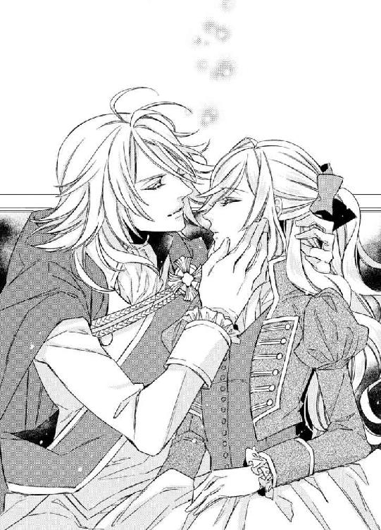

| 成り代わり王妃と暴君陛下のおいしい契約結婚【SS付】【イラスト付】 (ロイヤルキス文庫) | |
| 立花実咲 | |
| 株式会社ジュリアンパブリッシング (2016) | |
この物語はフィクションであり、実在の人物・団体・事件等とは、いっさい関係ありません。
イラスト・鳩屋ユカリ
「いいかい？ 王を大事に守らなくてはいけないよ」
スタインズ侯爵は、チェス盤の王の駒に触れようとした五歳の娘にそう言って聞かせた。
少女はじっと父の手元を見る。
「我々は......いつのときも王を守るために存在しているんだ」
縦横を八マスずつに区切った、市松模様のチェス盤にあった王と王妃を指さし、それから城、騎士、司教、歩兵の白黒の駒を十六個並べて、白と黒の駒を順番に移動してみせる。
「こんなふうにね。色々考えながら動かすんだよ」
少女の瞳には一番に王と王妃の駒が目に映り、ただひたすらそれを視線で追った。
「これはチェスという遊戯だけれど、私は大事なことを考えたいときにやりたくなるんだ」
王が悩んだとき、見誤りそうになったとき、状況を素早く判断し、進言したり諫言したりできる者が真の臣下なのだと、父は誇らしげに言った。
父は、侯爵にして外交官という地位にある。領主として領地を治める以外に、宮廷では重臣として扱われ、国王に信頼を預けられているそうだ。
それは幼い少女にもわかる。王宮で開かれる園遊会や御茶会といった席に侯爵夫人である母と一緒に出席したときには、父がどれほど国王を崇敬し、また国王からも愛されていることが垣間見えた。
でも、難しい話はちょっとつまらない。少女はただチェスの盤にある二つの駒に憧れていただけだった。
（王様とお妃様の冠......とっても素敵だわ）
そう王と王妃の冠がとても美しく輝いていたから、ちょっと触れてみたかったのだ。
しかし。
話の途中で、思いがけないことを提案される。
「そんなに気になるのなら、おまえも一緒にチェスをやってみるかい？」
「え、わたしが？ おとう様、本当？ してもいいの？」
少女は円らな瞳をらんらんと輝かせた。
チェスは古の時代から名前や道具やルールを変えながら続いてきた、貴族たちの娯楽遊戯であり競技である。
父が言うには、王宮内でも王族や臣下たちが知略を磨く勉学の題材として使われているらしい。
『戦争を意味するものだから、女がするものではないし、はしたないこと』
と、いつもなら母に咎められ、刺繍や詩文を薦められていたのだが、この日は初めて許可してもらえた。
きっと忙しい父と子の仲睦まじい触れあいを見て、母も禁じられなくなってしまったのだろう。娘を見つめる父の笑顔はとても素敵だったし、側で微笑む母の表情はとてもやさしかった。
春のそよ風が窓辺から入り込み、頬を心地よくくすぐり、陽向のいい匂いを届けてくれる。
この日は、少女にとってかけがえのない幸せの時間であり、少女へ託された未来への入り口でもあった。
このとき幼かった少女はまだ『真実』を何も知らない。
紺碧の海に面したディンバー王国のアストル宮殿に、この頃では珍しく、異国からの訪問があった。二体の金の獅子と銀の双剣を描いた紋章をつけた馬車、それから毛艶のよい軍馬に乗った騎士が隊列を組んでいる。その後方から美丈夫を乗せた馬がゆっくりと闊歩して宮殿へ続くアプローチの前で止まった。
美丈夫は馬を停めて、地に降り立った。その弾みで、肩まで伸びた金色の髪が風に煽られ、怜悧そうな面立ちがあらわになる。
前髪の合間から覗かせた二重の双眸は、青い海を思わせるサファイアブルー。すっと通った鼻梁や引き締まった唇がはっきりと見える横顔はとても凛々しく、日頃から鍛錬されているだろう立派な体躯には精悍さとみなぎり、気品が漂っている。
（なんて素敵な方......どちらの国からおいでなのかしら？）
宮殿に仕える侍女カレン・フィル・スタインズは、王宮の正面へと向かう美丈夫に見惚れ、つい先ほど庭園で行われたお茶会の後片付けをしていた手を止めた。
美丈夫の後ろには側近と思わしき男が待機しており、なにやら彼に話しかけた様子である。
彼が振り返った瞬間、不意に目が合ったような気がして、どきんと鼓動が跳ねる。彼は興味深そうにこちらを眺めると、ふんわりと微笑んだ。だがすぐにまた前を向いて歩いて行ってしまった。
（今、私に微笑みかけてくださった......？ まさかね）
鼓動はそれからもとくとくと早鐘を打ち、イチゴジャムを舌で溶かしたように甘酸っぱく、熱いものがこみ上げてくるのをカレンは感じた。さらには、ぽうっと頬が火照っている。
春先のひんやりとした風がそよいで、その火照った顔が少しずつ落ち着く頃、カレンは侍女長に問いかけた。
「あの方々は、どちらからいらっしゃったかご存知ですか？」
「ベシュレル王国のブラッドリー・シュバインツ・エアルドレッド国王陛下ご一行ですよ」
それを聞いて、カレンは息を呑んだ。
諸国から外交のために使節団が訪れることはあるが、わざわざ王族しかも王じきじきに訪問することなど、滅多にあることではない。
しかもベシュレル王国の王は、大陸支配に野心を燃やす『暴君シュバインツ王』と諸外国から恐れられている人物だ。
（そんなふうには見えなかったわ）
ショックを受けるカレンに、侍女長は声を潜めて忠告した。
「カレン、あなたも失礼がないように仕事をしなければ、首を刎ねられるかもしれませんよ」
カレンたちの側を、見るからに剛健そうな騎士隊が通っていく。こちらへの視線を感じとった侍女長が強張った表情で頭を下げるのに倣い、カレンも同じように腰を低くして頭を垂れた。
「我々は騎士隊の皆さまのお世話をさせていただくことになりますよ。くれぐれもそそうのないように気をつけなさい」
「......わかりました」
カレンが返事をして残りの片付けを済ませると、王妃付きの女官二名がこちらへやってくるのが見えた。
「国王陛下がお呼びです。すぐに着替えて謁見の間に向かうようにと」
「陛下が？ かしこまりました。ただいま参ります」
カレンが急ぎ向かおうとすると、女官が手を広げて制止した。
「お待ちください。今日のお支度は、私たちにお任せいただくことになっております。こちらへどうぞ」
なんだかいつもと違う様子だ。カレンは腑に落ちなかったが、ひとまず侍女長に事情を話し、女官の案内に付き従った。
連れていかれたところは、いつもカレンが使っている着替え用の小間部屋ではなく、立派な部屋だった。
「ここは......」
大きな鏡に全身が映って、カレンはきょろきょろと部屋を見回す。たくさんの宝石や金糸銀糸を使われた美しいドレスが幾つもかけられている。
「王妃様のドレスルームです」
それを聞いて、カレンは飛び上がるほど驚いた。
「王妃様の......！ なぜ？ 私なんかが入ってきてしまって、よろしいのですか？」
「はい。陛下からの命令でございますので。詳しくは謁見の際にお話があるでしょうから。さあ急ぎますよ」
戸惑いながらもカレンは女官に身を委ね、あっという間にドレスに着せ替えられていく。
国王への謁見は、侍女が普段袖を通しているお仕着せのままではなく、レディとして身だしなみに気を配ったドレスを着ることがマナーとされているのだが──
それにしても今日は念入りだ。しかも王妃のドレスルームを使用するなどとはただごとではない。
着替えの手伝いをしてくれているのは、このとおり侍女仲間ではなく王妃の身の回りのお世話をする女官だ。いったいこれから何が起ころうとしているのだろうか。心臓がとくとくと鼓動を速めていく。
（なんだかこうしていると、まるで侯爵家のお屋敷に戻ったみたいだわ）
カレンはスタインズ侯爵の長女であり、本来なら侯爵令嬢という身分にある。それにも関わらず王宮内で侍女として働いているのには、あるわけがあった。
カレンの母はカレンが六歳の時に亡くなった。その数年後に、父は寂しさを埋め合わせるように新しい妻とその連れ子を迎え入れた。
カレンもまた母への恋しさを求めていたのだが、継母は実子でないカレンを疎ましく思っていて、父の見えないところでカレンをよく虐めていた。継母だけでなく継姉もまた一緒になってひどいことをした。
父が亡くなったのはその三年後、カレンが十三歳の時だった。その時にはもっと悲惨な運命が待っていた。
カレンは子どもながらに継母の浪費癖に困っていた父の姿を密かに心配していたのだが、悪い予感は的中した。ついに領地を没収されることまでに至ったのだ。
しかし幸いにも、救いの手が差し伸べられた。国王の計らいで一家には田舎の城を与えられ、難を逃れたのだ。父が生前、国王の忠臣の一人として活躍していたおかげだ。
ところがなぜかカレンだけは王宮に連れてこられ、侍女として働かせられることになった。それは継母のいやがらせではなく、国王が事実上ひとりぼっちになってしまったカレンを保護するために提案してくれたことだった。普通に引き取るだけでは周りが納得しないだろうから侍女として働かせるという名目で呼び寄せたのだ。
それ以来、カレンは臣下の住まう城に部屋を与えられ、侍女として慎ましく働いている。国王の嫡男クリス王子とカレンは幼なじみだ。気心が知れていることもあって、同時に王子の世話係を任命された。
いずれクリスが婚約者を迎え入れ、王太子という立場を表明すれば、カレンは次期国王陛下のお妃となる女性の付き人である、女官という立場を与えられることを約束されていた。
すべて父の生前の務めが評価されてのことだ。カレンは亡くなった後も娘を守ってくれている父に心から感謝し、そして敬意の念を抱いた。
カレン自身は、出世がどうという意識はないけれど、国王がかわいがってくれることに甘んじることなく、せめて恩返しできるように誠心誠意を尽くすようにしている。
もとから身体を動かすことは好きだったし、誰かと話をするのも好きだった。お菓子を作ったりお茶を淹れたりするのはカレンの趣味でもある。果実の甘い香りがとくに好きで、自分でジャムを手作りすることもある。
その他には......やはり幼い頃に父から教わって以来、チェスが好きで、国王や臣下はもちろん来賓たちの遊び相手として楽しませた。
侯爵令嬢という立場で侍女となったことは、はたからみれば屈辱的なものであるかもしれないが、カレンはそうは思わない。むしろ前よりもずっと居心地がよいし、特別扱いせずに接してくれる侍女仲間のことも好きだ。
カレンの目指している女官という位は、侍女とはまた違う立場にある。王宮内の世話係という点では共通するところはあるが、王族の側仕えとして直接命令を受け、ときには王妃の花嫁教育を指導したり、仕立て職人に連絡を入れたり、など、より近い場所で事務的な面、心身的な面までサポートする責任のある職である。
女官のお仕着せは侍女のものとはまったく違い、王族とともに来賓に連れ立たれてもいいように、洗練された美しいドレスを着ている。
それゆえに王宮に仕える侍女たちは皆、同じ働く女性として女官に憧れていたし、カレンもまた例外ではなかった。
今回こんなふうに特別に呼び出されるということはもしかして......とカレンは胸に淡い期待を抱いた。
まもなくクリスが婚約者をお披露目する予定だと聞いていたし、その行事にあわせて女官に任命していただけるのではないだろうか、と。
ドキドキしながら女官に先導されて歩いていくと、謁見の間の前で衛兵が待機しているのが見えてくる。
「失礼いたします。カレンをお連れしました」
重厚な扉が開かれ、女官に従って部屋に入る。
すると、すぐさま「人払いを」と王から一声かけられる。王直属の近衛兵以外の従者はもちろん女官らはみな扉の外へと退出する。
ひとり取り残されたカレンは、玉座にいる王に向かって頭を下げ、名を呼ばれるのを待とうとしたのだが、誰かの視線を感じて視線を左手に向けた。自分よりも先に待機していた人たちがいたらしい。
その人物を目に入れた瞬間、あっと息を呑む。
ベシュレル王国の紋章をつけるにふさわしい、金色の髪が肩ぐらいまで伸びた獅子のように麗しき人......かの暴君と呼ばれるシュバインツ王ことブラッドリーだ。
そして、彼に付き従っているのは側近だろうか。腰まである髪を一つに束ね、片眼鏡をかけた、すらっとした男性が一人いた。
「カレン、顔をあげよ」
国王から命じられ、ハッと我に返ったカレンは、急ぎ姿勢を正した。
「ベシュレル王国から国王陛下がじきじきにお越しになった。挨拶をしなさい」
失礼なことをしたら首を刎ねられるかもしれない、と言っていた侍女長の言葉が蘇り、血の気が引いた。
「は、はい。お初にお目にかかりまして光栄です。ブラッドリー・シュバインツ・エアルドレッド国王陛下。私は......カレン・フィル・スタインズと申します」
深く腰を落として礼をとるカレンに、ブラッドリーは微笑みかける。
「カレン、おまえに会えて嬉しい。こちらへ来い」
「は、はい」
頭の中は混乱している。国王はなぜこんな賓客が来ているところにカレンを呼び出したのだろうか。挨拶をさせたのだろうか。
わけがわからなかったが、ブラッドリーに命じられるまま、カレンはとにかく彼のもとに近づいた。
舐めるような視線に囚われ、身体が震えを起こす。
すると、ブラッドリーはふっと笑いをかみ殺した。
「そんなに怯えなくともいい。おまえをとって喰らおうなどとは思っていないから安心しろ」
そう言われてもすぐに安心できない。ブラッドリーのまとう空気は神々しく、重責を背負ってきた歴史すら感じさせられ、おいそれと気軽に側に寄れるものではなかった。
おずおずと歩みを進めると、ブラッドリーがもどかしげにカレンの腕を引っ張った。
「きゃっ」
獣に捉えられる、そんなふうにも似た恐怖を感じたのも束の間だった。引っ張られた弾みで、カレンはブラッドリーの胸の中に飛びこんでしまい、どさりと布擦れの音が謁見の間に響きわたる。
力強い腕の中、硬い筋肉をすぐさま想像させるような逞しい彼の胸に受けとめられていた。慌てて身を引こうとすると、腰をぐいっと引き寄せられる。
見上げれば、すぐ間近にブラッドリーの端整な顔があり、青い海を思わせるサファイアブルーの瞳に捉えられていた。
「随分と初々しいことだな」
ブラッドリーは微笑みを浮かべる。それは、庭で彼と目があったときに向けられたものと一緒だった。恥ずかしさのあまり、カレンは真っ赤に顔を染め上げた。
「それに曇りのない、賢そうな瞳もいい。薔薇のような頬も、やわらかそうな唇も......」
「あ......」
声にならない。品定めをされているみたいで不快だと思ってもいいのに、澄んだ彼の瞳から目が離せない。
ほんの数秒だったかもしれないが、とても長い時間、見つめ合っているように感じた。
ごほんっと咳払いが聞こえ、術から解けたように我に返る。
「陛下、ディンバー王国の国王の前で......失礼になりますよ」
側に控えていた、黒く長い髪を束ねている片眼鏡の男が、声を潜めて進言する。
「しかし、我々にも時間がない。この子を見れば、言わずにいられるものか。視察に赴いた甲斐があったというものだろう」
ブラッドリーは悦に入ったように呟く。
「たしかに、おっしゃるとおりですが」
片眼鏡の男は頷く。二人の視線は同時にカレンに注がれた。
「いかがですかな？ カレンにお役目が務まるだろうか？ 余にとって娘も同然の子だ。どうか慈愛を賜りたい」
国王が心配そうな面持ちでカレンを見る。ブラッドリーは頷いてみせた。
「もちろん、お約束しますよ」
いったい何の話をしているのだろう。カレンにはまったく話が見えない。意味がわからないまま不安が募るばかりだし、申し訳なさそうに目配せをする国王の様子も気がかりだ。
（お役目っていったいなんのことなの......？）
「髪の色、瞳、背格好、骨格、所作が似ている。ここを訪れて庭園に立っていた姿を見て、まさか妃がこちらへ身を潜めていたのではと思ったぐらいです。彼女ほどの適役はいないでしょう」
さっきから自分の知らないところで品定めするような視線にいたたまれなくなり、カレンはブラッドリーに問いかける。
「あの、お話が見えません。いったいどういうことでしょうか」
「あぁ、おまえを無視してすまない。かわいいおまえを、我が妃にもらいうけたい、という話をしていたんだ」
ブラッドリーがさも当然といったふうに答える。
「なっ......」
カレンは言葉を失い、すぐさま玉座にいる国王に救いの目を向けた。すると国王は申し訳なさそうに眉尻を下げる。
「カレン、そなたには突然のことで驚かせてすまないが、そういうことだ」
「まさか！ 私は王宮に仕える侍女です。あまりにも身分が違いすぎます。こんな私では、エアルドレッド陛下に失礼にあたるのではありませんか？」
すぐ側にいるブラッドリーに失礼にならないように言葉を選びながら、カレンは必死に自分の想いを訴えた。
「......たしかに、そなたには侍女として身を置くように命じた。しかし侯爵の娘であることには違いないのだ。そなたの父親は余の信頼できる重臣であった。そして侯爵が天に召される直前に遺言を預かっておる」
「お父様の遺言......？」
初めて聞かされる事情に、カレンは戸惑う。
「ああ、そうだ。そなたが何不自由なく傷つけられることなく幸せに暮らせるように、いずれ伴侶を持つ日まで見守っていてほしいと遺言を預かった。それから、このようにも綴られていた。〝きっとカレンは賢い娘ですから、将来この国にとってきっとお役に立てる日が来るでしょう〟とな」
「お父様が、そんなことを......私は何も知りませんでした」
「あれを持ってくるのだ」
国王が側に仕えていた従者に命じると、濃紺の上衣を着た男性が前に出てきて、カレンに書簡を差し出した。
「こちらをお納めください」
そっと開いてみれば、父の遺言の内容が綴られ、スタインズ侯爵の印璽がはっきりと押されてあった。
「そなたが十六歳を迎えたら、事実を知らせることになっていたのだよ」
カレンは印璽をそっと指先でなぞる。色褪せた羊皮紙の文面を読むにつれ、指先は震えだした。
「とても混乱しています。なぜそれが、ベシュレル王国のエアルドレッド陛下のもとに嫁ぐことになるのですか？」
「我が国はこの大陸の中で、非常に緊迫した情勢下に置かれている。カレンが陛下のもとに嫁げば、両国はより強固な条約で守られ、他国からの干渉を和らげることができる。そなたが来る前にそういう話し合いをしていた」
カレンは真実を聞かされても尚すんなり納得はできなかったが、いかに大事な局面を迎えていることかは理解できる。
そして父の遺した言葉『国のために役に立つこと』というのが異国の王へ輿入れをすることというのだ。まさか自分の知らないところでそんな話になっているなんて。愕然としながらカレンは再び書簡に目を落とす。
「余は、そなたをかわいいと思うからこそ、我が国を守ってくださるであろうシュバインツ王に託そうと思い至ったのだ。我々は手をとりあって乗り越えていかなくてはならぬ。どうかわかってもらえないだろうか」
理解を求める言葉ではあるものの、厳命の声だ。国王は日頃から温和な人柄だが、今日はこれまでにないほどの厳格な空気をまとっている。そこには一国の王としての冷徹ささえにじんでみえる。国王の意志は固く動かぬものだと、前を見据える眼差しからも感じられた。
しかし冷静に考えれば、交換条件の『人質』ともとれる政略結婚なのではないだろうか。何か不利な条件がありはしないかと不安を抱きながら、カレンはブラッドリーを見た。
カレンの視線を受け取ったブラッドリーはきっぱりと否定した。
「約束を反故にはしない。我がベシュレル王国はこの機に友好を深めたディンバー王国を守ることを誓う」
その場に重たい沈黙が訪れる。カレンは衛兵に囲まれた玉座にいる国王と、片眼鏡の側近を連れたブラッドリーから一斉に注目され、身を硬くする。息遣いさえ響くほどに静まり返ってしまっている。
カレンはおそるおそる問いかけた。
「もし......もしも、私が拒むことがあったら、どうなさるおつもりですか」
国王が息を呑む。返事はすぐにもらえない。失望されてしまったのだろうか。しかし自分の身に関わることをすべて明らかにしておきたかった。
その間に割って入るように、ブラッドリーが重々しく口を開く。
「それは有益ではない。おまえの回答次第で、国の未来いや大陸の未来は変わるやもしれん」
「そんな。私一人の決断で、ですか？」
「国とはそういうものだ」
断定的に言われ、カレンは顔を真っ青にして言葉を失う。続けてブラッドリーは言った。
「花嫁はおまえにしかやれない。誰でもよければ人さらいでもしていたかもしれんが」
「陛下」と彼の側近が王の失言を諫め、ブラッドリーは手を挙げて牽制する。
「しかし、カレン、おまえだけに責務を押し付けようなどとは誰も思っていない。年頃のレディには酷な話だと我々は重々わかっている。おまえが気に病むのならばすぐに妃にならずともよい。とにかく代理を務めることを約束するならば、その後のことは善処しよう」
「代理、ですか？」
ますます意味がわからず、カレンはブラッドリーに尋ねた。彼はすぐさま頷く。
「あぁ。我が妃の代理だよ。実は、妃が失踪し、行方知れずになっている。国の事情があり、このまま空座にしておくわけにはいかず、現在は身代わりを立てている状況だ。しかしそういった事態が広く露見すれば、ゆくゆくは国内の問題ではおさまらず、近隣諸国を巻き込んだ戦争がはじまる可能性がある。それを阻止するための必要な措置と考えているんだ」
戦争と聞いてよりいっそう青くなる。国にはその国の事情があるだろう。そして大陸の中で大きな力を持つベシュレル王国に混乱が起きれば、ここディンバー王国をはじめとした近隣諸国が巻き込まれる可能性は高い。
しかも今は、鉱山などの資源が豊富なルスランという国に、各国が手を伸ばそうとしているところだ。ルスランが滅ぼされれば、次に標的に遭うのは隣接したディンバー......自然とそういった流れができあがる。
「国王陛下が先ほどおっしゃっていた私のお役目とは、そのことなのですね？」
「ああ、そうだ。諸国が混乱するような事態はどうしても避けたい。だから、おまえにこの務めを頼みたいのだ」
険しい表情は変わらない。
つまり、ベシュレルでは現在、王妃の身代わりを立てているが、このまま王妃が戻ってくる望みは薄いと結論を出したのだろう。そこで急ぎ王妃にそっくりのカレンを見つけた。そして、カレンには逃亡した王妃に成り代わってほしいと言うのだ。
状況はわかった。だが──
（そんなことが通用するの......？）
「王妃様が戻ってくる確率は、それほど少ないのですか？」
なぜ失踪し行方不明になったのか理由を知りたい。けれど、きっと他国の公式の場ではっきりと教えてはくれないだろう。カレンはそう思いながら控えめに尋ねた。
「戻らないだろう。今さら戻ってくれば自ら首を差し出すことになるのだからな」
ブラッドリーの表情に冷たい影が落ちる。王族が犯した罪は民よりもずっと重たいものだと聞く。王妃がどんな極刑に召されるのかを想像したら鳥肌が立った。彼は王妃を愛していたのだろうか。愛していた人に去られてしまった痛みはいったいどれほどのものだろうか。すぐにも代替を用意しなければならないのは事情があるからだとして、恋愛のひとつもろくにしていないカレンに彼の心身を満たせる自信がない。
「何か言いたげだが、失踪した妃とは互いに愛しあっていたわけではなく政略的な結婚だった。今の俺には心を預けているような女はいない。気負わずともいいし、おまえをないがしろにしようとも思わないよ」
どうやら考えが読まれてしまったらしい。でも、それはそれでちょっぴり寂しい気がした。
（私が異国に嫁ぐことになるなんて......ましてや、国王陛下の妻になるなんて......）
それよりも愛のない結婚は悲しい。できるなら、愛し愛されるような夫婦になりたい。成り代わりを頼まれているだけなのに、そう望むことはおかしいだろうか。
「たとえば、おまえが俺に惚れてくれさえすれば、すぐにも正妃として寵愛を授けよう。ここへ来てからおまえの視線を感じていた。あれほど熱心に見つめられるぐらいならば、そう遠い話でもないかもしれん」
ふっと微笑まれ、カレンは顔がかぁっと熱くなるのを感じた。聡い彼のことだから、きっと庭園で彼に見惚れてしまっていたことなど伝わってしまっていたのだろう。ブラッドリーは喉元で笑いをかみ殺している。
「明日にはここを出立し、ベシュレル王国におまえを連れていきたい。ディンバー王の意見を聞き、最終的な決断はおまえに任せよう」
ブラッドリーにそう促され、カレンは一拍おいたのち国王に判断を委ねた。
「陛下、これはお父様から引き継がれた任務なのですね？」
「あぁ」と国王が重々しく頷く。それ以外には答えない。けれど、眼差しから伝わる。カレンの意思を聞くために呼び出したのではない。これは決定事項なのだ。それを理解するように無言で訴えかけているのだ。
カレンはやさしくて立派だった父のことを思い浮かべた。
父が遺した言葉、国王からの温情、それをむげにすることは、カレンにはできない。
わきあがってくる不安を握りつぶすように手のひらに力を込めて、カレンは国王を見た。
「わかりました。お引き受けいたします」
国王の灰色の瞳にはやさしさとなんともいえない物悲しさが同居していた。
「カレン。これは別れではないと言っておこう。余はいつでもそなたを気にかけておる。遠い異国にいてもそなたが困ったときには力を貸そう。それを覚えておいてほしい」
「ありがとうございます。陛下。これまでの温情についても、心から感謝を申しあげます」
カレンは深々と頭を下げた。
祖国を離れることなど考えたこともなかった。この地より馬車で七日ほどかかる場所にある、海の側にあるベシュレル王国の話は父から話を聞いたことはあったが、幼い頃のカレンにとって夢物語のような空想的な存在でしかなかった。
知らない異国に行かなくてはならないのは怖い。だが、きっと父が生きていたとしたらこういう決断をしたと思う。カレンは愛する父から大事な使命を託されたのだ。それならば遺言どおりに受けとめるしかない。
「泣いて喚くか或いは真っ青になるかと思ったが、まだ十六だというのにおまえは賢いな」
涙が溢れそうになっていたところ、ブラッドリーはカレンの頭を撫でた。
「案ずるな。おまえをけっして悪いように扱うようなことはしない。大事に迎え入れよう」
その指先の仕草はやさしく、けして嫌な気持ちにはならない。そればかりか、青い瞳に魅入られて、心を奪われてしまいそうになるぐらいだ。
同情されてはいけない。絆されてはいけない。もしこれが国同士の取引なのだとしたら、こちらに貸しを作ったぐらいに思わせなければいけない。そんなふうに心の中で唱えていたら自然と涙が収まった。
カレンはきゅっと唇を引き締め、まっすぐに前を見据える。
「あぁ。そういう瞳をする女が好きだ」
ブラッドリーはそう言ってカレンに微笑みかけた。好きだ、と惜しむことなく告げられた言葉にむずかゆくなり、胸にじわりと熱いものがこみ上げる。なんてやさしい笑顔なのだろう。
（本当にこの人が、噂の暴君......シュバインツ王なの？）
噂に聞いていた暴君のイメージとは全然違った。人を人とも思わず、何人も切り捨て、大陸を荒らす勢いだと聞いていたのに。それも今回、成り代わりを命じられたことも、何か関係しているのだろうか。
「突然のことで驚かせただろうから、今宵はおまえとゆっくりと話をする時間をとりたい。国の情報を知っていた方が、おまえも心の準備がつくだろう」
ブラッドリーは国王の方を振り仰ぎ、意見を求める。
「陛下、カレンをお預かりしてもよろしいでしょうか？」
「あぁ。頼みましたぞ。カレンも、よいね？」
「はい。国王陛下。仰せのままに」
カレンは腰を落として礼をとる。
心の中で父と母のことを思いながら、自分の身に降りかかった運命をしっかりと受けとめた。
（お父様、お母様......私は、国王陛下からお役目をいただいたわ。どうかちゃんとやりきれるように天国から見守っていてね）
その後、女官に客間へ案内され、カレンはブラッドリーと二人きりになった。謁見の間で対面したときとは違った緊張感で、心臓の音が速まっていく。
二人がソファに腰をおろすと、女官があたたかいハーブティーを淹れてくれた。
ジャスミンの甘やかな香りが漂うのを感じると、張りつめていた気分がいくらか和らぐ。
女官が退出したあと、ブラッドリーはティーカップをテーブルに置いて、カレンの方を見た。
「なぜ国王陛下がおまえを俺のもとに嫁がせる気になったか、考えたか？」
「父の遺言にもありましたし、両国のひいては諸国の平和のために必要なこととして......ですよね」
カレンもティーカップをソーサーの上に戻し、ブラッドリーを見る。
「もちろんそれもあるが、おまえが任務につけば侯爵の娘として恥じることのない新たな爵位を授けることができると考えておられる。無論、それは万が一にもおまえがこちらへ戻った場合の話だが。いずれにしても国王陛下はおまえひとりに責任を押し付けてそれっきりにするつもりはないということだ」
国王の慈愛を知ったカレンは、胸が熱くなるのを感じた。形式的に政略的な結婚として異国の王のもとへ差し出されたことは正直に言えばショックだが、国王はけっして目先の利益や不利益を優先したのではなく、国のことを考えた上でカレンの未来のことまで考えてくれているのだ。
「愛されているのだな」
ブラッドリーがそう言い、やさしい眼差しを向けてくるものだから、カレンはくすぐったさのあまりに慌てて謙遜した。
「私の亡くなった父が、生前外交官として国王陛下の支えになっていたからです。天国にいる父には感謝しなくてはならないと思っています」
国王がひとりぼっちになってしまったカレンを気にかけるのは、父があの遺言書を残してくれたからだったのだ、とここにきて納得がいった。
「スタインズ侯爵が正妻と知り合ったのは国王陛下が用意した縁談がきっかけだったそうだな」
「はい。そう聞いています」
国王から紹介された二人はどちらも一目惚れだったらしい。父と母が頬を染めて仲睦まじく語り合っていた日々が懐かしく思い出され、胸がきゅっと苦しくなる。
「正妻は賢かったが、後妻はおそろしくひどい女で、継子であるおまえに辛くあたっていたと、国王は嘆いておられた。見るに見かねておまえを王宮に匿ったということだったな」
憐みの視線を感じて、カレンは首を振る。
「いいえ。私は令嬢としてではなく、侍女として働く機会をいただけたことを感謝しています。とてもやりがいを感じていたのです。女官になることを目標にしていたぐらいに」
「そうか。偉かったんだな。おまえはきっと立派だった両親に似たのだろう」
カレンは唇をきゅっと結んではにかむ。ブラッドリーに慰めてもらうと、天国にいる父と母が微笑んでくれているような気さえした。
ちょっぴり涙が溢れそうになってカレンが俯くと、髪を結いあげてむき出しになった耳に、やわらかい感触が伝った。
「きゃっ」
彼の唇が触れていたのだ。
「あ、あのっ」
「先ほどから思っていた。おまえの肌は......なぜこんなにも甘い香りがするのだ。味覚さえも刺激されそうないい香りだ......」
衝撃を受けたかのように、ブラッドリーは呟く。
「ああ、あのっ......」
思いっきり身体を引こうとしたら腕を引っ張られてしまう。
「っと、暴れるな」
もう片方の手でぐっと腰を抱き寄せられ、背中にブラッドリーの大きな手が触れる。
彼はそのままカレンに顔を近づけてきて、瞳をじいっと覗き込んできた。カレンは戸惑い瞳を揺らす。香水のようなものはつけていない。思い当たることといえば、蜂蜜とレモンを混ぜたジャムパイを作ったこと。
「あ、きっとお菓子を作ったからだわ」
「菓子？ 厨房の者ではなく、おまえが？」
ブラッドリーが意外そうな顔をする。
「はい。実は、私の趣味の一つなんです。お菓子作りのほかに、お茶作りもしているんですよ。果汁をしぼって香草をいくらかブレンドしたハーブティーが好きなんです」
「なるほど。甘い匂いがするのはそのせいか。色気のある事情ではないのだな」
ブラッドリーに笑われて、カレンは頬を赤らめた。十六歳にもなって子どもっぽいと言いたいのかもしれない。勝手にドキドキとして意識している自分が恥ずかしい。
ブラッドリーはようやくカレンから離れ、ソファに背中を預けた。
「チェスはもうやっていないのか？ 以前に、おまえと勝負をしたことがあるぞ」
「え？ 私と陛下がチェスを？」
カレンは目を丸くする。まったく身に覚えはない。だいたいこんな美丈夫と出会っていたら記憶にないはずがないだろう。
「人違いでは？」
「いや、おまえだよ。スタインズ侯爵から紹介されたのだから間違いない。まあ、もう十年前のことだから忘れていても仕方ないか」
「十年前......」
「ああ。まだおまえは六つ、俺は十四で......王子だったときだ。おまえを相手にしていた大人たちは、子どもの遊びごとに付き合うといって舐めてかかった結果、完敗だったな。俺はそんなおまえが気になって勝負を頼んだ。なんとか互角にもちこんで負かしたんだが、その後、悔しがって泣くおまえを侯爵が宥めていた。大人げないことをしたと側近に叱られた。だが、なぜかおまえには手を抜く気にはならなかったのだ。まっすぐな瞳をするおまえに心を掴まれていた」
ブラッドリーは懐かしそうに目を細める。カレンにその記憶はないが、なんとなく父の様子が思い浮かぶようで胸がせつなく締めつけられた。
「それから使節団に同行して俺はまたおまえに会うのを楽しみにしていたんだが、いつからか、おまえの姿はどこにもなくなっていた。いずれ宮廷にあがるだろうと思って期待していたのだが、まさか侍女になっていたとは」
と言い、ブラッドリーはこちらをじっと見た。
「今まで、好いた男はいなかったのか？」
カレンはほんのり頬を紅潮させて「いえ」と首を横に振る。恋はまだしたことがない。男性を女性とは異なるものだと意識したことや遠くから憧れることはあっても、ロマンス小説にあるような、恋い焦がれる感情を経験したことはない。それ以前に、侯爵令嬢として社交界デビューすらしていないのだ。
「おまえがその気ならば、その役目を俺が引き受けても構わない」
熱っぽい視線を注がれて、カレンは首を横に振る。
「とんでもありません」
そう告げた瞬間、強く腰を抱き寄せられ、見下ろす青い瞳に、吸い込まれてしまいそうになる。焦点も合わなくなるほどの至近距離に近づき、今にも唇同士が触れそうだった。
「美しく成長したおまえに興味がある。俺は任務のためだけにおまえを求めない。言っただろう？ 寵愛を授けようと」
「それは......」
「男に愛されてこそ花は美しく開く。蕾のまま放っておくのは惜しい。大事に育てるつもりで、そう考えているよ」
囁く声色は甘く、恋人同士の睦言のようだ。匂い立つような彼の色気にくらくらする。
「......っ」
「まあいい。おまえにもいずれ実感する時が来るだろう。その日が楽しみだ」
唇同士が軽く掠めそうになり、とっさに俯く。すると、くちづけし損ねたブラッドリーがくすりと笑い、カレンの額に軽く唇を押し当てた。
「明日から長い旅路になる。今夜は早く眠るといい」
そう言い、ブラッドリーはカレンの腕をそっと離した。
距離ができてからも、カレンは顔をあげられなかった。鼓動がどくどくと早鐘を打っていて、身体が火照っている。こんなにも男の人が逞しい生き物であることを側で感じたのは初めてだった。
『美しく成長したおまえに興味がある。俺は任務のためだけにおまえを求めない。男に愛されてこそ花は美しく開く。蕾のまま放っておくのは惜しい。大事に育てるつもりで、そう考えているよ』
──その日の夜。ブラッドリーの声が何度も蘇ってきては、鼓膜に溶けていき、なかなか眠りにつくことができなかった。
翌朝、出立の準備を済ませたカレンが、部屋の窓辺に立ってぼんやり過ごしていると、突如ノックの音が響いた。「はい」と返事をするとドアが向こう側から開かれる。
「やあ」
てっきり女官だと思っていたら、訪ねてきたのはクリス王子だった。
「あ、おはようございます。クリス王子殿下」
「おはよう。出立の前に、少し君の部屋で話をしてもいいかな？」
「はい。中へどうぞ」
「ありがとう。失礼するよ」
普段から気弱な性格だけれど、今日はいつにもなく神妙な面持ちをしている。クリスは部屋の扉を閉めてこちらにやってくる。そして二人で窓辺に並んだ。外には既に馬車が待機しているのが見えて、クリスは苦々しい表情を浮かべた。
「まさか君が今日からいなくなるなんて信じられないよ。本当に......本当にベシュレル王国に行ってしまうのかい？ こんな......輿入れの準備もさせずに連れていくなんて......人質も同然じゃないか」
クリスはカレンの両肩を掴みながら、真実を問いただそうとする。彼の整えられた黒髪が乱れ、さらりと額に流れる前髪の奥に、心配そうな瞳が覗いていた。
「国のための任務ですもの。今まで私は贅沢すぎるほどの恩恵をいただいていたんです。その分をお返しする時がきたんだと思うんです」
カレンは謁見の間でのできごとを思い返しながらクリスにそう告げた。表立って輿入れを行わない事情は、あの場に居合わせた者だけの秘密だ。たとえ幼なじみの王子という立場にあるクリスにも教えるわけにはいかない。
凛として姿勢を変えないカレンに、意志は固いと感じたのか、クリスは頭を振った。
「まったく解せない。君はいつだってそうだ。運命に身を委ねてすべてを受け入れる。とても真似できない。僕には何もできないのがはがゆいよ」
「そんな顔をなさらないでください、クリス王子殿下。私のことよりもまもなく婚約披露パーティーがあるではないですか。私も本当ならお菓子を作ってお祝いしたかったのですが......拝見できなくてそれだけが残念です」
「カレン、そんなにとりつくろったりかしこまったりしないでくれよ。僕たちは幼なじみじゃないか。異国の地にいても君を助けることはできる。それを忘れないでいてほしい」
クリスに心配をかけてはいけないので、カレンはにこやかに、女神のように微笑んだ。
「......ありがとう、クリス。きっと、あなたのように正義感の強い人が将来ディンバー王国を導いてくれるなら、この国は平和でいられるはずと信じているわ。だから、私も異国で橋渡しになれるようにしっかりがんばるわね」
「ああ。せめて、僕は君が誰よりも幸せになることを願うよ」
クリスに差し出された手を見て、カレンは涙が溢れそうになりながらその手を握った。
幼なじみで兄妹のように触れあってきたクリスとの別れはやはり寂しい。継母や継姉に虐げられても彼はずっと味方でいてくれた、大切な友人だ。
でも、カレンがベシュレル王国に旅立つことが、いつかこの国と手を結ぶために必要なことになるはずだと信じたい。カレンは近い将来国王になるクリスを想像しながら、彼の手をぎゅっと握った。
ディンバー王国から馬車で移動し、三日目には中立国ルスランの国境を越え、その間にも何ヶ所か宿屋に宿泊しながら、六日目にはついにベシュレル王国の城に辿り着いた。
城、というよりも要塞といった方が、表現としては正しいかもしれない。
重厚な城壁には蔦が幾重にも絡まって繁茂し、至るところが煤けていて、いやでも戦争の爪痕が残っていることを思わせる。まるで死者の灰を吸い上げたかのような不気味さだ。しかし城門をくぐった先に見えた景色はまた別世界のようだった。
夕陽をのみこんだような赤茶色の石畳の街道は美しく、円錐の形をした荘厳な宮殿は陽に照らされて輝いている。その神々しい姿は、主である王が戻ったことを喜んでいるように見えた。
外の景色に圧倒されていると、隣に座っていたブラッドリーが突然、手を握ってきた。
「おまえに大事なことを告げておこう」
カレンは弾かれたようにブラッドリーを見つめる。彼の表情は美しい夕暮れの景色と真逆だ。闇夜に目を光らせる狼のように鋭い眼差しだった。どきりと鼓動が波を打ったように跳ねる。
「ここから先......王宮内では俺以外の者に安易に気を許すな。いいな？」
「は、はい」
ブラッドリーの厳しい視線にあてられ、カレンはぎゅっと身を硬くする。
「私も含まれるのですか？ 陛下」
片眼鏡の男、アシュトンが物憂げに言った。ディンバー王国を出立する前にも紹介されたが、彼はブラッドリーの側近で、宰相を務める男らしい。
「おまえはまた別だ」とフォローしつつ、ブラッドリーは続けて言った。
「俺が公務でいないときはアシュトンを頼れ。多少変わった趣味の持ち主ではあるが、そつがなく頼れる男だ」
ちらり、とブラッドリーがアシュトンを一瞥する。カレンは片眼鏡の男に軽く頭を下げた。
変わった趣味とはなんだろう。見た感じでは紳士的で忠誠心が高い男性というふうにしか感じないが。
「何かお困りのことがあれば、なんなりとご相談ください」
アシュトンはかしこまって挨拶をする。腰まである髪をひとつに束ねたその毛先を、さっきから突いている鳥がいることに気付く。
彼の肩に常に乗せられている白い鳩がバサバサと羽音を立てる。伝書鳩だろうか。随分飼い慣らしている様子だ。
（もしかして趣味って、この鳩のこと......かしら？）
鳩に触れているときはいやに機嫌が良さそうで、それ以外はたいてい無表情なので感情がわかりやすそうでわかりにくい。
「私の顔に何か？」
じっと見ていたらアシュトンに尋ねられてしまい、カレンは「いえ」と首を横に振った。
「王妃殿下、さっそくですが、ここで馬車はおしまいです。降りられましたら、すぐ居城の方に案内いたしますよ」
王妃殿下、と言われて、身が引き締まる。ついに『成り代わり』の生活がはじまるのだ。
いよいよ馬車が城のアプローチに停まり、国王夫妻を守るために近衛騎士らが既に待機して見守る中、カレンはブラッドリーに手を借りて馬車から降り立った。
急ぎ宮殿の裏手へとまわろうとする一行の前に、濃紺の軍服を着た男が駆け足でやってくる。
「兄上、おかえりなさいませ」
金色の髪の、右目を黒い眼帯で覆った若い青年はそう言い、ブラッドリーの隣で緊張しているカレンを見つけて、ハッと息を呑んだ。
「もしやその方は。本当に見つかった......のですか」
まるで幽霊でも見たかのようにまじまじと眺められて、カレンは戸惑う。
「いや、代理だ」
ブラッドリーは低い声で言って、カレンの方を振り向いた。
「カレン、ノエルは俺の実弟だ。信頼できる人間だから安心していい」
改めてノエルを見ると、彼も状況をのみこんだのか、にこやかな笑顔を向けてくる。眼帯で隠れていない方の瞳が好奇心いっぱいにきらきら煌めく。
「カレンかぁ。よい名前だね。僕はノエル。このとおり怪我で右目が見えなくなってしまったから大きな戦力にはならないんだけれど、君の勉強なら見てあげられると思うよ。えっと見たところ十六歳ぐらい......レディになりたてかな？」
「はい」
「よかった。僕は十七歳になったばかりだよ。年が近い同士仲良くできると嬉しいな」
ノエルのやさしそうな爽やかな笑顔につられて、カレンはホッと肩の力を抜く。
「私の方こそ、よその国から来てまもなくで心細いので、そう言っていただけると嬉しいです」
味方は多ければ多いほどいい。それもブラッドリーを慕っている様子だし、実弟ということであれば尚、相談しやすいだろう。
「まったく、妬けることだな」
横にいたブラッドリーの揶揄めいた一言にハッとする。その隣に待機していた宰相アシュトンはどことなく寂しそうな顔をしていた。どうやら役目を奪われたと思ったらしい。こころなしか彼の肩に乗っている鳩まで沈んでいるように見えて、カレンはあわあわと焦る。
「そんな！ 僕はそういうつもりでは！ けして宰相殿を差し置いて、というわけではありませんから」
先に慌てたのはノエルの方だった。あたふたとフォローする。カレンも同調の意味を伝えたくて首を縦に振った。かえってきまりわるくなってしまったのか、アシュトンは咳払いをし、肩に乗っている鳩もバサッと羽音を立てた。
「私は何も言っておりませんよ。やきもちを妬かれているのは陛下の方では？」
白い手袋を填めた指先で片眼鏡をすっと正し、しれっとした顔でアシュトンが言う。ブラッドリーは一瞬だけ意表を突かれた顔をしたもののポーカーフェイスのまま苦笑し、話に乗ることはなかった。三者三様の反応を眺めたのち、王宮の正門の方へ顎をしゃくった。
「さて、長旅でみな疲れている。先を急ぐぞ、ノエル」
「は、失礼しました、兄上」
ノエルはわずかに頬を赤らめるが、すぐにも慎ましく礼をとり、カレンたち一行を見送るように一歩退いて控えた。カレンは通り過ぎてから、少しだけ振り返ってノエルに頭を下げた。すると彼は無邪気な笑顔を浮かべ、こっそり手を振ってくれた。
（陛下の弟君......ノエル王子殿下。かわいい人だわ）
思わず頬が緩んだ。親しみやすそうな感じだし、これから仲良くなれたらいいな、と思う。
それからカレンは隣にいるブラッドリーの横顔を見つめた。
まっすぐに前を見つめる悠々とした眼差しは素敵だ──彼の見据える向こう側には何が見えているのだろう。諸国から暴君シュバインツ王と呼ばれている男が見ている世界はいったいどんなものなのだろう。
実弟のノエルもいつか彼のような精悍な男性になるのだろうか。雰囲気や印象は正反対のようだが、容姿は似ている。金色の髪も、綺麗な瞳も、同じサファイアブルーだった。
ブラッドリーと共にディンバーからベシュレルまで旅をしてきて気付いたが、彼の瞳の色は光の加減によって暁の空のような薄青にも、陽の光に煌く海の紺碧にも変わる。しかしその輝きはいつでも変わらず、涼やかな澄んだ瞳だなと思った。
幼い頃、父とチェスをしていたとき、記憶に残っている言葉がある。
『カレン、志がある者は、表情に、眼差しに、瞳に、その心がすべて映しだされるものだよ』
そのときは深く考えなかったが、今は父の言葉の意味がしみこむようにわかる。
『ついていくべき未来に迷ったとき、誰を信じていいかわからなくなったとき、心を預けたいと思う人の瞳を見つめなさい。きっと答えが見えてくるはずだ』
（陛下がまだ王子殿下だった頃......どんなふうに私は彼とチェスをしたのかしら？）
カレンの心臓の音が速まっていく。まだ出会ったばかりの人なのに、もっと知りたいと渇望する気持ちがわきあがってくる。この気持ちは何なのだろうか。初めて体感する感情に戸惑う。
（これがお父様の望んでいたことで合っている？ 私のしていることは正しいかしら？）
正解だと言われるかどうかはわからない。けれど、自分で決めた道だ。ここから先は心して行動しなくてはいけない。カレンは少し顎を引いて、自分を叱咤する。
「王妃殿下の居城はこちらです」
アシュトンに先導され、ブラッドリーと共に城の中へと歩みを進めたとき、カレンの視線に気付いたらしく、ブラッドリーがこちらを振り向いた。
「どうした。気になることがあるのなら、遠慮せずに言えばよい」
「い、いえ。ただ......ご兄弟が似ていらしたので、王太后様ともお二人は似ていらっしゃるのかな、と思ったんです」
カレンの一言に、ブラッドリーがたちまち表情を曇らせる。
「あ、あの......」
何か、気に障ることを言ってしまっただろうか、とカレンは焦った。
「弟の目の傷は、王太后の刺客にやられたものだ」
感情を抑えつけるような、低い声音だった。
「え......」
すぐには意味がのみこめず、カレンはブラッドリーの表情を確かめる。憂いを帯びた彼の瞳がわずかに揺れていた。そこには懺悔のようなものも滲んで見えた。
「俺たちの母は死んだ。先代の王も、五人いた王子たちも。残っているのは、俺とノエルの二人だけ。そしてこの国で今、王太后と呼ばれる人物は、正妃ではなく妾妃だったイザベルだ。十一歳になる実子のカーティス王子を後継者にしようと必死になっている。だから、俺たち兄弟はもちろん、花嫁となる人間を邪魔に思っているんだ」
カレンは絶句する。とんでもない内情を聞いてしまった、と思った。
途端に、心臓がいやなふうに鼓動を速めていく。
まさか、ここへ来る前に聞かされた王妃の失踪問題も、王太后の策略が絡んでいるということではないのだろうか。
「それじゃあ......王妃様が失踪されたのも......？」
震える声で問いかけると、ブラッドリーは悔しそうに頷いた。
「国の政治は二つの派閥で割れている。実子を後継者にしたい王太后にとって、先代の王直系の世継ぎが一番厄介な存在なんだ。今までも幾度となくいやがらせをされてきた。失踪した妃は、亡くなった重鎮の一人娘で、彼女の父親は最初王太后の方についていた人間だったんだが、俺の方に寝返ったことで消された」
消された......その言葉に、ショックを受けて、何も言葉が出ない。
「妃は父親の死によって自分も殺されると思ったのだろう。挙式後すぐに行方がわからなくなり、その消息を王太后も調べて完全に消す気でいたようだ。しかし、こちら側が見つけた。殺されるために戻りたくはないと名を捨て修道女として暮らすと主張している。妃は後ろから見るとおまえの容姿にそっくりだった。王太后もしばらくは妃が戻ってきたと思いこむだろう。いずれ気付くだろうが、今一番に大事なのは......どういった形でもいい、王妃という存在が王宮にあることだ」
ブラッドリーはそう言い、よりいっそう表情を険しくさせた。これまでいったい何人が王太后の欲望によって犠牲になってきたのだろう。彼の様子を察するに、たった一人や二人というわけではさそうだ。
それほどまで権威を強欲にふるう王太后は、どんな女性なのだろうか。
カレンは思わずぶるっと身震いをした。まだ会ったことがない相手なのにもう既に殺気の目を向けられている気配がしたのだ。
「つまり、この先、私のこともきっと邪魔に思われますよね？ 意味があるんでしょうか？」
任務をまっとうする前に命を奪われるようなことがあれば、祖国の親代わりであった国王陛下に申し訳が立たない。自分なりに覚悟をしてきたつもりだが、そんな話を聞かされてしまったあとでは、やはり不安だし怖い。カレンが青ざめていると、ブラッドリーはそっと肩を抱き寄せてくれた。
「大丈夫だ。おまえのことは必ず守ってやるから安心していろ」
ぽんと頭をやさしく手のひらで包みこまれ、カレンは思わずブラッドリーを見上げた。見つめる瞳はおだやかな海のようで、髪を撫でてくれる指の仕草がやさしい。まるで家族の一員にそうするようにごく自然に触れられ、戸惑う。
やはり彼は噂の暴君シュバインツ王とはほど遠い気がする。そう感じるのは、まだ彼の一部しか見えていないからなのだろうか。
「さて、ここから先のことはアシュトンに色々聞くといい」
「あの、陛下はどちらにいらっしゃるのですか？」
急に突き放された気がして、カレンは心細さのあまりブラッドリーの上衣を思わず掴んでしまった。無意識の、とっさの行動だった。
「あ......ごめんなさい」
しっかりしなくちゃ、と心の中で自分に活を入れる。だが、足がかくかくと震えていた。
（だめよ、私。お役目でここへきているのに......）
自分が情けなくなってしゅんと俯くカレンの頭に、武骨な男の大きな手が乗る。
「脅すようなことを言ってわるかった。俺もおまえと離れるのは惜しいが、留守にした分の仕事が残っているんだ。どうしても政務に戻らねばならない」
ブラッドリーはカレンの髪の一房をそっと引き寄せ、そこへ唇を埋めた。彼の形のいい唇にそうされると、直接くちづけをされたわけではないのに、胸の奥が熱くなる。
すぐにもブラッドリーは離れて、カレンの顎をくいっとあげさせながら言った。
「そんな顔をするな。おまえには護衛をしっかりつける。夜になったらまた会おう」
カレンがおずおずと頷くと、ブラッドリーは微笑んで、それからマントを翻して行ってしまった。
あの微笑みは反則だ。子どものように嫌だとわがままに振る舞う気は毛頭なかったが、それ以前に、彼にはそう言わせる気を起こさせない。
（へんね。陛下のことを信用していいかどうかも、まだわからないうちに......どうしてこんな気持ちになるのかしら）
父と触れあったチェスのことを持ち出されたからだろうか。そうだとしたら、懐に入り込むのがうまい人だ。
「カレン様、さっそくですが世話係を紹介します。こちらへどうぞ。女官頭のサマンサです」
アシュトンに声をかけられ、カレンはハッとする。いつのまにか目の前にお仕着せ姿の女性が立っていて、紹介された女性が恭しく頭を垂れる。
「私の他にも二名の者が、主に王妃殿下の身の周りのお世話をさせていただきます。どうぞよろしくお願いします」
「はい。よろしくお願いします」
カレンも同じように礼をとろうとしたら、サマンサが目を丸くする。
「まあ、王妃殿下ともあろう方が、臣下にそのような態度をとってはいけませんわ。もっと自信をもち、高貴なる態度でいてくださらなければ......陛下から事情はお聞きになられたでしょう？」
サマンサが不安げに声を潜める。
「ご、ごめんなさい。祖国では侍女の生活が長かったの......これから直していくわ」
カレンが焦ると、アシュトンが口を挟んだ。
「まあまあ、到着されたばかりなのですから仕方ありません。幸い、王太后様ご一行は入れ違いで隣国のルスランに出立されています。少なくとも七日程度は猶予があります。練習だと思いましょう」
サマンサが出すぎた真似をしたと思ったのか、「失礼しました」と恭しく頭を垂れる。アシュトンは片眼鏡を整えつつ、カレンに助言をしてくれた。
「今後、カレン様に付き添う人間は、すべて国王陛下の腹心です。厳しいことを言う者がいても、それが王妃殿下のためだと思い進言していると思ってご容赦ください。また、逆に腹心以外の人間と接触する機会があった場合は、すぐに私たちをお呼びください」
「わかりました」
「では、私もこれにて失礼いたします」
アシュトンが退出する。肩に乗っている鳥が羽ばたきをし、一緒に去っていく。見送っていると、サマンサに声をかけられた。
「カレン様、先ほどの失礼をお許しください。このところ色々と王宮内で問題があり、ピリピリしていたものですから、つい......」
「いいの。私も至らないところがあると思うから、お互いさまということでどうかしら？」
カレンが歩み寄ると、サマンサはようやく気が抜けたらしい。ホッとした顔をした。
「では、お言葉に甘えてそうさせていただきます。まずは長旅でお疲れでしょうから、湯あみをいたしましょう」
すぐにもサマンサはカレンを湯殿へと案内してくれた。旅装用のドレスはもちろんシュミーズも下穿きもすべて脱がされて裸になり、手渡された綿布を一枚携え、大理石でできた浴槽へと近づく。あたたかいお湯に綿布を湿らせ、つま先からそうっと湯船に入り、肩まで沈んだ。
湯がたっぷりと張られた風呂からは白い湯気がゆらゆらと揺らめいている。
カレンは宙を仰ぎ、長旅で疲弊した身体を休めるように大きなため息をついた。額から滴がぽたりと流れていく。それにしてもこんなに立派な浴室を使用したのは初めてだ。あまりに広々としすぎていて、ひとりで入るのがもったいないほどだ。
「カレン様は、どの香りがお好きですか？」
側に待機していたサマンサから香油の瓶をいくつか差し出され、その中から、カレンは甘酸っぱい果実のような香りを選んだ。
「これにするわ」
「かしこまりました。ローズヒップの香油ですね」
そう言い、サマンサが湯の中に香油を注ぐ。たちまちいい香りがたちのぼった。
「それから、こちらは陛下からカレン様への贈り物です」
「陛下が私に？」
思いがけないことだったので、つい鸚鵡返しをしてしまった。
「はい。薔薇の花をたくさん......」
サマンサは籠の中にあった薔薇を湯に流し込んでいく。すると赤とピンクの薔薇がみるみるうちに広がって揺らめき、カレンの濡れた肌にも吸いついてきた。
「......とても華やかで、甘くって、綺麗ね......」
甘い香りをかぎながら、カレンは肩まで湯の中に沈んだ。花が湯に揺らめくたびに花びらが滴を吸って透明な宝石を輝かせる。それらは、見ているだけで清らかな美しさがあった。
「いい香りに包まれると気分も明るくなるでしょう？」
サマンサが得意げに言う。仕えている人間は主に褒められることが生き甲斐だ。その気持ちは祖国で侍女として過ごしてきたカレンにはよくわかる。だからカレンも心を込めて感謝の気持ちを告げようと思う。
「色々よくしてくれてありがとう」
「どうかそのお言葉は、カレン様から直接陛下にお伝えくださいませ」
慎ましく言いながらも、やはりサマンサは嬉しそうだ。
「そうね。陛下にもお礼を言うわ」
「さあ、あたたまりましたらマッサージもさせていただきます。肌がすべすべになりますよ」
サマンサの手が、カレンの肩から背中を滑っていき、凝り固まった筋肉の疲れを癒してくれる。腕から指にかけてやさしくほぐされると、その感触が気持ちよくて、うとうとと眠気がさしこんでくる。そのうち視界がぼうっとしてきて、いつの間にか瞼が閉じていた。
「......様」
名前を呼ぶ声がするが、頭の中がぼうっとして、意識が遠のいていきそうになる。
「カレン様、熟睡はなさらないでくださいませ。溺れてしまいますから」
身体を揺らされて、カレンはハッと目を開いた。サマンサはくすくすと笑う。
「ご、ごめんなさい、きもちよかったから......つい。こんなに至れり尽くせりのお風呂なんて初めてだもの」
「ふふ。光栄なお言葉をありがとうございます。今日限りではございませんし、のぼせてしまいますからこのあたりで仕上げにいたしましょう」
「ええ」
とても心地よかったので少し残念だが、カレンは言われるがままに湯船からあがった。
濡れた身体を綿布で丁寧に水気をふき取ったあと、ナイトドレスに着せ替えてもらった。髪を丁寧にとかしてもらい、ラベンダー水で肌のお手入れをされると、疲れきった身体がだいぶ楽になったのを感じた。
用意されていた菫色のふんわりとした軽やかなエンパイア型ドレスは着心地がよく、このままベッドに横になったらすぐにも眠れそうな自信があった。
しかし。
「こちらへどうぞ」
案内されたのは最初に通された部屋ではなかった。そればかりか、簡衣に着替えたブラッドリーがベッドの端に腰をおろして寛いでいたのだ。
夜着に身を包んですっかり気が抜けてしまっていたカレンは、ブラッドリーと対面した途端にどっと血液が頭に集まるような思いだった。
彼も湯あみを済ませたばかりなのか髪が少し濡れていて、頬の血色がいい。胸元を肌蹴させた姿は、盛装を着ていたとき以上に雄々しく、えもいわれぬ色気が漂っている。
（どうしよう。不意打ちだわ）
カレンは自分の胸がドキドキと弾むのを感じ、なんともその場にいたたまれない気持ちだったが、頼りのサマンサは「それでは私はこれで」と言い逃げするように退出してしまったので逃げ場がない。
「あ、あの、陛下......贈り物をありがとうございました。とても心地よかったです」
カレンはおずおずとブラッドリーの側に行き、お礼を告げた。
「おまえが気に入ったのならよかった」
ブラッドリーはそう言って微笑むと「こちらへ来い」とカレンの手を引っ張った。
「きゃっ」
よろめきそうになった身体をとっさに支えられ、至近距離で目が合いドキッとする。ベッドが二人の重みでぎしりと軋み、カレンの手の上にブラッドリーの手のひらが重なった。
「そんなにがちがちに緊張するな。自然にふるまえとサマンサにも叱られていただろう？」
「は、はい......」
「七日の間に、俺にも慣れておくことだ」
重ねられた手に意識をもっていかれ、指がやさしく絡まるのを感じた。髪を触れられたときとは違う、直に感じた彼の指先は節くれだっていて、骨っぽい。剣を握っている騎士と同じ武骨さを感じた。
まさかこれからそういうことをする......のだろうか。一抹の不安を抱いていると、震える唇をそっと指先でなぞられた。
ふっと、ブラッドリーは表情を和らげる。黙っているときは整いすぎだと思うほど美しいので、こうして微笑んだときの威力といったらない。こんな魅力的な夫の側から逃げ出したくなるぐらい、王太后はおそろしい人なのだろうか。
ブラッドリーの顔が近づいてきて、彼の指先がカレンの顎をついっとあげさせる。熱い吐息が唇を濡らし、今にも触れあいそうだった。
カレンは目を丸くし、空いた方の手でブラッドリーの唇をそっと押し返す。
「......ん、なんだ」
ブラッドリーは不満げに眉を顰める。
「あ、あの......待ってください。私、まだ......」
心臓がばくばくと激しく鼓動を打っている。カレンの気のせいでなければ、ブラッドリーはくちづけしようとした。
「今、言ったばかりだろう。おまえは俺の妃なのだから、こうして触れることなど自然なことだ」
まるで獣のような眼差しに射すくめられ、カレンはたじたじになる。
「ま、まずは王妃様の代理を務める......とお話ししたはずでは？」
「おまえの祖国で言ったことを忘れたか？ 俺は任務のためだけにおまえを求めない。男に愛されてこそ花は美しく開く。蕾のまま放っておくのは惜しいから、俺なりに大事に育てるつもりだ、と言ったはずだ」
湯からあがったばかりの肌から薔薇の香りが甘く漂う。今夜ブラッドリーが贈り物をしてくれたのは、そういう意図があったのだろうか。うっかり無邪気に喜んでいた自分が恥ずかしい。
「......あっ、そんな。待って、ください」
「俺はおまえを気に入っている。気に入った女を抱きたいと思うのは男の性だ。早く互いの関係を馴染ませたければ、肌を重ね合わせるのが一番てっとり早いだろう」
言っていることはわかる。当然そうするべきとも。けれど、心の準備が整っていない。男女の閨事とはこういうものなのだろうか。
「あっ......」
耳朶を舐られ、びくりと背が戦慄く。唇から熱いため息がこぼれ、自分が自分ではないような声が漏れた。恥ずかしさのあまり顔をそむけると、ブラッドリーの唇が首筋を辿り、やさしく吸いつく。
「んっ......ぁっ」
「なかなか、そそる声を出すんだな、おまえは」
熱っぽい声が聞こえたかとおもいきや、そのまま、押し倒されてしまった。
「ふ、あっ......」
ぎしり、とベッドが軋み、仰向けになったカレンの上に、ブラッドリーが覆いかぶさってくる。そして彼の武骨な手が、カレンの色白の肌を堪能するように滑り、身につけているナイトドレスを肩から脱がせようとする。
「ひゃっ......ぁっ」
思わず抗おうとしたが、男の腕力には敵わなかった。するすると脱げていってしまった。
「だ、だめ......っ、恥ずかしいわ」
「そんなふうに構えるな。素直に身を委ねていればいい」
ブラッドリーはあらわになったカレンの胸のふくらみを捉え、豊かな感触を愉しむように揉みあげながら、その光景を見下ろす。
「いやっ......そんなふうに、じっと、み、見ないで......」
「やわらかいな。ずっと触っていたいぐらい気持ちいい」
「だ、だめっ......」
自分以外の人に触れられるのは、初めての感触だった。恥ずかしくて隠そうとするけれど、やっぱりブラッドリーは許してくれない。胸の先端を指先でそろりとくすぐられ、ビクンと身体が打ち震える。
「あ、んっ......やっ......」
いやいやとかぶりを振るものの、ブラッドリーはほしいままにカレンの胸を愛撫する。刺激されるたびに乱れる吐息ごと塞ぐようにキスをしながら、ゆったりと乳房をこねまわす。
口腔で舌を絡められながら胸を揉みしだかれると、胸の先端がじんと甘く痺れ、なぜかそこを直接舐められているような錯覚に陥り、秘めたところがじわりと熱っぽく潤むような気がした。
ちゅっちゅっと音を立ててキスをされると、それが頭の中に溶けだして、カレンの潜在的な欲求を引き出そうとしてくる。羞恥心以上に気持ちいいという感覚がなじみはじめていた。
「んぅ......はぁ......」
ねっとりと絡み合っていた舌が離れ、舌同士を結んでいた銀糸のような唾液が、つっと垂れる。ブラッドリーは滴を啜るようにカレンの顎の下に唇を寄せて、顎の下、首筋、胸の丘へと辿るように唇を滑らせていき、やがて控えめに主張していた乳首に舌を這わせた。
「ひっぅ......あっ」
ざわりと背筋が戦慄く。初めて体感するなめらかな感触に驚き、思わずカレンはブラッドリーの肩を押し返したり、頬に手を伸ばしたりして妨害しようとするが、両手をそれぞれ握られてしまい、逞しい男の身体に半身を押さえつけられていては何もできない。
「ん、暴れるな。感じていろ。俺が、おまえを......女にしてやる」
無抵抗のカレンを見下ろし、胸の先端を唇に含み、ちゅうっといやらしく吸い上げるブラッドリーの仕草にどくりと心臓が波打つ。まるで今の彼は獣みたいだった。
「あ、っ......舐めちゃ、やっ......」
カレンはたまらずに仰け反るが、ますますブラッドリーの唇に押し付けるような形になってしまう。強弱をつけて吸い出そうとしたり、舌で粒を転がしたり、濡れた感触がまとわりついて、思考がぐずぐずと溶けていく。
「......やっ、あぁっ......！」
唾液で濡らされた先端は、赤々といやらしく艶めく。小さな粒のような形をしていただけのはずだったのに、舌をねっとりと這わされたそこはみるみるうちに硬くなっていき丸みを帯びていく。ブラッドリーは執拗にそこを責めた。
「や、......ぁん、あっ......そんな、腫れちゃう、いやっ......」
「ここが勃ちあがっているのは、おまえが感じているからだ」
本当か嘘かなんて経験のないカレンにはわからないけれど、たしかにそこを弄られると不思議な気持ちになる。やめてほしいのに、もっとしてほしいような欲求が羞恥心と共にわきあがってくるのだ。
はぁ、はぁ、と息を乱していると、ブラッドリーは反対側の乳首に舌を這わせ、乳輪ごと舐めて潰したり、きつく吸い上げたりする。
「ん、あぁ、っ......んっ......」
「ほら、硬くなっていく。気持ちいいならいいと言えばいい」
さっき舐めていた右側の突起を指で擦りながら、左側の突起を何度も、何度も執拗に舐めては吸い上げる。だんだんと硬くなっていくのがたしかにわかるし、さっきよりも敏感になっている気がする。しこった粒を擦られると、瞼のあたりがじわりと重たくなって、秘めたところがうずうずと疼きはじめるのだ。
「こうして抱かれるのも、おまえの務めだ」
先端を弾かれるたび、びくりと身体が戦慄き、下腹部の奥からじわりと熱いものが染みでた感触がした。
「はぁ、......あっ......これ以上、だめっ......」
「今に何も考えられなくなる」
ブラッドリーの手が太ももを這っていき、下穿きの上からなにかを確かめるように動く。そこはカレン自身が変化を感じていたところだ。
「そこ、触っちゃ、やっ......！」
「自覚はあるようだな？」
下穿きの真ん中をゆったりと擦られた瞬間、どくりと中が蠢いた。
「あ、あぁっ！」
まるでもう一つそこに心臓があるみたいに脈を打っている。ブラッドリーの指が上下に往復するたびにじんじんと疼いてたまらなくて、布はしっとりと濡れ、次第にくちゅくちゅと淫猥な音が響きはじめる。
「やっ......だめ、っ......汚れちゃうわ......」
「ならば、直接、触ろうか」
余計なことを言わなければよかった、と後悔しても遅かった。あっという間に下穿きの中にブラッドリーの手は入っていき、薄い繁みをかきわける。そして彼の長い指が秘めたところに這わされてしまった。
「は、ぁっ......やっ......」
ぬるぬるとぬかるんで滑るそこを広げられたかとおもいきや、先端のしこったところをくりっと指の腹で擦られた瞬間、目の前で火花が散ったみたいに明滅した。
「あ、ンっ......そこ、さわっちゃ、だめっ......」
あまりに敏感なところを触れられ、びくんと弾かれるように腰が揺れる。そそうをしてしまいそうな衝動にも似た何かが、突きあがってくるのだ。さすがにそそうするような真似は恥ずかしい。
「あ、ぁ......っ、お願いっ......だめっ......」
ひくん、ひくん、と秘めた入り口がうねっている。硬くなった花芯を弄られるにつれ、はぁ、はぁ、と喘ぐ吐息も淫らに乱れる。
ブラッドリーの唇がうなじを辿り、鎖骨から胸のふくらみへとおりていく。そして赤い実をつけた胸の先にキスをしながら、淫唇をなぞる指の動きをだんだんと大胆にする。敏感な先端ばかりを弄られて、頭の中が真っ白になりそうになった。
「や、あっ......何か、きちゃうのっ......」
弄られているところが膨張するようにふくらんで、子宮の奥から何かがふきあがってくる。衝動をおさえるように腰を揺らして抗っていたら、蜜液を絡めた指でますますねとねとと縦横無尽に動かされ、かっと額の奥が熱くなる。そして指は次に蜜口にぬぷり......と沈んできた。
「ひっぁっ！」
まさかそんなところに指が挿入されるなんて思わなかった。異物感にびっくりしてカレンは腰を必死に引こうとした。けれど、ブラッドリーの身体に押さえつけられている状態ではどうにもならない。狭いところをなじませるように指がぬちゅぬちゅと襞を広げていくと、蜜をたっぷり含んだ淫らな音が部屋中に響きわたる。
恥ずかしくて、恥ずかしくて、消えてしまいたくなった。
「指、やっ......」
ぶるりと乳房が震え、仰け反った拍子に、狭隘な蜜壁を広げるべく指がもっと先に侵入する。
さっきからざわついている甘美な快感が、より深いところから突きあがってくる気がして、どうしようもなく不安定な気分になる。
まるで濡れた花びらを丁寧にとかすように指をいやらしく動かす。その甘美な刺激によって目の前が明滅する。秘めた蜜口の奥、もっとずっとその奥が熱くてたまらない。
「はぁ、ぁん......あっ......ぁっ！」
中を擦る指に気をとられていたところで突然に花芯をきゅっと摘ままれ、どくんと奥が強く脈を打った。その刹那、真っ暗闇に落下するような怖さを覚えたあと、突然、ぶわりと熱いものが迸った。
「あああっ......！」
ビクビクンっと臀部が震え、さあっと頭の中が真っ白に染まる。まるで雷に打たれてしまったかのような衝撃だった。
いったい自分に何が起きたかまったくわからなかった。くったりと手折られた花のようにベッドに身体を沈ませ、はぁはぁと弾む息をなんとか整えていると、ブラッドリーが背中を包むように抱きしめ、湿った唇にキスをした。触れただけで、ピク......と反応してしまうぐらい敏感になってしまっている。
唇を重ね合わせていると、下肢に硬く張りつめたものの正体を感じとって、カレンはぎくりとする。閨事の詳細はわからないが、どうやって男女が交わり、子作りをするかぐらいは淑女のたしなみとして教わったことがある。
（まさか、このまま......陛下と......!?）
「あ、私っ......」
カレンが潤んだ瞳でいやいやと訴えると、ブラッドリーは言葉に詰まったような顔をして、ため息をつく。
「わかっている。怖がらせるようなことはしない」
「ほ、んとう？」
思わず心細げな声が漏れてしまった。するとなぜかブラッドリーは拗ねた顔をした。
「あぁ。だが、いつかは慣れるようにしてもらうぞ」
そう宣言し、カレンの首筋に唇を埋める。
「んっ」
びくんっと反応を示すカレンの背中の窪みに沿って唇を這わせたかとおもいきや、乱れたナイトドレスを着せてくれる。
「何もしないから怯えるな。このまま抱きしめさせてくれ」
ブラッドリーは言って、後ろからすっぽりとカレンを抱きしめた。
「......っ」
なんて熱い体温なのだろう。ブラッドリーの大胸筋のあたりが背中に触れて、彼の鼓動がとくとくと早鐘を打って伝わってくる。動けないまま身を固まらせていると、そのうち、すうすうと寝息が聞こえてきて、おそるおそる振り向く。
「陛下？」
小さく呼んでみるが、返事はない。
後ろから抱きしめられたまま、カレンはどうしたらいいか困った。眠っているとはいえ、カレンよりもずっと大きな男の身体だ。しかもがっちりと鍛えられた体躯は頑丈で、身動きをしてもびくともしない。
（あ、あんなことしておいて......抱きついたまま眠るなんて......これじゃあ、私、眠れないわ）
カレンはドキドキと弾む自分の心臓と、背後からゆっくりとリズムを刻んでいるブラッドリーの鼓動に耳を傾けながら、ぎゅっと瞼を閉じる。
考えないように、考えないように......そう呪文を唱えていたけれど、そうしなくとも、いつの間にか眠くなっていて、ふっと力が抜けてしまっていた。
翌日、目が覚めると既にブラッドリーの姿はなかった。カレンはホッとしながらも、昨晩のことを思い出し、頬が赤らんでいくのを感じた。
ベッドにはまだブラッドリーの温もりを感じるし、自分の身体から感じる、彼の移り香にドキドキする。
ふと、見慣れたものが目に入り、カレンはベッドから抜け出してテーブルに近づく。
そこには、チェス盤と駒が置かれてあった。縦横八マスずつに区切られた、市松模様の正方形のチェス盤はもちろん、駒のひとつひとつが気品を漂わせている造りだ。もしかすると宮廷専属の芸術家に彫らせたものかもしれない。
（そういえばチェスの話......陛下は今でも好んでやってらっしゃるのかしら？）
幼い頃、父のチェス盤に置かれていた王と王妃の駒に、カレンはとても憧れたものだ。二つの駒が寄り添うように置かれてあり、窓辺から入る陽の光にきらきら煌めいていたからかもしれない。宝物のように見えたのだ。
ブラッドリーから勝負をしたことがあったと聞いたが、カレンに記憶がないということは、王子時代の彼はもっと今とは違う雰囲気だったのだろうか。
そんなことを考えながら、王妃の駒に触れようとしたとき、ノックの音がして扉が開かれた。
「失礼します。カレン様、お召し替えに参りました」
サマンサと、もう一人の女官が入ってくる。
「体調はいかがですか？」
にこり、とサマンサに笑顔で訊かれて、ドキッとする。
「え、ええ。ゆっくり休めたわ」
「ご気分がよろしければ、いったん湯あみをしてからにしましょうか」
「え、でも......昨晩、丁寧にしてくれたばかりよ？」
「ですが......」
サマンサは心配そうにカレンを見つめた。カレンを、というか、カレンの頭のてっぺんからつま先までを確認しているようである。
「どこかお辛いことがありましたら教えてくださいね。今日はご無理をなさらなくて大丈夫ですから」
サマンサが心配している意味を悟ったカレンは、顔がみるみるうちに熱くなっていくのを感じた。こういう閨事というのは黙っていてはいけないのだろうか。それとも女官にはわかってしまうものなのか。とりあえず勘違いされているらしいので、素直に言うことにする。
「あ、あの、昨晩は、えっと......とくにそういうことは何もなかったのよ」
「まあ。朝までずっとご一緒の様子でしたので、てっきり......」
サマンサが口元に手をあてがい、信じられないといった顔をするので、カレンは自分の子どもっぽさを反省しつつ、いたたまれない気持ちになる。
「だって、まだ来たばかりだし、任務が最優先だもの」
「カレン様、それは建前です。陛下はきっとカレン様にお情けをかけてくださって、遠慮なさっただけですわ。それだけはわかっていてくださいね」
「......わ、わかってるわ」
カレンは昨晩のブラッドリーの様子を思い出してしまい、脳内に浮かんだ艶めかしい彼の身体や愛された記憶を必死に打ち消す。そうは言われても、やっぱり心の準備も整わないうちに初夜を望まれても困る。
「私は、王妃様のお役目を務めるには力不足だわ。ただ甘えてばかりの寵姫だと思われては困るのでしょう？ 足元を見られないように、まずはちゃんと勉強しなくちゃ」
ごまかすためではなく、本気でカレンはそう思っている。異国に嫁いだからには、自分の存在意義をしっかりと受けとめて行動したいのだ。
「そうですね。おっしゃるとおりです。王妃様にふさわしい女性になられるよう色々と覚えていただくことがございます。王太后様が戻ってこられるまで猶予はあまりありません。心してかかられてくださいませね」
サマンサが叱咤する。カレンはすぐさま頷いた。
「ええ。そのつもりで遥々こちらへ来たんですもの」
むしろ何も教えてもらえない方が不安だ。なんでもいい。王妃に成り代わることを約束したのだから、取引として望まれていることは叶えなくてはいけない。
「これだけは覚えておいてくださいませ。陛下は、幼き日のカレン様が美しく成長されたことを、とても喜んでおりました。きっとカレン様がお考えになられている以上に、大事に、大事にしてくださいますわ」
サマンサが心を込めて言うものだから、カレンはなんて返事をしたらいいのか戸惑った。
ブラッドリーという人のことはまだ理解できていない。けれど、彼が大事にしてくれようとしていることだけはわかる。それなら、カレンも求められていることに応えたいと思う。
彼が望んでいることはきっと置物のような王妃になることではないだろう。きちんと自分の目で見て、情報を得て判断したい。
まずは一マス。今はまだ王妃のまわりの駒が動いたばかりだ。
朝食を摂るために食堂に案内してもらっていた時だった。
宮廷から中庭を見渡せる回廊を歩いていると、従者のお仕着せを着た男が追い立てられるように部屋から出てきて、カレンは驚く。
気になって視線で追っていると、男は突然、庭の隅で苦しそうに呻きはじめた。
「大変。顔色が悪そうな人が......」
カレンが思わず男のもとへ足を向けようとすると、サマンサに手で制止されてしまった。
「お待ちくださいませ。どうかあの者のことはお気になさいませんよう。毒見役です」
サマンサの視線をたどると、衛兵に捕縛された者の姿が見えた。おそらく毒を盛った人間だろう。
「毒見役......」
当然のように、そして慣れたように言うサマンサの温度のない表情を見て、カレンは戸惑う。
祖国ディンバー王国でも王室専用の毒見係はいるが、苦しむことはない。なぜなら毒消し用の薬が開発されているからだ。
「毒を薬で取り除いてあげないと！」
もどかしく訴えかけるカレンに、サマンサは困った顔をした。そうしている間にも男は嘔吐している。
「ですから、そのために毒見役が──王妃殿下!?」
カレンは苦しそうに吐いている男性を放っておけず、庭の方に駆けていく。
サマンサが後から追いかけてくるが、カレンの足の速さには勝てない。
「大丈夫ですか？」
背中をさすってやるといくらか正気に戻ったようだが、それでも額に汗が伝っている。顔が青白い。
「すごい汗が......」
木綿のハンカチを差し出すと、すぐさま手を振り払われてしまった。
カレンは指に当たった衝撃に「きゃ」と小さな悲鳴をあげ、痛みで顔を歪めた。
「余計なことをしないでくれ。あんただって俺が奴隷なんだから当然だと思っているんだろう」
「そんなっ......」
明らかな敵意の視線に、胸が苦しくなる。
男の目には憎しみが込められている。物凄い剣幕で睨まれ、足が竦む。
「あんた新入りか？ どうせ何もできやしないさ。これは俺の仕事なんだ。放っておいてくれ。そのうち気を失って忘れるだけだ」
「では、せめてお水をたくさん飲んでください。それから気分が落ち着くように、薬湯を淹れてもらえないか聞いてきますから」
そう言い、カレンが追いかけてきたサマンサの方を向いたときだった。
「待て。どこに行くつもりだ。俺が無能だとでも、報告する気か」
がしっと腕をとられて、カレンは驚く。焦燥に駆られた男の表情が怖くてぞくりとした。
「そんなことはしません」
カレンは首を横に振った。ぎりっと手首に痛みが走る。今にも腕がへし折られそうな勢いだ。
「いっ......」
痛い、とは言えずにこらえる。彼の苦しみに比べたらカレンが簡単に音をあげてはいけない気がしたのだ。
「何をしている！」
庭の向こうから涼やかな声が響いた。ハッとして振り向くと、右目に黒い眼帯を巻いたノエルが驚いた表情を浮かべ、急ぎこちらに駆けつけた。
「その者、控えよ。その方は王妃殿下だ。無礼に振る舞うことは許されない」
「王妃殿下......この者が、いえ、このお方が？」
男は目を丸くしてカレンを見た。
カレンが黙ったまま頷くと、ますます顔から血の気が引いたようだ。
「陛下が知れば、知らなかったでは済まされない」
「はっノエル王子殿下......どうか、どうかお許しください」
ぶるぶると男は震えてて平伏する。何度も何度も額を擦りつけるぐらいに。カレンは怖くなり、思わずノエルの腕を引っ張った。
「やめて。私はこの人に罰など求めていないわ」
救いたいと思ったことが、裏目に出てしまうなんて。カレンは懸命にノエルに訴える。
「聞いたか？ 心やさしき王妃殿下がおまえをお許しになった。この場からすぐに立ち去るんだ」
男は目に涙を浮かべながら身体を起こし、そしてカレンにも申し訳なさそうに頭を下げ、その場からそそくさと退却した。
「大丈夫かい？ 腕が......ひどいことをする」
ノエルの、眼帯で隠れていない方の目が、悲しげに揺れていた。
「ノエル王子殿下......ありがとうございました」
「いったい何があったんだい？」
ノエルが心配そうにカレンに問いかける。けれど、本当に心配されるべきなのはあの男なのではないかと思う。周りが見えなくなるぐらい精神状態が追い詰められているに違いない。あの様子では今夜も一晩中苦しむことになるだろう。それがいたたまれなかった。
「まあ！ カレン様、なぜこんなことに......お綺麗な肌が......！」
青ざめた顔でサマンサが飛んできた。息を切らして、カレンの手を確認する。
「サマンサ、私は大丈夫だから、心配しないで」
「ですから私は申し上げたのです。毒見役の男など放っておけばよいと。情を寄せていたらきりがありませんわ」
サマンサは泣きそうな声でそう言ったあと、ノエルの存在に気付き、すぐに失礼しましたと身を整えた。
「そっか、さっきの男は毒見役だったんだね」
ノエルは男の存在すら知らないといった顔だ。王族には誰が毒見役かなど知らされていないようだ。
たとえば主君に仕える騎士ならば、忠誠と信頼の儀式まで交わし、心を通わせるだろう。毒見役だって同じ臣下のはずだ。それなのに、奴隷では人格すら認められていない。
サマンサの言うように情を寄せていたらきりがない、それは筋が通った考え方かもしれない。この世が身分や階級の社会で成り立っているとはいえ、カレンにはどうしても違和感しか抱けなかった。
「僕が守ってあげられたらよかったんだけど。サマンサも目を離したらいけないよ」
「おっしゃるとおりですわ。まさか、あれほどカレン様の足が速いなどとは思わず......私めの失態をどうかお許しください」
まだサマンサは息が切れているようで、額の汗をハンカチで拭っている。
「サマンサのせいじゃないわ。とても苦しそうにしていたから、見過ごせなかったの」
「皆が知らないふりをするのに、わざわざ声をかけてあげる君は、心がやさしい人なんだね」
ノエルから称賛されるのは違う気がして、カレンは首を横に振った。
男の苦しそうな顔を思い出すと、自分まで苦しくて泣きそうになる。
祖国でも身分差で不当な扱いを受けることはあるだろうが、少なくとも王宮内であんなふうに苦しんでいる人間はいなかった。個人を尊重されていた。それがこの王宮ではない。
暴君という噂とは異なるブラッドリーの印象に、どこか安心していたところがあったと思う。だから王宮の実態を知って、彼らの心が麻痺していることにショックを受けていた。
毒見役は王の命を守るために必要だ。だからといって誰かの命を奪っていい理由にはならない。祖国では実験台は要らない。毒消しになる薬湯を常に準備しているからだ。その材料となるハーブと技術さえあれば、改善できる問題だ。
だからこそカレンは助けてあげられないことがもどかしくて仕方なかった。
「仕方ないことなんだよ」
ノエルは悲しげに言った。しきたりや歴史は簡単には覆されない。けれど、本当に仕方ないで済ませていていいのだろうか。
「でも、こんなことをしていては、いつか......王が恨まれる原因になりませんか」
いや、とっくにそうなっているのではないだろうか。
カレンが疑問を投げかけると、ノエルの青い瞳が揺れた。サマンサが何かを言おうとして口を噤む。三人の間に重たい沈黙が流れる。
彼らを責めたって仕方ないだろう。国の事情や方針だってそれぞれ違う。けれど、言わずにはいられなかった。
「私は王妃として王を守るという任務があります。このままでは陛下はご自分で損をなさることになります。きっと陛下は考えがあって私を呼び寄せたのでしょう？ それならば何か力になれることがあれば......そう考えたんです」
カレンが考えあぐねていると、ノエルは衝撃を受けたような顔をした。
「驚いたよ。たしかに王妃の代理になれる女性を捜していたけれど、君がそこまで兄上のことを考えてくれているなんて思わなかった。君みたいな子がきてくれたことを、僕たちはもっと感謝して喜ばないといけないね」
ノエルは小さく微笑む。それから一拍おいて、彼は言った。
「実は、兄上は毒薬で殺されかけたことがあるんだ。免疫のない猛毒でね、一ヶ月、生死を彷徨ったんだよ」
「一ヶ月も......」
カレンは言葉を失った。一日だって気が遠くなるような痛みだろうに。
ノエルは複雑な表情を浮かべながら話を続ける。
「幸い、命は助かった。でも、味覚の麻痺が残った。後遺症がこの先治るのかはわからない。僕がさっき仕方ないことだ、と言ったのはその事件があったからさ。兄上は今も食事の時間が苦痛だと言っているよ」
ブラッドリーのことを思うと、カレンは胸がぎゅっと締めつけられるのを感じた。
味覚が麻痺するということが想像できない。人は生きるために食事を摂る。しかし味があるからこそ食欲をそそられるものだ。
どんなに辛いことがあってもあたたかいミルクとパンを食べるだけでも胸がホッとする。明日も生きてみようという活力になる。
明日は蜂蜜を、ブルーベリーを、イチゴジャムを、オレンジを......想像するだけで楽しみになる。そういうふうに感じることがなく苦しみだけ抱き、いつ命を奪われるかもわからない脅威にばかり身を置いているのだとしたら、どれほど味気ない人生なのだろう。それが王族の務めなのだろうか。
「小さな頃から僕たち王族は毒に身体を慣らしているけれど、それでも限度がある。敵から身を守るためには、ここが自国の王宮であることを忘れるぐらいがちょうどいい。そうして気を配らないといけない」
ノエルはそう言ってから思いなおしたらしく、
「否、自国だからこそ......だね」と、物憂げに長い睫毛を伏せた。
「王はとても孤独だよ。先代の王が崩御したあとは王太后を筆頭とする反対派閥が勢力を増していて、派閥闘争は激化する一方だ。皆が腹の探り合いと足の引っ張り合いをして、出世と保身に走っている。兄上はきっと底なしの沼に足を掴まれている気分に違いないよ。もしかすると君が感じたように、他国ではありえない理不尽なことが、この国にはあるかもしれない。でも、どうか......兄上のことを見捨てずに、力になってあげてほしい」
ノエルの青い瞳がまっすぐに向けられる。瞳の奥には、純粋な輝きが見てとれた。
やっぱりブラッドリーとノエルはよく似ている。きっと根っこにある志が一緒で、目指している方向が同じところにあるからだろう。ブラッドリーにとってノエルはとても心強い存在に違いない。
「ノエル王子殿下は、陛下のことを本当に大切に想っておられるのですね」
かみしめるようにカレンが言うと、ノエルは申し訳なさそうに眉尻を下げた。
「ううん、大切に想ってもらっているんだ。僕は守られてばかりだよ。だから、早く大人になりたい。お荷物にならないように努力しなければと思う。ここではね、みんなが自分の居場所を確保するのに必死なんだ。それは毒見役のことも含め、けっして責められることではないと僕は思うんだよ」
ノエルからは本当にブラッドリーを尊敬している想いが伝わってくる。その気持ちがとてもあたたかくてつよくて、カレンの方こそ大切な人を守ってあげなくてはというつよい衝動がわくのを感じた。
「そうですよね。生きるためにみんなが一生懸命なんですよね」
カレンは抑えきれなくなった衝動のままに、ノエルの手を握った。
「......なっ......カレン？」
ノエルの瞳が驚いたように開かれ、ほんのりと頬が紅潮する。
「お荷物だなんて言わないでください。陛下にとって、ノエル王子殿下の存在はとても心強いはずです。殿下こそ、そのまっすぐな想いを、いつも側に置いてあげてください」
ノエルは戸惑っている様子だったが、頬を赤らめつつも、カレンの手をぎゅっと握り返す。
「君には会ったときから特別なものを感じた。不思議なんだけど、君以外にはいない、と兄上が言っていたことがわかる気がする」
しばし見つめあって、手を握られたまま動けないでいると、サマンサの視線を感じたからか、ノエルがパッと手を離す。
「す、すみません。私ったら」
ゴホンとわざとらしいサマンサの咳払いにあわあわする。
ノエルが人好きのする性格だからといって、図々しいことをしてしまった。しかも年頃の男性の手をこんなふうに握るなんて、はしたないことをしてしまった。
「いや、僕の方こそ......ごめん」
二人が照れていると、サマンサがすかさず二人の間にずいっと入ってきた。
「ご歓談はそれまでにして、王妃殿下、そろそろ食堂に向かわねばなりません」
「私、食欲がわかないわ」
さっきの毒見役のことやブラッドリーのことを考えたら、よりいっそう食欲が失せてしまった。自分ばかりが料理を味わうことに抵抗を感じたのだ。
「ですが、それはそれです。昨日もあまり食べていらっしゃらなかったと陛下よりお聞きしています。長旅のあとの疲れもございますし、このままにしていては体力が持ちませんよ」
さあ、とサマンサに急かされる。しかし気持ちは一向にあがらない。
「カレン、サマンサの言うとおりだ。食べられるときにきちんと食べた方がいい。君が倒れたら、兄上が心配するだろう？」
ノエルにまでそう言われてしまってはわがままに拒否もできず、カレンは渋々頷いた。
「では、私はサマンサと一緒に食堂に行きます。ノエル王子殿下、先ほどは助けてくださって、ありがとうございました」
「こちらこそ君と色々話ができてよかった。それじゃあ、またね」
笑顔で手を振ってノエルと別れたあとも、サマンサに連れられていった食堂でも、カレンはさっきの毒見役の男のことが頭から離れず、ずっと浮かない表情だった。
（まだ、私が知らないことがきっと......たくさんあるのよね）
まずは知らなければならない。この国のことを。暴君と呼ばれているブラッドリーのことを。
何が正しく、何が間違いか、周りを取り巻く情勢を、きちんと自分の目で確かめなくてはならない。
朝食を済ませたあと、レッスンを担当する講師が来るまで待つようにとサマンサに言われ、カレンは与えられた二階の王妃専用の部屋で待機していた。妃教育のプログラムが色々と組まれているらしい。
（どんなレッスンをするのかしら......）
今日は二日目。まずは一日も早く侯爵令嬢であったときの感覚を思い出してほしい、とサマンサから頼まれたのだが──しかしカレンの考えていることは別のことだった。あの毒見役の男のことが気になって仕方なかったのだ。
気分を入れ替えたくてバルコニーに続く掃き出し窓を開き、外に出てみると、午後の光が筋状に王宮を照らしていた。
祖国ディンバー王国よりも南に位置するここベシュレル王国はとても暖かく、初夏のような爽やかな晴天が広がっていて、頬を撫でる風が心地よい。
ここからは王宮の正門につづく立派な庭園を見下ろすことができ、深紅色や薄紅色の薔薇が咲きこぼれている様子なども視界に映った。
左右対称の幾何学模様に成形された庭園の花々は、専属の庭師が整えたものだろう。色とりどりの美しい花は人の心を明るくするものだ。
しかし庭を見てカレンが思うのは、毒見役の男のような人間がいるという事実。周りは知っていても当然のことだと見殺しにする。王を守るために必要なことだというが、果たして本当にそうだろうか。逆に、この先、王を追い詰める材料にならないだろうか。カレンの疑問は深まるばかりだった。
不意に、カレンは祖国の国王が言ったことを思い浮かべた。
『カレン。余はいつでもそなたを気にかけておる。遠い異国にいても、そなたが困ったときには力を貸そう。それを覚えておいてほしい』
（......毒消し草は、この国にはきっとないんだわ。だから、わかっていないのよ）
万年雪の積もった崖の上に咲きはじめた紫色の花が見つかったのはだいぶ昔だが、それを毒消しの薬として調合しはじめた日はそう遠くない。
雨期はあっても雪はほとんど降ることのないベシュレルの温暖な気候を考えると、雪崖草の存在は期待できないし、手に入れるのに苦慮するだろう。
この国にも毒消し草の種を持ち込めたなら、育て方さえ工夫すれば収穫できるかもしれない。しかしそれでは時間がかかりすぎる。その地に咲く花が、他国で必ずしも花が開くとは限らないし、逆に他の生物への悪になることもある。植物の生態などに詳しい学者に調べてもらう必要もあるかもしれない。
何にせよ、段階を踏んで行動することが必要だ。
ならば、今できることは？
輸入することはできないか。取引することはできないか。
カレンはそうだ、と思いつく。こんなときこそ与えられた地位を使うべきだ。
（ベシュレルの王妃である私が、ディンバーの国王陛下宛てに公式の文書を送ったら、応じてもらえるかもしれない）
カレンは弾かれたように部屋を出ようとして、思いとどまる。妃教育のレッスンのために講師がやってくるから、部屋で待っているようにと言われたばかりだ。
（もどかしいわ。手紙を送りたいのに。サマンサに取り次いでもらったら、陛下に会えるかしら）
悶々として待機していると、扉をノックする音が響きわたった。
カレンが返事をするまもなく扉が開かれる。サマンサが教師を連れてきた──と思ったのだが、違った。中に入ってきたのは、今まさに会いたいと思っていたブラッドリーだった。
「カレン、これから我々は城下町に出る。準備をして外広間に出てきてくれ」
深紅色のマントを翻し、近づいてくるなりブラッドリーはそう言った。
「城下町に......私、講師を待つようにと言われていましたが、よろしいんでしょうか？」
「サマンサには先ほど俺から話をしてある。すぐに着替えの手伝いに来るだろう」
ブラッドリーの言ったとおり、サマンサはそれから程なくして部屋にやってきた。
「失礼します。陛下、いらっしゃいましたか。講師には別の日程を伝えました」
「ああ。ではカレンの支度をしてやってくれ」
「かしこまりました。ドレスルームへ急ぎましょう」
すぐにもカレンは旅装に着替えて、ブラッドリーが待っているという外広間に出た。既に四頭立ての立派な馬車が待機しており、階段から馬車までの道に巻絨毯が敷かれてあった。
カレンは周りの視線を感じて緊張するも、なるべく王妃らしく優雅に歩くよう心がけ、ブラッドリーの隣に寄り添った。
従者が扉を開いて待っている。先に乗り込んだブラッドリーに手を差し伸べられ、その手に掴まって馬車の中に腰をおろす。扉はすぐに閉められ、御者が馬に鞭を打つと、馬車はゆっくりと動きはじめた。
「城下町にはどんな用事で向かわれるのですか？」
「国王夫妻は挙式を終えたら、婚姻のパレードでお披露目になる。だが、妃がいなくなったのが挙式直後のことだったから色々言い訳をして延期してあったんだ。今からおまえを連れ出すのは、民に王妃のおまえの顔を印象づけるためだ。王太后に先回りされないようにな」
ブラッドリーの表情が険しくなる。カレンは喉をこくりと鳴らし、身を硬くした。
「できるなら、おまえの花嫁姿を見たかったものだが......」
そう言い、ブラッドリーがこちらへ視線を投げかける。そのとき、ほんのわずかに彼の表情が和らいだ。
「私は......お役目でここにいるんですもの」
「そう言うな。今は無理でも、いつかは叶えてやろう」
どういう意味で彼は言ったのだろうか。
役目が終わることを意味して？ それとも本当にこのまま妃になることを望んで？
未遂のまま終えた初夜のことを思い出して、カレンはかあっと頬を赤くする。それを見たブラッドリーはふっと口角をあげた。
「いったい、何を考えたら、そんな顔になるんだ」
「な、なんでもありません」
「まあ、想像がつくが......楽しみが先にあれば士気も高まるというものだ」
そう言い、ブラッドリーは笑い声をかみ殺す。
カレンを見つめるときの彼はいつもやさしい。春の海のような瞳に見つめられると、胸がくすぐったくなる。できるなら、こういう表情をいつでも見ていたい。
けれど、すぐにブラッドリーは険しい表情に戻ってしまった。それも戦地に赴くかのような殺気すら浮かべている。彼が今何を考えているのか、聞きたくても聞けないような緊迫した雰囲気に、カレンもだんだんと緊張してくる。
正門から出立した馬車は、国で管理されている街道を通って城下町の中心地に向かうらしい。
祖国からの旅路の時と違って、馬車はゆっくりと進んでいる。先導するように近衛騎士隊が軍馬を闊歩させ、馬車を挟んだ後方にも近衛騎士隊が並び、歩兵などが連なって、街の真ん中を占領する。
民は皆よけるように端を歩き、時々立ち止まっては馬車の上にいる二人を興味深そうに見上げていた。
「王妃様！」
かわいらしい声が耳に届いて、カレンはその方向を振り向いた。二つに髪を結った少女が瞳を輝かせて手を振っていた。
カレンも同じように手を振って応えてあげると嬉しそうに笑顔を咲かせる。そこへ大人の女性が慌ててやってきて少女に頭を下げさせた。
少女の母親だろうか。にこやかな少女と違って表情が強張っていた。その態度に違和感を抱いていたところ、ブラッドリーがカレンのすぐ側に近寄ってきた。
「カレン、そうしておまえは民に印象づけておいてほしい。今日だけではなく次もまたここを通る。王妃が健在であることをアピールしておきたいんだ」
耳に触れる低い声色に、カレンは緊張する。
「......わかりました」
ブラッドリーがカレンと共に外に顔を見せると、皆が視線を合わせないように頭を下げはじめた。その態度は王に対する敬意というよりも畏怖のように見えた。その異様な光景に違和感というよりも危機感を抱く。
「なぜ皆、避けるようにしながら頭を下げるのかしら」
ついぽろりと言葉にすると、ブラッドリーが即答する。
「俺に首を刎ねられたくないからだろう」
「まさか！」
カレンは驚いてブラッドリーを見た。
「単なる噂だ」
それを聞いてホッとする。もちろん彼はそんなことをする人ではない、とカレンはもうわかっている。だからこそ、当然のように染みついている慣習が、カレンには納得できなかった。
「陛下は誤解を解こうと思わないんですか。毒見役の件だって......もっといい方法があるはずです」
ブラッドリーは意表を突かれた顔をした。あの場に彼はいなかったが、思うところぐらいはあったのだろうと期待して見つめるものの、彼は頑として首を縦に振らなかった。
「王は無慈悲であれと我が国では教えられてきた。それが自分の盾になるからだ。民や臣下にいい顔をすれば政治がうまく動くわけでもない。ましてや宮廷では甘い隙を作るわけにはいかないんだ」
カレンは聞いた話と彼の印象とが違うことにずっと違和感を抱いていた。その理由がわかった気がする。
「暴君というのも......周りへの作られた印象なのですね？」
確信したことを、カレンは率直に問いかける。
「なぜそう思い至った」
ブラッドリーは表情を変えることなく、カレンに聞き返した。
「父が教えてくれました。目は口ほどにものを言う。真実は......自然と瞳に現れるものです。陛下は、本当は、おやさしい方です」
カレンが必死に訴えると、彼の瞳が戸惑いに揺れる。
しばらくじっと見つめ合い、先に目を逸らしたのはブラッドリーだった。
「なるほど......おまえはやはり他とは違うらしい。八つ年下の女とはいえ、見くびるわけにはいかないな」
ブラッドリーはそう言いつつも、微笑を浮かべてごまかすだけで、カレンの言うことにはとりあわないつもりだ。そんなふうにカレンは感じた。
考え方が違うのは、国が違うのだから当たり前だ。けれど、話を聞く限り、王太后の邪魔はこれからも続くだろう。今までのようにではなく、何かを変えなくてはならない転機にきているのではないだろうか。
（私に望まれていることは何？）
カレンは自分に問いかける。
（失踪した王妃に成り代わり、ただのお飾りの王妃になること？ ううん、きっと違うわ）
カレンは決意を固め、ぐっと手のひらを握った。
「陛下にお願いがあるんです」
「言えばいい」
カレンは、出立する前に考えていたことを頭の中で整理しながら、問いかけた。
「祖国の国王がきっと心配しています。無事に到着したことを伝えたいんです。それで、直接文章を書こうと思っています。手紙を出すことを許していただけますか？」
だめだ、と言われることを覚悟したのだが、
「もちろんだ。王妃の印璽は金庫にしまってある。宰相のアシュトンに届けさせよう」
それを聞いて、カレンは目を輝かせる。
「ありがとうございます。そのときに、私、雪崖草を譲ってもらえるようにお願いしたいと思っています」
「雪崖草？」
ブラッドリーが眉を顰める。きっとこそこそしたって仕方ない。必ず下読みの者が文章を読むのだから、そこで不審な動きがあれば追及されてしまうだろう。ブラッドリーをまだ完全には信頼しきってはいないが、彼に秘密ごとを作るのは得策ではない。なにかあればカレンへの不信感を生む原因になってしまう。彼には隠さずにむしろ知ってもらいたいことなのだ。
馬車の揺れを感じながら、カレンは祖国に咲く花を思い浮かべつつ説明することにした。
「祖国の万年雪が積もる崖に群生する、雪崖草という紫の花があるんです。香りはラベンダーに近く、花はやや苦く、葉は甘い味がします。その雪崖草は液体にするか或いは乾燥させてからすりつぶして粉末にするかして、薬にするんです」
思いがけない話題に、ブラッドリーは眉を寄せる。
「なんの薬だ？」
「解毒作用のある薬です。ディンバー王国では雪崖草は通称『毒消し草』と呼ばれ、王族の食事に取り入れられるようになりました。体内に入ってからの解毒はもちろん、毒に冒される前に、予防としても使用できるのです。もしベシュレル王国の土や気候にも合うことがわかって栽培できれば......そうでなくても輸入という形をとることができたら、いい方向に変われると思うんです」
カレンが必死に訴える側で、ブラッドリーは表情を少しも変えることなく尋ねてきた。
「たとえば？」
「毒見役をわざわざ雇わなくてもよくなります。薬の開発などして医療に役立てることだって可能です」
言いたいことをすべて伝えられた。その安堵感に胸を撫で下ろす。
あとは理解してもらうのを待つしかない。
ブラッドリーがカレンの顔をまじまじと見つめる。負けじと瞳を逸らさずにいると、思いつきではないということが伝わったらしい。彼は嘆息する。
「まったく、驚いたことだな。ほとんど強制的に連れてこられたようなもので、こちらの暮らしに慣れるのに手いっぱいだろうと思っていたが、俺は少しばかりおまえを見くびっていたらしい。そこまでおまえは考えていたのか」
ブラッドリーの心を掴んだ手ごたえを感じたカレンは、続けて訴えかけた。
「それ以外にも考えていました。陛下の味覚についてノエル王子殿下から聞いて......どうしたらいいだろうって。でも、きっとよくなる方法があります。工夫次第で改善することもあるかもしれません。だから、可能性がある限り、幸せだと感じられる時間があることを、この先も
諦めないでほしいんです」
どうかわかってほしい。その一心で、カレンはブラッドリーを見つめる。彼の瞳は戸惑いの色に揺れていた。でも、カレンは視線を逸らさずにずっと見つめつづける。
「カレン......」
ブラッドリーの手が、カレンの頬に伸びてきて、指先でそっと輪郭をなぞった。
「私の考えは王妃として甘いでしょうか？」
「いや」
ブラッドリーはそう言ったきり、カレンをただ愛おしそうに見つめるだけだった。
彼の表情の変化に、心臓の音がとくりと高鳴る。
さっきまで険しい顔をしていた彼の瞳がやさしく和らいでいる。気持ちが伝わったと解釈してもいいだろうか。
カレンは勢いに任せて、さらなる提案をした。きっと今なら聞いてもらえる、そういう確信があった。
「もしよかったら、私に厨房に立たせていただけませんか？ 陛下がおいしいと感じられるものを作りたいんです」
「おまえの気持ちはよくわかった。だが、王妃が厨房になど立てば、周りが恐縮してしまって、料理人が仕事にならないだろう。要らない不安や噂を煽ることになるかもしれない」
さすがにすべてを受け入れるわけにはいかないらしい。ブラッドリーは何かを考えるような顔つきでそう言う。
しかし彼が考えを即決してしまわないように、カレンは必死に食い下がった。
「ほんの少しの時間でいいんです。たとえば、お忍びでお仕着せを借りて、変装するのはどうですか？ こういうときこそ侍女としての経験を生かさなきゃ。私、陛下の力になりた──」
懸命に伝えようとしている途中で、ブラッドリーの顔が近づいてきて唇を塞がれてしまった。
目を丸くしてカレンはブラッドリーを見た。
黙れ、ということなのだろうか。唇はすぐに離されたが、頭の中に浮かんでいたアイデアがあっという間にとんでいってしまった。
「あ、出すぎた真似だったら......申し訳ありません」
さすがに調子に乗りすぎだったかもしれない。しゅんと落ち込むカレンの頭を、ブラッドリーは自分の胸に引き寄せた。彼の熱い吐息がつむじに落ちる。
「案ずるな。今のは、黙らせるためにくちづけをしたわけじゃない」
「......え？」
おずおずと見上げると、ブラッドリーの邪気のない微笑を浮かべていた。それは、今までに見たことのない晴れやかな表情だった。
「強制で誰かを従わせるのではなく、誰かに望まれるということはいいものなのだな。無論、他の誰でもないおまえに望まれるのが、俺は嬉しいらしい」
そう言い、カレンの唇をなぞった。
「ん、陛下......」
「やってみればいい。おまえだからこそ、妃にしたいと思ったんだ」
許しを得られたことが嬉しくて、カレンは頬を紅潮させて返事をする。
「はい......！」
「ただし、危ないことだけはするな。それだけは約束してくれ」
「もちろんです。約束します」
こくこくと頷いて、瞳を輝かせていると、ブラッドリーはまたふっと笑みをこぼした。
「では、誓いのくちづけを」
ブラッドリーの顔が近づき、カレンは驚いて身を引こうとした。けれど、がっしりとした腕に抱きすくめられては身動きが取れない。
「えっ......あのっ」
彼の意図することがわからなくて混乱する。ブラッドリーは馬車の外へ視線を投げかけつつ言った。
「おまえが言ったのだろう？ 王と王妃の仲を疑い、憂慮する声を封じるには......民の前で、見せつけるのが一番だ」
馬車の揺れにあわせて、今にも唇が触れそうな距離に近づく。このまま見つめ合っている方がずっと恥ずかしいかもしれない。早く目を閉じてしまおう、そう思うのに、うっかり見惚れてしまう。
ブラッドリーは長い睫毛を伏せている。彼の肩まで伸びた金髪が、天から降り注ぐ陽の光に煌めいて眩しい。風に頬を撫でられ、ブラッドリーの香りがふわりと鼻腔をくすぐる。
吸い込まれそうなほど綺麗な瞳に熱っぽく見つめられ、急に心臓の音が騒がしくなる。耳が熱をもってじんじんしていた。
そして、焦点が合わなくなるほどの距離に近づいたとき、熱い吐息が唇に触れ、思わず息を呑んだ。
「目を閉じないのか」
くすっと笑われて、カレンは羞恥心に耐えきれなくなり彼の腕から逃れようとした。だが、ブラッドリーは許してくれない。大きな手でカレンの後頭部をくっと持ち上げる。その拍子に唇が接触する。
「んっ......」
やわらかい唇の感触は、カレンの胸のどこかをむずがゆくさせる。一度では足りないと言いたげに下唇を、上唇を、そして唇全体をゆったりと啄まれて、甘酸っぱい思いがじわりとわきあがってくる。
何度もそうして重ねられるうちに、カレンはいつの間にか目を瞑っていた。

彼の指に髪を撫でられ、唇を求められるのが心地よい。強引さとは裏腹な、慈しむような、やさしいくちづけだった。
（私は、この方の妻なのよね......そんなふうに思っていていいのよね？）
ブラッドリーの上衣に指を絡ませ、きゅっとしがみつきながら、心の中でカレンは問いかける。憧れる気持ちはあったが、別に互いに恋をしたわけでもなく、互いの想いを伝えあったわけでもない。それなのにいいのだろうか。
頭の片隅にそんな疑問が浮かぶものの、熱っぽく求められるうちに、いつの間にかブラッドリーのことしか考えられなくなっていた。
（私、あなたのこと......もっと知りたいって思ってる）
暴君と呼ばれながら、本当はやさしい王のことを──
城に戻ったあとカレンはすぐにもディンバー王国の国王宛てに手紙を書き連ね、最後に王妃に印璽を押した。書簡は、早馬の使者によってディンバー王国に届けられることになった。
その後、頼りがあったのは三日後......カレンがここへ来て五日目のことだった。
荷物を積んだ馬車と護衛をつけた使者がベシュレル王国にやってきたことをを宰相アシュトンの口から告げられた。
お茶の時間にカレンのところを訪ねてきたアシュトンは渋面を浮かべており、なんだか納得いかない様子だ。肩に乗った鳩もいつになく落ち着きない様子で羽ばたきを繰り返している。
そしてついには彼の肩から下りて白い透かし彫りのテーブルに載せられた砂糖を突いて遊びはじめてしまった。カツンカツンと嘴がカトラリーにあたる音がむなしく響きわたる。
「王妃殿下、今回のことは陛下が許可したことであるとわかりましたが、今後なにか行動なさるときは、まず私に相談していただけますよう」
その言葉にはいつになく棘があるように思う。
「わかったわ。ごめんなさい」
カレンは思わず肩を竦めた。
どうやらアシュトンは自分をさしおいて勝手にしたことが気に入らなかったようだ。たしかにブラッドリーに直接許しを得たものの、アシュトンに相談はしていない。彼のプライドに触ったのかもしれないし、知らないところで動かれるのでは不信感があるのも当然かもしれない。
「まったく......肝が冷えました。中継地点のルスランを通る街道で、王太后ご一行と鉢合わせて、ひと悶着になりそうだったと使者から報告がありましたよ」
白い手袋を填めた手で、アシュトンが片眼鏡を押さえつつ、ふっとため息をつく。
王太后──それを聞いたカレンの顔からも血の気が引いた。
「大丈夫、だったんでしょうか？」
「ええ。王妃殿下からの依頼ではなく、国王陛下からの依頼だという話にしてあったようですね。そうであれば通さないわけにはいきませんから。ディンバー王国の国王がこちらの事情を慮ってくださったおかげです。精鋭の騎士とやりあえば、片方だけが無傷というわけにはいきませんからね」
アシュトンが手を伸ばして、鳩を指に乗せるように呼びかける。彼の怒りが鎮まったのを察したのか、鳩はまた小さな肢をとてとてと動かし、彼の肩に戻っていった。
「これからはもう少し慎重に行動しなくちゃいけないわね」
呟くと即座に小言が飛んでくる。
「くれぐれもお願いいたします。あなたは今や王妃殿下なのですから」
再び、カレンは肩を竦めた。たしかにアシュトンの言うとおりだ。よかれと思ったことが最悪の事態を引き起こすこともある。こちらに都合のいいことばかり考えていては相手を傷つけていたかもしれない。そうなれば祖国からの恩を仇で返すことになるのだから。
「その、王太后様はもう戻られたのですか？」
「いえ、まだですが、二、三日中には戻ってくるでしょう。それまでにご不安なことがあればおっしゃってください。こちらも気をつけていただきたいことを指導しますから。とくに、おひとりでの行動はお避けください」
「わかりました。よろしくお願いします」
わかればよろしい、とアシュトンは自身の片眼鏡を指でくっと直す。
「さっそくですが、午後からは宮中行事の舞踏会に備えてダンスレッスンをしていただきます」
「ダンスレッスン......」
思わず消極的な声が漏れた。
「もしかしてあまり得意ではありませんか？」
「は、はい、実は」
カレンはそろりとアシュトンを見上げた。叱られたばかりなのでこれ以上あまり心配の種を与えたくないのだが。こればかりは嘘をついても仕方ない。
侯爵令嬢とはいえ今までの人生の半分は侍女として過ごしてきたし、ダンスはもっぱら眺める専門だったのだ。
頭の中であれこれ考えて勝負するチェスや、あれこれ想像して作る料理などは好きなのだが、掃除以外に身体を動かすスポーツは苦手だ。ダンスもそうだし乗馬もセンスがない。そう、センスや才能の問題なのである。
適材適所という言葉があるように、カレンが侍女として生活することになったのも、祖国の国王陛下の配慮があったからというのはもちろんだが、実は神様からの思し召しだったのではないだろうかとも思う。
「ご安心ください。ノエル王子殿下にお相手をしていただけることになりましたから」
それを聞いたカレンは、ノエルの爽やかな笑顔を思い出し、ホッと安堵の息をつく。
「その前に、使者が王妃殿下への謁見を求めています。現在、陛下が対応しておりますので、お茶の休憩がお済みであれば、私と一緒に王の間にお願いします」
「わかったわ。すぐにも挨拶をしなくちゃ。書簡で済ませることなく、わざわざ来てくださったんだもの」
カレンがそう言い立ち上がると、待機していた侍女らが片付けをはじめた。お菓子にはあまり手をつけていないからもったいないことをした。宮廷料理人が作ってくれたものを無駄にするのは気が引ける。
「アシュトンさん」
と呼びかけると、即座に指摘が入った。
「アシュトンもしくは宰相とお呼びください」
「......アシュトン」
「はい、王妃殿下。なんでしょうか」
「あなたが肩に乗せている鳩さんが遊んでいた砂糖菓子、よかったら残りもあげてくれないかしら？ それと、ラズベリーパイがとてもおいしかったと料理人に伝えてほしいの」
「かしこまりました。そのように」
アシュトンは恭しく礼をとったあと、前方に手をやり、カレンを促した。
「では、王の間に参りましょう」
「ええ」
カレンは頷き、アシュトンに従う。
知らない異国にやってきたカレンにとって、お茶の時間は心休まるひとときだ。甘いものが舌の上で溶けてじわりとしみこむと、蓄積した疲労や漠然とした不安が霧散する。
味覚が麻痺したというブラッドリーにも、いつか心休まるひとときに、おいしいと感じられる幸せを与えてあげたい、とカレンは思う。
アシュトンに先導されて王の間に行くと、ブラッドリーが玉座に腰をおろし、その前にひとりの男性が跪いていた。きっと彼が使者だろう。
カレンの顔にぱあっと明るい花が咲く。
肩に鷹の模様の紋章が入っているから、間違いなくディンバー王国からの使いだ。
「来たか」とブラッドリーが一声を発すると、使者がこちらを振り返り、頭を下げた。
カレンはアシュトンと共にブラッドリーのいる玉座へと向かう。アシュトンはブラッドリーの右手の隅に、カレンはブラッドリーの左側に寄り添った。
「顔をあげてください」
「は、王妃殿下、お美しくなられたお姿を拝見できて光栄にございます」
使者が挨拶をする。その顔に見覚えがあり、カレンは祖国の者への懐かしさのあまりに涙腺が緩んだ。
「トリスタン、あなたが来てくれたのね」
使者は外交官であった父と馴染みのあった男性である。彼もまたカレンを見つめてほがらかに微笑んだ。
「は、我が王よりの命です。本日は、王妃殿下がご所望であるとのことをお伺いし、こちらを献上させていただきました。どうぞお納めください」
台座の上に置かれた木箱を見て、カレンはブラッドリーに判断を委ねる。彼が頷いたのを見て、一歩前に出た。
「中身を確認してもいいですか？」
「もちろんでございます」
木箱の上箱を外してみると、三つの布巾着が入っていた。そのうち一つの布巾着の紐をほどいてみる。中には、カレンが求めていた雪崖草を乾燥させ、ポプリ状にしたものが入っていた。
カレンは二つめの布巾着も広げてみることにする。そこには細かく挽いた粉がぎっしりと詰まっていて、最後に開けた布巾着の中には種がいっぱい詰められていた。
「ディンバー王国から貴国へ、雪崖草のそのものをお届けするにはやや陽ざしが強く、四日以上はもちません。それ以上経過すると萎れてしまい、六日目の今日はとてもお見せできる状態ではありませんでしたので、こちらの三つを献上させていただきました。お求めのものは、こちらで間違いないでしょうか？」
「ええ、遠いところから遥々来てくださってありがとう。あなたの滞在中にお礼のお手紙を書きたいと思います。それを国王陛下に渡していただけますか？」
「かしこまりました」
トリスタンは恭しく返事をする。きっと緊張していたことだろう。ホッと胸を撫で下ろす様子が見えた。
「では、どうか身体を休め、ゆっくり寛いでいってください」
「王妃殿下のお言葉、ありがたく頂戴いたします」
トリスタンがそう告げると、待機していた侍女が先導して彼を連れていった。もっと祖国の様子を聞きたかったが、この場ではぐっと我慢するしかない。
扉が完全に閉まってしばらくしたあと、ブラッドリーが木箱を覗き込み、第一声を発した。
「──さて、毒消し草の効能のほどはいかに？」
「私が実験台になります」
カレンがきっぱりと言い切ると、ブラッドリーとアシュトンが揃って、血相を変えた。
「おまえは、何を言っているのだ」
理解できない、という顔をするブラッドリーに、隣にいたアシュトンも続けて言った。
「そうですよ。王妃殿下にそのような真似をさせるわけにはいきません」
その言葉に同調するように、鳩もバサバサと羽ばたいてカレンを責め立てる。味方は誰ひとりとしていない。そんなことは百も承知だ。
「何もせずに信用してくれるなら一番だわ。でも......きっと躊躇うでしょ？」
「当然だろう。異国間の問題はそういうものだ」
ブラッドリーがそう言い、腕を組む。
「もちろん、ちゃんと解毒できるものだとわかっている毒を使うわ。だから、どうか見守っていてほしいの。そうでなければ、わざわざ使者に来てもらった意味がないわ」
必死に訴えかけるカレンに対し、ブラッドリーは黙り込む。アシュトンは何かを言いたそうにしているが、ひとまずはじっと耐えてブラッドリーの言葉を待っているようだ。
「やれやれ、どうやら我が妃はじっとしていられない性質のようだな」
ブラッドリーが暢気な口調で言うので、アシュトンがついに口を挟んでくる。
「陛下、遥々カレン様をこちらにお連れになった理由を、よくお考えになってからご決断されますように」
「わかっているアシュトン。何かあってからでは取り返しがつかない。いくら王妃の願いとはいえ、好き勝手を許すわけにはいかない。だが......たしかに試してみる価値はあると思う」
ブラッドリーはそう言い、顎に手をあてがった。
「じゃあ──」
カレンは期待に胸を膨らませて、瞳を輝かせた。
「おまえを即、実験台にするのは許可できない。まずは宮廷薬師のところで慎重に研究をすることだ。成果があるとわかれば実験を許可することにしよう」
ちらり、とブラッドリーが鳩の方に視線をやる。珍しくアシュトンが狼狽えた顔をして、半歩ほどあとずさった。
「まさか動物実験をなさるつもりですか。ご冗談を！ 私の相棒のレイだけは......」
（ちゃんと名前をつけられているのね。初めて知ったわ）
カレンは怯えている鳩を見て、ごめんね、と心の中で呟く。
「わかっている。たとえを出そうと思っただけだ」
「とにかく自分以外で実験しなくてはならない......ということですね？」
「あぁ、そうだ。王妃であるおまえの命に代えられるものはないのだ。仕方あるまい」
たしかにブラッドリーの言うとおりだ。彼は、王妃に成り代わる存在を捜していた。それがカレンなのだ。カレンは任務として赴いた。両国間の取引でもあることを忘れてはならない。
でも、カレンはどうしても「仕方ない」という感情を覆したい、そう思う。この王宮に根付いた感性をひっくり返したい。
時には、何かを犠牲にしなくては得られないこともあるかもしれない。けれど、やり方次第では救われることも、守れることもあるはずなのだ。その突破口になればいいと思う。
「......わかりました。そうします」
カレンはきっぱりと告げた。鳩のレイが本能で身の危険を感じとったのか、ガタガタと怯えている。
（......大丈夫よ。あなたを犠牲にしなくたって、ちゃんと証明してみせるから、信じて......）
さっそくカレンは王宮の隔離された研究所へ案内してもらい、宮廷薬師と対面した。一連の流れはアシュトンが代わりに説明してくれた。ブラッドリーは相変わらず半信半疑といった様子で側にいる。
とにかく証明をしなければ先に続かないのだから──カレンはそう自分に言い聞かせ、よりいっそう身を引き締める。そしてカレンは雪崖草の材料一式を携え、宮廷薬師に申し出た。
「どんな薬をご所望でしょうか？」
「ティレミンという薬の原材料であるティレルという花を見せてもらえないかしら？」
カレンが申し出ると、アシュトンがハッとした顔をする。ブラッドリーは氷漬けになったかのように、表情を強張らせた。
「カレン様、その花は──」
と何かを言いかけたアシュトンを、ブラッドリーは片手を挙げて牽制する。
「いい。まずは最後まで話を聞こうか。続けてくれ」
そう言いつつも、ブラッドリーは腕を組んで警戒している様子である。後遺症になるほどの事件だったのだから当然だ。
宮廷薬師もどうしたらいいものか困惑しているが、国王陛下からの命であれば断れないといったふうに鍵のかけられている扉を開く。
カレンは申し訳ない気持ちを抱きながらも、花の登場を待った。
「こちらがティレルの花ですが......」
おそるおそるといった表情で宮廷薬師がもってきた花は、白薔薇をひとまわり小さくしたサイズで、パッと見た感じではそのまま白薔薇の蕾かと見間違うほど似ている。
一時ブラッドリーは猛毒に冒され、生死を彷徨った過去があると聞いたことがあった。それは、原材料であったティレルの花の副作用に違いないとカレンは予測していた。味覚の麻痺が見られるところが共通していたからだ。
ティレルは花のままでは害はないが、液化させたものを多量に摂取すると猛毒となり、適切に調合すれば良薬になる。使用の仕方によっては、毒にも薬にもなるものだ。
それを研究して生みだされたティレミンという薬は疼痛を抑える効能がある。文化の発展が著しい祖国ディンバーでは医療に使われているものだった。
国が違えど、宮廷薬師ならばどのくらいの配合で毒が薬となるのか、その反対に薬がどの程度であれば毒になるのか知っているはずだ。
「いったいこちらをどうなさるつもりですか？」
不安げな表情を浮かべる宮廷薬師を前に、カレンは雪崖草の粉末を広げてみせた。
「これは？」
「雪崖草です。解毒作用があるため、ディンバーでは毒消し草と呼ばれています。まずはティレルと雪崖草をそれぞれ同じ分量に煮出してもらってもいいかしら？」
カレンがそう言い出したことで、一気に緊迫した空気が漂った。しかしブラッドリーが口出しするなと言ったばかりなので、誰もが閉口したままだった。
宮廷薬師はおそるおそるといった様子で、カレンに言われたとおりにティレルと雪崖草をそれぞれ鍋で煮る準備をする。
「ティレルの方はたくさん作らないでいいわ。雪崖草の方だけたっぷりにして」
「は、かしこまりました」
しばらくしてできあがったものをテーブルの上に置かれる。
「もう一つ、別の容器をもらえるかしら？」
目の前に出された二つの器を見比べ、カレンは二つの液体を一つに注ぎ込み、ぐるぐると揺らす。そして両手で器を持ち上げた。
宮廷薬師がぎょっとして目を丸くする。側で見守っていたブラッドリーとアシュトンも同じように慌てて制止した。
「待て、カレン。それをどうする気だ」
ブラッドリーの顔が強張る。アシュトンは青ざめていた。
「そうですよ、何をなさるつもりですか」
「信じていてください」
カレンはひとおもいに器にくちづけた。
「カレン......！」
ブラッドリーの叫ぶ声が聞こえた。
苦々しい喉越しに眉を顰めつつ、ぐっとこらえて一気に飲み干す。見えない何かに首を絞められたような息苦しさが一瞬襲いかかりかけたが、すぐに体液になじむように胃の中に流れていった。
「おい、大丈夫なのか......!?」
ブラッドリーがカレンの肩を抱き、心配そうに顔を覗き込んでくる。カレンは自信をもって頷いた。
「まったく、おまえという女は......」
がばっとすぐに肩を引き離され、憤った顔をしたブラッドリーに怒鳴りつけられる、と思って身を硬くしたが、彼は力が抜けたようにため息をついた。
「心配させてごめんなさい。どうしてもわかってほしかったから」
けほっと咳が出たが、無事だったことを証明できて、笑みがこぼれる。
「......無茶をするなと言ったばかりだ」
ブラッドリーは不満げに口を歪め、カレンを叱りつけた。冷や汗をかいているし、呼吸も浅い。真剣に心配してくれたのだろう。
（それは私が王妃として必要だから？ それとも......）
一瞬、そんな思いが浮かんだが、そんなことを考えている場合じゃない、と慌てて打ち消した。
（大事な人をたくさん失くしてきた方だもの。心配して当たり前だわ）
「絶対に大丈夫とわかっていなかったら、こんなことはしないわ」
安心させたくて、カレンは強調して言った。すると、わかった、と頭を撫でられる。
「王妃が命がけで挑んだ実験だ。それが成功したとあらば、認めないわけにはいかないわけだな、アシュトン」
後方に待機しているアシュトンに、ブラッドリーは問いかける。
「今後の課題にいたしましょう。宮廷薬師には研究を続けてもらいます」
アシュトンもまた深くため息をつき、やんわりとどちらつかずの返事をする。しかし頭ごなしに否定されることはなかった。
自分の行動が正しいかどうかはわからない。けれど、これでまた駒を一つ動かせたのだ。
六日目、正餐の時間の少し前のことだった。
いつものように厨房入りした毒見役の男を見つけたカレンは、朗報をいちはやく届けようと彼に駆け寄った。
「ひっ......貴方は、王妃殿下......！」
男はそこにひょっこり現れたカレンに驚き、後ずさりした。
「あなたにどうしても伝えたいことがあって」
「自分に......？ なんでしょうか」
「もう毒見をする必要はなくなるのよ」
すると、男は困惑した顔を浮かべた。
「どういう......ことでしょうか？」
男はおそるおそるといったふうに尋ねてくる。
「毒消しの薬ができたの。もう少し研究が必要だけれど、これからもう毒見役をしなくてもよくなるのよ」
「毒消しの薬が？ 自分のお役目がなくなる......？」
「ええ。もう苦しい思いをしなくていいのよ」
男は目を丸くし、茫然と立ち尽くした。そして顔をさあっと真っ青にして焦りだす。
「そんな。冗談じゃない。なんてことをしてくれたんだ」
「待って、落ち着いて。まだ話の続きがあるのよ」
「じゃあ、俺はこれからどうやって生活していけばいいんだ......！ 田舎には病気の家族がいるのに」
頭を抱えて項垂れる男を前に、カレンが必死に説明をしようとすると、後ろから声が聞こえてきた。
「まずは話を最後まで聞こうとは思わないか？」
ブラッドリーだ。
「陛下......！」
男は慌てて平伏した。
「よい、顔をあげよ。我が妃は、おまえが苦しんでいるところを見て、どうにかその苦痛を和らげたいと心配していたんだ。今回のことがなければ、今後も毒に苦しむ生活が続いただろう」
「それでも自分は構いませんでした。家族のために生活ができなくては意味がありません」
声を震わせる男に、ブラッドリーは落ち着いた声で諭す。
「安心するがいい。おまえの今後の仕事のことも考えている」
「今後の仕事、ですか？」
男はまだ怯えている。いったいこれ以上の何をさせられるのかといった顔だ。
「宮廷薬師の助手をしたらどうかと打診するところだったんだ」
カレンもブラッドリーに続いて頷いてみせる。すると、側に待機していたアシュトンがぎょっとした顔をして、思わずといったふうに声をあげた。
「陛下、お待ちください。その者を宮廷薬師の助手など......信用できるというのですか」
「この者は今まで毒見役をしてくれていたのだ。それだけでも十分信用するに値するだろう」
「ですが──」
アシュトンがすかさず止めようとするものの、ブラッドリーの意思は変わらないようだった。
「このようなことを考えたのは私ではないよ。我が妃だ。それも、自ら毒見役をかって実験までしたのだぞ」
そう言い、カレンの方に視線を向けたあと、毒見役の男に問いかけた。
「命の恩人であるおまえに私は感謝している。おまえは命の恩人である王妃に感謝し、忠誠を誓おうとは思わぬか？」
毒見役の男はハッと我に返った顔をした。
「王妃殿下......その節は、無礼な真似をしてしまい申し訳ありませんでした」
「ううん。そのことは前に会ったときに約束をしたでしょう？」
「こんな自分の命を助けるために......」
男は瞳を潤ませると、かみしめるように呟き、カレンの前で跪いた。
「私はヘンリー・クラウドと申します。ヘンリーとお呼びつけください」
「わかったわ。ヘンリー、あらためてよろしくね」
「私は誓います。王妃殿下への忠誠を......」
ヘンリーは敬意を込めて、手の甲に唇を軽く触れさせた。カレンはこの時に確信した。きっと彼はこの国にとって変化をもたらす存在になるはずだ、と。
しかし。
その後、毒見役の男を研究所に案内している間も、アシュトンだけはずっと渋い顔をしていた。むすっと仏頂面を浮かべてぴりぴりしている様子が伝わってくる。
カレンはどうしたものかと頭を悩ませる。いくらいい方向へ動こうとしても、味方同士がぶつかって不協和音を奏でていては意味がない。
「私は反対です。家族のためであることが足枷だったのです。必要な薬をくすねていなくなる可能性もありますよ。これまでの報復を考えてもおかしくありません。今からでも考えを改めては？」
「ならばおまえが満足するように四六時中見張りをつければよい」
ブラッドリーはすげなく返す。ブラッドリーが賛成してくれたのは嬉しいが、このままではアシュトンが気の毒だ。
見かねたカレンは、困惑しているアシュトンに声をかけた。
「アシュトンさん」
「以前に、アシュトン或いは宰相とお呼びください、と申し上げたはずです」
アシュトンの苛立ちは当然のごとくカレンにぶつけられる。カレンは思わず肩を竦めた。
「そうだったわね。ごめんなさい。アシュトン。見張り......ではなく、ヘンリーのことを見てあげてほしいの。今回のことで味方が増えたわ」
「そう簡単にいくとお思いですか？」
「もちろん簡単には思っていないわ。でも、陛下の味方は一人でも多いほうがいいもの」
カレンは頭の中にチェス盤を思い浮かべた。王を守るために必要なことは、王を支える大事な存在を増やすこと──王妃としてできることは、臣下が気付かないことに気付き、王を支えるために必要な「駒」をたくさん集めることだ。
「私はこう考えているのよ。雪崖草とティレルの花は、今回限りではなくて、解毒以外にもいろんな研究に生かせると思うの。それに、ヘンリーが病んでしまった気持ちを取り戻して、今後研究に熱心になってくれたら、将来的にかけがえのない人材になるわ。そして、ゆくゆくは、陛下の味覚もいつかきっと......取り戻せるはずです」
カレンが瞳を輝かせながら言うと、アシュトンは何も言い返せなくなってしまったようだ。ぐっと黙り込む。すぐ側にいたブラッドリーは何も言わずに、カレンの頭をやさしく撫でた。
「俺は......思いがけず、よい妃をもてたようだな、アシュトン」
国王にそう言われては、アシュトンも反発できなくなってしまったらしい。肩に乗っている鳩だけがバサバサと羽ばたいている。はたからみれば国王夫妻を称賛しているかのようにも見える。それをアシュトンも察したようだ。恨めしそうに鳩を一瞥したあと、深々とため息をついた。
「納得できないことは多々ありますが、たしかに王妃殿下のおっしゃることも一理ありますね」
アシュトンは悔しそうにしながらも渋々そう言う。
「わかりました。フォローは私がいたしましょう」
「ありがとう、アシュトン」
思わずしがみついたカレンに、アシュトンが戸惑った顔をする。ブラッドリーの拗ねた視線を感じとったらしく、慌ててカレンを引き離した。
「まったくあなたの行動には驚かされますよ。王妃殿下としての振る舞いよりも、まずはレディとして磨いてもらわなくては」
アシュトンはぶつぶつと言いながら、視線をふいっと逸らす。くっとブラッドリーが笑いをかみ殺すと、バカにされたとでも思ったのか、アシュトンは柄にもなく頬を赤くしていた。
「陛下、このあとは政務に戻られますね。王妃殿下は、先ほど申し上げたとおり、ノエル王子殿下とダンスレッスンをしていただきます」
気恥ずかしさから早く逃れたいのか、早口で捲し立てるアシュトンに、カレンは思わずブラッドリーと顔を見合わせ、くすくすと笑う。
「ダンスレッスンか。相手をしてやれないとは、惜しいことだな」
残念そうにブラッドリーは言った。
「陛下と本番に踊るためですから」
アシュトンに窘められると、
「楽しみにしているぞ」
ブラッドリーはそう言い、カレンの頬に軽くキスをした。
不意打ちだったから、驚く暇もなかった。ブラッドリーは薔薇のように真っ赤になってしまったカレンの様子など大して気に留めていない様子で、颯爽と立ち去ってしまう。それが少しだけ寂しい。
（......って、私、何を考えているのかしら）
「さあ、ノエル王子殿下が待っています。急ぎましょう」
アシュトンの一言で、水を浴びせられたかのように目が覚める。そしてすぐにも大広間に向かうことになった。
アシュトンに案内されてレッスンに使用するという大広間に行くと、宮廷楽団の面々がずらりと揃っていた。その迫力は、一瞬、足を踏み入れるのを躊躇うぐらいだ。
しかし既に待っていたノエルに「やあ」と声をかけられると、カレンはホッとして笑顔を咲かせた。
「ノエル王子殿下」
「待っていたよ」
にこやかにノエルは言う。初めて会ったときは濃紺の軍服を着ていたが、今日は銀色のフロックコートにクラヴァットを巻いた盛装姿だった。細面の彼には軍服よりもこちらの方が美しくてよく似合っている。
「予定外のことがございまして......遅くなってしまい申し訳ありません」
アシュトンが深々と頭を下げる。
「私からも謝るわ。ノエル王子殿下だって忙しい身なのに」
「いいさ。なんとなく、僕には予想がつくから」
ノエルは言って、カレンの肩をさりげなく抱き寄せた。
「おいでよ。限られた時間の中で、やれることはやらないとね」
にこり、と微笑むノエルは天使のようだ。
愛嬌のいいノエルの側にいると、凪いだ海の上にいるかのように心が安らぐ。
白い手袋を填めた手を差し出され、カレンはその手を取る。
それから全身の力を抜くように一呼吸おいて、すっと腰を落とした。
「どうかお手柔らかにお願いします」
「こちらこそ、王妃殿下と踊らせていただけるなんて光栄です」
「あの、レッスン中は普通に接してほしいの。緊張してしまうから」
「では、仰せのままに」
くすっとノエルは微笑む。
それから、艶々に磨かれた幾何学模様の大広間の床に、シャンデリアの煌めきと、二人のシルエットが映し出される。
ひっそりと調度品の一部のように鳴りを静めていた宮廷楽団が、それぞれ楽器を構えて演奏を開始した。
雅やかな旋律が奏でられるのにあわせて、ノエルがカレンをエスコートしてくれる。
ブラッドリーほど背が高くなく、ちょうどいい目線なので首が疲れない。体格差も比べると、ノエルはだいぶ細身だ。
もちろん剣の腕も磨いているそうだから筋肉はついているだろうけれど、十七歳のノエルと二十四歳のブラッドリーとでは鍛えられた年月が違うだろう。
ノエルが上手に誘導してくれるが、カレンは自分のステップにぎこちなさを感じ、ついていくので必死だ。とくに足元が気になって仕方なかった。
「下ばかりを見ないで、時々は相手の目を見て」
ハッとして顔をあげると、ノエルがにこりと微笑みかけてくれた。転びそうになったら受けとめてくれるし、足元がぐらついたら支えてくれる。
なんだか不器用な自分のダンスがおかしくなって声を立てて笑ってしまった。ノエルもつられたように楽しそうな笑い声を漏らす。
すると、監視していたアシュトンの片眼鏡の奥がぎらりと睨んできた気がして、慌てて口を噤んだ。叱られてばかりいられない。でも、やっぱり楽しくて仕方ない。
「君は、三拍子のワルツよりも二拍子のポルカの方が得意そうだ」
ノエルは揶揄するように言って、カレンの手を持ち上げ、くるりとその場で回転させ、彼の腕に抱きとめてくれた。
「楽しいけれど、一曲踊るのも大変だわ」
ワルツにしたってカレンには重労働だ。身体を動かすのは好きだが、ダンスはやっぱり難しい。
何曲かあわせて踊ったあと、そろそろひと息つこうとしたところ──
「まだやっていたんだな」
大広間の扉の方から声が聞こえてきて、カレンとノエルの二人は揃ってその方向を見た。
護衛騎士を従えたブラッドリーが、部屋に入ってきたところだった。
ブラッドリーは騎士に待機を命じ、カレンのもとにやってきた。
「ダンスは上達したのか？ 楽しそうな笑い声が響いていたぞ」
「えっと、それはまだ......」
しどろもどろにカレンが言い訳をしようとすると、ノエルがくすくすと笑う。
「本番にあわせるのなら、役目を交代してみた方がいいだろう」
ブラッドリーがそう言い、すぐ目の前に立つ。
「僕はもう少し踊っていたかったけれど......兄上がそう言うのなら」
ノエルは王妃への敬愛を示すように、手の甲へ唇を寄せたあと、「では失礼します」と一声かけて退いた。
「あ、ノエル王子殿下、ありがとうございました」
「おまえは、こっちだ」
すぐにもブラッドリーの熱い手に引き寄せられ、弾んだ胸の高鳴りがまたいちだんと鼓動をつよく波打たせる。
「あ......」
引き寄せる力が違う。抱き寄せる腕の逞しさも、その安定感も。見下ろされた時に感じる、胸のときめきも──
カレンはおしゃべりなどせずに、ただ、ブラッドリーのリードに任せたままでよかった。ノエルの時は楽しくて仕方なかったのに、ブラッドリーに抱きすくめられると、なぜか感情が不安定に波立つ。自分が自分ではないような感覚がする。
細い絹糸で心臓をきゅっと締めつけられているような感じだ。一言であらわすのなら『せつない』のだ。泣きたい気分ではないのに、どうしてこんな気持ちになるのかがわからない。
息を切らしながら彼の胸に辿り着いたとき、憂いを帯びた瞳に見つめられ、そのまま彼の唇が近づいてきたとき、くちづけをされることを一瞬期待してしまった。
ブラッドリーの唇はカレンの耳の側に寄せられ、それから彼は声を潜めて言った。
「俺以外の腕の中で、急いで女になろうとするな」
耳朶にキスをされて、カレンはかあっと頬を赤らめる。
「私は......そんなつもりは......」
もしかしてノエルと楽しそうにしていたから誤解されたのだろうか。訂正しようと思うものの、今目の前にいる彼に感じた想いをどう伝えたらいいかわからない。
「もう一曲踊ろうか」
「はい......」
カレンが素直に頷くと、ブラッドリーはふんわりと微笑を浮かべた。
ああ、この人の笑顔が好きだわ。そんなふうに胸が熱くなるのを感じる。
いつの間にかノエルやアシュトンがいなくなっていたことにも気付かずに、甘いワルツの調べに胸を焦がした。
気付けば、いつの間にか外は薄暗くなっていた。夕陽が沈みかけ、空はアプリコット色と薄青色とが半分に溶け合った色をしていた。
カレンがアシュトンとノエルの姿を捜そうときょろきょろ首を動かすと、ブラッドリーはふっと小さく笑い声を立てた。
「邪魔をする気にもならないぐらい夢中だったからだろう」
言葉の端々に揶揄を感じられ、カレンは紅潮した頬を隠すように俯いた。
「少し風に当たろうか」
「はい」
ひんやりとした風が吹いてきて、火照った身体にはちょうどいい。
「こんなにたくさんダンスを踊ったのは初めてです。慣れなくて心配だったけど、やっと......落ち着いてきました」
カレンは自分の胸に両手をあてて、ふうっと安堵の息をつく。
「俺は、まだ収まりそうにないぞ」
後ろから身体を抱きすくめられたかとおもいきや、うなじにやわらかい唇が這い、びくっと身体が震えた。
「ひゃ、っ......」
「おまえは賢い女だが、こういうことには不慣れなままだな」
ブラッドリーは熱っぽい手がカレンのドレスの組紐をほどいた。その拍子にこぼれでた乳房をやさしく揉みあげる。
「あっ......だめ、......」
抗おうとするが、ブラッドリーの手に顎を捻られ、覗き込むような体勢で唇を奪われる。
「んぅんっ......」
ブラッドリーはカレンの唇を啄みながら、胸の頂をきゅっと指の腹で摘まんで、引っ張ったり、捩じったりする。その甘い刺激で下腹部の奥が熱くなる。
舌が唇を割って入ってきて、舌先を絡められてしまうと逃げ場がなくなってしまう。
熱い吐息交じりの濡れた舌に翻弄されながら、胸の先端を弄られると、腰の奥にジンとする甘い疼きが走った。
「んん、あ、陛下......だめ、ですっ」
唇を押し返すようにして、カレンは必死に訴える。けれど、ブラッドリーは愛撫の手を止めない。形がかわるぐらいに揉みこみながら、隆起しはじめた尖りを指の腹でくすぐる。
「......はぁ、......あっ」
お腹の奥が熱い。
ダメだと抗いたいのにされるのが気持ちよく感じて、だんだんと反発する言葉も出なくなってくる。
「おまえの身体は、とても正直で愛らしい」
「はぁ、......ぁン......」
違う、と首を横に振った。
「ならば、自分で思い知るがいい」
そう言い、ブラッドリーはドレスをめくりあげ下穿きの中に手を這わせた。
「あっ......やっっ......」
恥ずかしくて内腿をぎゅっと閉じようとするけれど、彼の腕の力強さには敵わない。
ブラッドリーの節くれだった長い指が、カレンの薄い繁みをかきわけ、秘めた入り口を捉える。指が窪みにはまり、くちゅ、と小さな水音と共になめらかに指が滑った。
「......っん」
腰に力が入りきらなくなり、立っているのが辛くなってくる。
カレンはバルコニーの手すりに掴まりながら、後ろから抱きすくめてくるブラッドリーの熱い吐息を耳の側で感じた。
「おまえは、どこもかしこも、やわらかいな」
ブラッドリーは左手でカレンの乳房を捏ねまわしながら頂を挟むようにきゅっと摘んで、右手の二本の指で濡れた隘路をゆっくりと往復する。
「どんどん溢れてくるぞ。こうされるのが好きか？」
ぬちゅぬちゅと粘着質な蜜液の絡む音が響きわたる。わざと、聞こえるように指を動かして、ブラッドリーはカレンの耳朶を食んだ。
「ん、あ、あ、っ......はずかし、......やっ......」
「カレン、あまり声を出すな。下によく知る顔がいる」
ブラッドリーに言われて、カレンはバルコニーの下を見た。そこにはさっきまで一緒にいたノエルの姿があった。
気をとられていたら、濡れた秘処をたっぷりと指の腹で広げられ、ひくひくと痙攣していた花芯をくすぐられる。
「あ、んんっ......」
「おまえはいい香りがする。おまえの肌の味なら......はっきり感じられる」
「......ん、あっ......ほんと......に......？」
ブラッドリーにいい影響を与えているなら嬉しい。そう感じたらますます身体が熱くなってきた。
指で弄られるたびに甘い痺れが走って、中から熱いものが溢れ、内腿につうっと垂れていくのがわかる。
顎をくいっとあげさせられ、後方から覗き込むような体勢で唇を重ねられた。舌を絡めながら、中を弄る指の動きはやめない。
「は、んっ......ふぅ......ンっ......」
二本の指がつぷり......と中に入り、蕩けた蜜壁をばらばらに捏ねまわす。同時に別の指で花芯を弄られると、立っていることが辛くなってくる。
「まだ狭いが......絡みついてくる。よくなってきたんだな」
「......ん、それ以上は、......はぁ、だめ、......っ」
中を弄る指が、甘い愉悦の波を起こして、くらくらする。
真下にいるノエルが声を拾ったのか、目が合った気がした。
「カレン？」
ぎくりと身が強張った。しかしブラッドリーの愛撫の動きはやまない。
「......あ、......ぁ、......っ」
「声に出したらバレるぞ」
低い声で囁かれ、ふってわいた背徳的な感覚に不安を抱いた。
「や、っ......見られちゃう」
「......真下であれば、この体勢ならば陰になっていて見えない。俺たちが睦言を交わしているとわかれば、離れていくだろう」
そう言って唇を吸い、舌を荒々しく絡めながら、中を侵すブラッドリーの指は自由奔放にカレンを甘く責めてくる。甘く淡くはじける泡が次々にあがってきて、愉悦が止められない。
「んぅ、んんっ......はぁ......ぁっ......！」
弄られるうちに、腰ががくがくと震え、立ってもいられなくなりそうだった。ノエルがそこにいるのか、もう立ち去ったのか、考える隙間などもうなかった。
軽く捻り潰すように擦られ、頭の中が真っ白になる。
「んんっ......！」
絶頂に連れていかれ、ビクビクンと背中を反らすと、ブラッドリーの指が抜き去られ、蜜液がつっと内腿に滴っていく。異物を喪失した中は物欲しげに蠢いていた。
「は、ぁっ......はぁ、......っ......は、ぁ......」
静かな夜に、艶めかしい息遣いが響きわたる。
もう既にノエルの姿はなかった。それにホッとしていたら、顎をくいっと持ち上げられ唇を重ねられる。
「おまえは、よそ見をせずに、俺だけを見ていればいい」
ただ傲慢なのとは違った、熱っぽいブラッドリーの声に、身体の奥がぞくりと甘く痺れる。もしかして嫉妬してくれたのだろうか。そう思うと胸がくすぐったくなる。
「......わかったか？ カレン」
言いながら、ブラッドリーはゆったりと唇を啄む。
「ん、......陛下......」
名残惜しむように唇を堪能したあと、ブラッドリーはカレンの耳元で囁いた。
「二人きりのときは名を呼べ」
魔法のようにかけられた言葉に従い、カレンは言われるがまま彼の名を呼んだ。
「ブラッドリー......」
「そうだ」
やさしく囁かれ、ご褒美といわんばかりにとろけるようなくちづけを与えられ、このままずっと夢を見ていたくなる。
今、見つめている瞳は、静かな夜の海のよう。こうして触れあっていると、たった二人きりの世界にいるかのような不思議な気持ちになる。
唇を重ね合わせるたびに、どんどん想いが甘くなる。とっくに彼に惹かれているのに、まだ足りないと言う。
いったい彼はどれほど妃を溺れさせようというのだろう。
七日目の午後。カレンはアシュトンの反対を押し切って、近衛騎士をつけることを条件に、厨房に立っていた。そして、宮廷料理人の仕事を邪魔しないように気をつけながら、隅の方でお菓子作りをしていた。
味覚が麻痺しているというブラッドリーにどうしても『おいしい』と感じてほしかったからだ。そしたら、政務や鍛錬で疲弊した彼の心身も、きっと今よりもっと癒されるだろう。
カレンは小麦粉とバターと卵を混ぜこみ、他に、疲労を癒してくれるレモン、滋養強壮にいいという蜂蜜、気分を安定させるというクラリセージというハーブを入れて、生地を作った。
一生懸命に捏ねて、適当に形を整え、オーブンでたくさん焼き上げると、できあがったクッキーをいくつかまとめて布の中に入れ、最後にリボンで縛り、とってつきの花籠の中に詰め込んでいく。
すんっと鼻でかぐといい香りがする。味覚に疎くても、香りで甘さを感じられるように工夫したつもりだ。できあがったらすぐにもブラッドリーに食べさせたいと思ってカレンは政務室を尋ねたのだが、アシュトンから取り込み中だと制止されてしまった。
というのも、昨晩のダンスレッスンが想定外だったらしく、そのせいで政務がたまっていると言われたのだった。
「時間を忘れて妃に溺れていた自分が悪い」
と自嘲気味にブラッドリーは笑っていたけれど、カレンもやや責任を感じてしまい、申し訳なさそうな顔をするが昨晩のことを思い返すと頬が熱くなる。アシュトンが不思議そうな顔をしてブラッドリーとカレンを交互に見ていたが、アシュトンにはけっして知られたくないことである。
まずは王宮の敷地内にある研究所と呼ばれる建物に向かい、宮廷薬師の助手として働きはじめたヘンリーを訪ねた。
「これを自分に？」
カレンがどうぞと籠の中から一束差し出すと、ヘンリーはリボンを外して目を丸くした。寝ないで研究でもしているのか、ひょんっと立ち上がった黒髪がなんだかにくめない感じだ。
カレンはふふっと笑い声を漏らしてしまう。
「とっても研究に熱心だって聞いているわ。だから、様子を見に来たかったの。休息をとることも必要よ。あ、ちゃんと私が味見しているから大丈夫よ」
そう、毒見ではなく、味見だ。
カレンがにこやかに告げると、ヘンリーは一枚とって食べてくれ、「おいしい」と笑顔を見せてくれた。
「よかった！ そう言ってもらえると私も嬉しいわ」
つられてカレンが笑顔を咲かせると、ヘンリーはどこかへ想いを馳せるように遠い目をする。
「......王妃殿下がきっかけをくださらなかったら、今頃まだ毒に苦しむ日々にいたでしょう。心を失っていたかもしれません」
「そうなる前でよかったわ」
「必ず、お役に立てるように努めて参ります。ですから、またお顔を拝見できると嬉しいです」
ヘンリーが興奮したように頬を紅潮させながら言うのを見て、カレンは頬を緩ませた。
「もちろんよ。また様子を見に来るからがんばって」
「はい！」
それじゃあ、とカレンは踵を返す。
ヘンリーはもう、濁りきった瞳ではなくなっていた。何か追い求めようとする意志を灯したまっすぐな瞳をしていた。きっと彼はこれから変わっていくことだろう。
「ご用事はお済みですか？」
護衛についてくれていた近衛騎士に尋ねられ、カレンは頷く。
「ええ。ありがとう。あなたもひとつどう？」
近衛騎士は目を丸くして、「とんでもない」と拒絶した。
「毒は入ってないわよ」
と説明しつつ、カレンは一つ齧ってみせる。すると騎士は戸惑ったように言った。
「いえ、任務中ですから。陛下に叱られてしまいます」
「......そうね。そうなったら大変だものね。じゃあ、あなたが非番のときに付き合ってね」
「はい。かしこまりました」
形式的な返事ではあったが、近衛騎士の表情がわずかに緩む。カレンの天真爛漫な様子に毒気を抜かれてしまったみたいだ。
「私のお付き添いは大変よね。ごめんなさい。でも、このあとも行きたいところがあるの」
「どちらへ？」
「陛下がまだ政務中であるなら、ノエル王子殿下にお会いできないかしら？」
「殿下なら、剣技場にて鍛錬のお時間だと思いますが......女性の立ち入るところではありませんから、宮殿で少しお休みになられては？」
「そうね......できれば、できたてを食べた方がおいしいのだけれど......」
研究所から王宮の方に戻ろうとしたところで、ちょうど剣技場の方からノエルが姿を現した。カレンは弾かれたようにノエルのもとに駆けていく。
すぐにノエルはカレンに気付いて、びっくりした顔をする。
「どうしたんだい？ そんなに慌てて」
「殿下、剣術のお稽古、お疲れ様です。よかったらおひとついかがですか？」
ノエルが籠を覗き込み、すうっと匂いをかぐ。
「バターとレモンのいい香りがする。君が作ったの？」
「はい。蜂蜜も入っているんですよ。きっと疲れがとれると思います」
「ありがとう。じゃあ、ひとつもらおうかな」
籠の中から一枚のクッキーを摘まんで、ノエルはさっそくぱくりと齧りついた。
さくさくとした歯触りのいい音が聞こえてくる。
「うん、とってもおいしいよ」
ノエルは本当においしそうに頬を紅潮させ、瞳をきらきらと輝かせた。
「これは......兄上も喜んでいただろう？」
カレンは首を横に振る。
「いいえ、政務が忙しいみたいで、まだ陛下にはあげていないの。味覚の件を聞いていたから、どうかなって思うのだけど、いいきっかけになれたらいいなって考えているのよ」
カレンがそう言って微笑むと、ノエルは複雑そうな顔をした。
「......そうだね。本当、君と別の形で出会っていたら......なんて思ってしまうよ」
ぼそっとノエルが言う。
「え？」
聞き取りにくかったので彼の顔を覗き込む。すると、ぽうっと頬に赤みがさした。
「え？ あ、いや、なんでもない。君に大事に想われている兄上が......羨ましいなって言ったんだよ。うん、やきもちかな」
ちょっと寂しそうに、冗談っぽく言うノエルを見て、カレンはクッキーをもう一枚どうぞと手渡した。
「私、ノエル王子殿下のこともとても大切に思っていますよ。陛下が心穏やかにいられるのも、側に殿下がいらっしゃるからです。私も、お会いできるとすごくホッとするんです」
するとノエルは意表を突かれたような顔をしたあと、照れくさそうにはにかんだ。
「ありがとう。そう言ってもらえるなんて、嬉しいよ」
「早く、陛下にも食べさせてあげたいわ」
「うん。きっと、とても喜ぶと思うよ」
ほっこりした時間を過ごしたのも束の間、サマンサがカレンを見つけて呼び出しにやってきた。
「カレン様、お部屋にお戻りくださいませ。今日は帝王学、歴史学のお勉強をしていただきます」
「わかったわ。お勉強は好きよ」
むしろ何もしていないよりも何かをしていた方が落ち着く。
「記憶力の方はいかがですか？」
サマンサにそう問われて、カレンは首をかしげる。
「それなりにある方だと思うけれど......そういえば、陛下と幼い頃から何度も会っているみたいなのに、覚えていないのよね」
そう返事をしつつ、ブラッドリーから言われたことを思い浮かべる。五歳ぐらいの時から、何年かに一度はチェスの相手をしたことがあると言っていた。
「幼き日の記憶とはそういった曖昧なものでございましょう。それとは別に、人物の名と顔を覚えていただきたいのです」
緊張気味に語気を強めたサマンサの様子から、カレンはその意味をすぐに察した。ここへ来てから今日で七日目だ。もうまもなく王太后が戻ってきておかしくないだろう。
部屋に戻って、教師から教えられたあとは、サマンサから王宮内部のことを説明された。
難しい背景はさすがにすぐには憶えられなかったが、とりあえず反対派閥の人物については注意をしなければならないということはわかった。
その後、夕方、湯あみを終えてナイトドレスに着替えて、部屋で寛いでいるときだった。
部屋にノックの音が響き、返事をすると、ブラッドリーが中に入ってきた。
「悪いな。政務でおまえに構えなかった」
ブラッドリーに抱きすくめられ、彼の香りと温もりに包まれた瞬間、とくりと心臓が波打ち、全身の血液が沸騰したように熱くなった。
思わずカレンはブラッドリーの背に腕を回して、彼の逞しい胸に頬を埋める。
「随分と甘い匂いがするな。厨房は楽しかったか？」
その言葉に我に返り、カレンはブラッドリーから離れる。
「そうでした。陛下にも食べていただきたいお菓子があるんです」
カレンはそう言い、ライティングテーブルの上に置いてあった籠を取りにいく。上に掛けてあったリンネルをそっと取り外し、レモンと蜂蜜を練り込んだクッキーをお披露目する。
「これをおまえが作ったのか？」
「はい。ヘンリーとノエル王子殿下にも食べてもらいました。きっとこれなら香りで味を感じられると思うんです」
カレンがにこやかに言って一枚差し出すと、ブラッドリーは表情を変えることなく、カレンの手首を引き寄せそのままクッキーに齧りついた。
「どう......ですか？」
カレンはおそるおそるブラッドリーの様子を窺う。何も言わずに食べたかとおもいきや、突然、指先を舐められてしまった。
「ひゃっ......」
生温かい舌が這わされていくにつれ、ざわざわと身体の奥にざわめきが走る。
「......っ」
「たしかに、おいしいと感じる」
久しぶりの感覚を味わうように、ブラッドリーが噛みしめて言うのが嬉しくて、カレンは瞳を輝かせる。
「本当？」
「ああ......」
ブラッドリーの視線は艶めかしく、挑発的だ。カレンの指を舐めて、ねっとりとしゃぶった。
「あ......そんなに、しなくても、たくさんあるのに......」
「いや、おまえの方がずっと甘いな」
ふっと口角をあげたブラッドリーを見て、カレンはからかわれたのだとわかり、かあっと頬を赤らめる。
「ひどいわ」
「強くは感じない。だが、悪くはない。それよりも、おまえが俺のために作ろうとした、その気持ちが嬉しいんだ」
「だったら、そう言ってくれたらいいのに」
「嫉妬だよ」
「嫉妬？」
「以前にも忠告したはずだが。おまえは少し他の男と仲が良すぎやしないか？」
顎をくいっと持ち上げられ、二人の距離が近づく。ブラッドリーの瞳が熱っぽく揺れていた。だが、いつもとは違う、独占欲をむき出しにした瞳だ。
「臣下を大切に考えているだけだわ」
「殊勝なことだ。正妃になる気になったのか？」
「私はただ......」
務めのため......最初はそのつもりだった。不安で心細い気持ちを奮い立たせるためにも自分にそう言い聞かせてきた。
けれど今は──？
「悩まずとも、おまえは望むような妃になるよ。その素質がある」
わずかにブラッドリーの表情が和らぐ。けれどすぐに獣のような情欲に満ちた表情に戻ってしまう。
「今は余計なことは考えないでいい......他の男のことも考えるな。俺の腕の中で溺れろ」
そう言い、ブラッドリーがカレンを抱き上げる。
「きゃっ......陛下......」
「俺の腕の中では、おまえは俺のものだ。名前を呼べ、カレン......」
囁きかける声も、重ねられた唇も、何もかもが甘い。
天蓋付のベッドに下ろされて、そのままブラッドリーが覆いかぶさってきた。
「......あ、......っだめ......」
「恥ずかしいという理由ならば、やめる気はない。もうずっと......おまえを抱きたくて仕方なかった」
ブラッドリーの手がカレンのドレスの組紐をほどき、唇を求めながら脱がせていく。一方でブラッドリーも自分の上衣を脱いでボタンを外し、もどかしそうにシャツを脱ぎ捨てる。
筋肉質の立派な体躯があらわになり、その素肌の熱さに驚く。
なんて熱い身体なのだろう。あっという間に溶かされてしまいそうだ。こんなふうに組み伏せられてしまったら、こんなにも逞しい彼の腕の中から逃れるのは困難だ。
それでも抵抗するぐらいはできるはずなのに、唇を塞がれて濡れた舌をやさしく絡められてからは、何も考えられなくなってしまった。
ブラッドリーはただ身体を求めているのではない。カレンの心ごと欲しているのが切々と伝わってくるから抗えなくなるのだ。嫌などころか全身が悦びに震えてしまっている。
「は、ン......んっ」
舌を濃密に絡めながら乳房をまさぐられ、尖った頂を指先で転がされると、じんとした甘い疼きが腹の奥に走った。
「んん、......っ」
「......ん、カレン......」
何度も擦られているうちに、そこは硬く隆起していき、くすぐられているような細やかな快感から、もどかしく甘美な快感へと変わっていく。
「ふ、ぁっ......あ、あっ......」
ブラッドリーの熱い息遣いが耳の側に感じる。首筋を這っていく唇の感触が心地よく、ぞくぞくする。
「おまえのかわいい顔が見たい。もっと俺の腕の中で......淫らになれ」
唐突に胸の先を舐められて、びくんと背中が浮ついた。
「あっぁっ......」
さらに粒を擦りつけるように舌を動かされ、指で弄られたときとは比べ物にならない、とろけるような快感に身悶えた。
「や、あんっ......はぁ......ぁっ！」
唾液にまみれて赤々と濡れた右胸の先端を、ブラッドリーは唇で挟んで一気に吸い上げる。ちゅっと音を立てながら吸いついては舌先で丁寧に乳輪まで舐めしゃぶり、何度も何度も執拗に刺激を与えてくる。
「あ、ぁっ」
片方は指でくすぐったり引っ張ったりこりこりと擦ったりする。右胸と同じように舌を這わされて、頭の中がぼうっとしてきた。
「......あ、ぁ、ンっ......はぁ、......あっ......」
腰の骨がもしかしたら溶けてしまうのではないかと思うほど気持ちよくて、お腹の奥が熱い。じわっと中から湯が溢れるような感触を味わい、うずうずと腰を揺らしてしまう。
それを本能で悟ったみたいに、ブラッドリーの手がぐずぐずに濡れた秘処へと伸びていき、中指を使って狭隘な蜜路をじゅぷじゅぷと音を立てながら悪戯に動かした。
「ふ、ぁっ......あっ！」
浅いところでやさしく抜き差しされるだけでも狭かったのに、何度か繰り返すうちに次第になじんで指に絡みつき、淫らな水音もだんだんと激しくなっていく。
「ん、ぁンっ......はぁ、......あぁ......っ」
胸を舐められながら、秘めたところ弄られると、途方に暮れそうなほど感じて、熱の捌け口を求めるかのように切羽詰まったものがこみ上げてきていた。
カレンは必死にそれを振り払おうと息を浅く繰り返した。それでもとりはらえない大きな絶頂感のようなものに支配されていく。
ブラッドリーはカレンの敏感な花芽をくりくりと弄って、包皮からむき出しにした紅玉を、蜜液にまぶすように擦りつけた。
ぬちゅぬちゅと縦横無尽に動かされると、カレンの額の奥にじんとした熱いものが走り、瞼の裏が明滅する。
「は、はぁ......んんっ......だめ、......あっ......あぁ！」
思わずカレンは腰を揺らして、仰け反った。
「ん、......そのまま感じていろ」
「あ、んんっ......だめ、ブラッドリー、あっ......あぁっ！」
指の抜き差しが深くなる。胸を愛撫していたブラッドリーの唇が、舐め痕をつけながら下腹部へとおりていく。そして、秘めた粒をちろりと舌先でくすぐる。
「あ、あっ......ン！」
濡れた舌で弄られると、指でされるよりもずっと深い愉悦が突きあがってくる。やわらかい唇で先端を吸い出されると、涙がこぼれるほど気持ちよかった。
中に挿送されていた指の圧迫感が増して、せつないため息がこぼれる。どうやら指が二本に増やされたらしかった。狭い蜜壁をさらに広げるようにぬちゅぬちゅと広げて、ばらばらに指を動かしてくる。同時にひくひくと痙攣する花芯を丁寧に舐め上げられ、ざわっと総毛立った。
「はぁ、あっ......あっああっ......や、なにか、きちゃうのっ......あぁっ！」
ついには迫ってくる衝動を受けとめきれず、ビクビクンと全身に震えが走り、頭が真っ白に染まった。
臀部が痙攣をおこしている。心臓の音が激しく、息をするのもままならない。甘美な余韻に揺蕩いながら、身体がゆっくりと弛緩していくのを、カレンは待った。
ぎしりとベッドの重みが中心に集まり、ブラッドリーが覆いかぶさってくる。
「カレン、おまえがほしい」
ブラッドリーが今までにないほど甘い声で懇願する。やさしく唇を啄み、熱っぽい瞳で見つめてきた。
「このままここで、俺の妃になれ」
耳朶にキスしながら、ブラッドリーが囁く。
「......っ......」
「答えられないのか？」
絆されることなく答えなくてはいけないことだ。でも、それを上回る愛しさで胸がいっぱいになってしまう。
「こんなにも側におきたいと思ったのは、おまえが初めてだ」
繰り返し唇を重ね、甘くねだるブラッドリーにきゅんとする。互いの吐息の乱れが、感情の昂ぶりを示している。
「もうだめだ。せき止めておくことはできそうにない」
そしてついに、ブラッドリーは寛げた猛々しい分身の切っ先を、カレンの濡れた蜜口にあてがった。
ぐぷ......と濡れた音が響き、二本の指でさえ窮屈だった中にゆっくりと沈んでくる。
「あ、あぁっ！」
皮膚が引き攣れるような痛みと、月の穢れのときに似た鈍痛に襲われ、緊張と不安でぎゅっと身体が強張る。
「んんっ......ブラッドリー......！」
下肢を見れば、指とは比べ物にならない硬く太い屹立の半分もまだ挿入されていない。自分の身体に受け入れられるのだろうか、と恐怖で鼓動が速くなる。
「はぁ、......あっ......こわいわ......」
「ゆっくりでいい。力を抜いて......受け入れてくれ」
ブラッドリーの額に汗が浮かんでいた。カレンの背中もじっとりと汗ばんでいる。
だんだんと圧迫される感じが強くなり、ぐぐっと腰に力を込められたそのとき、深く嵌まったような感覚がした。
「んんっ......はぁ、......ぁっ」
腕に力がこもっていたブラッドリーがひと息ついて、カレンの濡れた瞼に唇を寄せた。じんじんと重たい痺れが腰の奥に響いている。それに呼応するかのように熱い脈がどく、どくと伝わってくる。
「わかるか？ おまえの中に俺がいるのが......」
思わずカレンは半身へと視線をやった。突き刺さっていたはずのブラッドリーのものが見えなくなり、互いがしっかりと一つになったことが、結び合っているところで確認できた。
「おまえが好きだ、カレン......」
ゆっくりと波を打つようにブラッドリーの腰が動きはじめる。ずるりと引き抜いて再び最奥へと届けて、また引き抜いてゆっくりと挿入して、痛くならないようにやさしく突き上げる。
「ブラッドリー......好き......」
思わず、言葉がこぼれると、ブラッドリーはやさしく瞳をにじませた。
「あぁ、......おまえを大事にするからな......」
蕩けた粘膜がそのたびに絡みついて、ぐちゅんぐちゅんと淫らな交合の音が響きわたる。
しばらく痛みに耐えながら、ブラッドリーへの愛しい想いを募らせていたカレンは、少しずつ別の感覚が芽生えはじめていることに気付く。
それは敏感な場所を責められるよりもずっと深い愉悦であり、快楽の萌芽だ。
「はぁ、っ......あんっ......あっ......」
「きもちいいか？」
「あ、あんっ......いいっ......のっ......」
はしたないと思いながらも声に出してしまう。あまりにも感じすぎて、押し殺している方がずっと辛いのだ。
「素直なのがおまえのいいところだ......」
ブラッドリーがそう言い、さらに腰を落として深く、深く、沈めてくる。彼の刀身が突き上げるように入ってきて、結び合っているところが摩擦で熱くなっていた。
「......あっぁっ」
挿送がなめらかになり、ずんずんっと牡を最奥に打ち付ける勢いが荒々しくなる。あれほど狭かった内部はスムーズに受け入れるばかりか、物欲しげにブラッドリーの熱棒に絡みついていた。
最奥の感じるところを責め続けられると、あまりの喜悦に涙が噴きこぼれてしまう。
「あ、ぁっ......あ、あっ......へんに......なっちゃうわ。だめなのっ......」
激しい焦燥感と、絶頂への予感が、カレンの身体をガクガクと震わせる。
「いい、そのまま感じていろ。もっと悦いところに連れていってやる」
「やっ......あぁっ......一人じゃやっ......一緒が、いいのっ」
ブラッドリーはさらに挿送を速めるように腰を振りたくる。
「......っ、わかっている。一緒に、イくぞ......」
「ひっぅ......あっ」
「おまえを俺だけのものにする......全部、余すことなくすべて、俺の子を孕むまで中に注いでやる」
「あ、あ、あ、っ......あぁ──！」
「......くっ」
ぶるりとブラッドリーの背が震えた。その刹那、中で爆発が起こって、カレンの身体も弓なりにしなる。彼がずんっと深く掘り下げた場所に、熱湯のような体液がびゅくびゅくと迸ってくるのを感じた。
額から流れる汗で髪が湿っている。全身が汗ばんでいて、ブラッドリーの背中も、密着している胸も熱い。
耳の側で荒々しい息遣いがゆっくりと落ち着いていくのを感じながら、カレンはブラッドリーの背中に腕を回した。
するとブラッドリーはカレンの身体に覆いかぶさった。繋がりあっている部分がじんとする。離れるのが惜しくて、生理的な現象で抜け出ていくまでずっと繋がっていた。
互いに落ち着いてきた頃、ブラッドリーはカレンを抱き寄せて、顔を覗き込んできた。
「おまえは俺を誘惑して虜にする。油断ならない女だ」
「そんなこと......」
「自覚はないか。まったく考えが読めない。でも、けして無鉄砲ではない。おまえのそういった思慮深いところにどうしようもなく惹かれる」
そう言いながら、ブラッドリーはカレンをぎゅっと愛おしそうに抱きしめる。
「久しぶりにチェスをしたら、今度こそ俺は負けるかもしれないな」
「じゃあ、今から勝負をしてみるのはどう？」
「気が早いやつだな。身体は平気なのか？」
「......平気、ではないけど」
おずおずとカレンが言うと、ブラッドリーはふっと小さく笑った。
「ならばまだこの腕の中にいろ。俺ももう少しおまえを抱いていたいんだ」
「......はい」
カレンは素直に身を寄せて、目を瞑った。
規則正しく鼓動を打ちはじめた心音が心地よく、耳を澄ませているうちに、いつの間にか意識を手放していた。
＊＊＊
「王妃が戻ってきている、だと？」
王太后イザベルの沼のように濁った緑の瞳が忌々しげに歪む。
彼女の故郷ルスラン王国の王宮内──その一室に不穏な空気が漂っていた。
「はい。おそらく......似た女を用意したのだと思いますが」
側に仕えていた、仮面をかぶった男が淡々と答える。
男は王太后の側近で、日頃からイザベルを崇拝している人間だ。
硬質な銀色の輝きを放つ男の髪は、腰のあたりまで伸びていて中性的な雰囲気があるが、それがかえって男を冷たい印象に見せている。仮面で隠されているから感情の色は窺えない。
「ふん。ブラッドリーめ。さすがは先代の愚王の息子だ。悪あがきをする男は好かんな」
ぎりっと奥歯を噛みしめ、イザベルは吐き捨てるように言った。
「逃げた女の行方を捜させていますが、未だ掴めていません」
「隔離でもしたか、あやつが消したか？」
男に外套を着せてもらいながら、イザベルは苛立ったように自問自答する。
「もういない人間の方はよいでしょう。いずれにしろ、ベシュレルは王太后様の手に落ちるのですから」
「そうだな。どんな女を代理にしたか知らないが、せいぜい利用させてもらうわ」
イザベルの高笑いが響きわたる。待機している男の表情はやはり変わりなかった。
重たい瞼を引き上げると、ぼやけた視界に、裸のまま抱きしめてくれているブラッドリーの麗容な寝姿が映った。
昨晩の激しい情事を思い出し、カレンはひとり赤面する。身体を動かしたら、リンネルの上に少しだけ出血していた。痛みはもうないけれど、まだブラッドリーがいた感覚がある。それがとても愛おしく感じる。
（もう少しだけ......こうしていたい）
やらなくてはいけないことがたくさんあるだろう。けれど、ほんのわずかでもブラッドリーと共に安寧を感じていられる時間がほしい。
こうして、ブラッドリーの逞しい胸板に頬を寄せて、彼の温もりに包まれていると、とてもドキドキするし安心もする。
最初は戸惑い、父の遺言どおりに任務をまっとうすることがカレンに与えられた使命であり運命なのだと受けとめていたはずだった。
今は、ブラッドリーに求められることが幸せで、ずっとこのまま離れたくない。よりいっそう王を支えられる妃になれるよう精進したいと思う。
ブラッドリーはどんなふうに想ってくれているのだろう。彼の端整な寝顔を見つめながらあれこれ考えていたらすっかり目が覚めてしまった。
身体を起こそうとすると抱きとめるように腕が背中にまわされ、閉じ込められてしまう。
「ん、ブラッドリー」
「もう少しこのままでいろ」
さっきカレンが心の中で思っていたことと同じことをブラッドリーが言う。それがくすぐったくて頬が緩んでしまった。
「何をにやついているんだ」
ブラッドリーが拗ねたような顔をするので、カレンはますますにやけてしまう。意味はわからなくともなんとなくきまりわるくなったのか、ブラッドリーはカレンを思うままに求めるべく彼の真下に組み敷き、熱い身体を密着させながら、唇をねだった。
「ん......」
昨晩の燃え上がるような性急なキスとは違った、互いの唇を慰撫するような、ゆったりとしたくちづけは心地よく、また夢の世界へと誘われそうになる。
没頭するように唇を重ねたあとで、ブラッドリーが熱っぽく見つめながら問いかけてきた。
「俺は、おまえを離したくないと思っている。おまえは一緒になる覚悟があるか？」
さっきまさに考えていたことを問われ、期待に胸が膨らむ。
「......そのつもりで、あなたに抱かれたの。あなたはどうなの......？」
「もちろん、そのつもりだ。おまえを誰にもやるものか」
ブラッドリーの心臓の音が速まっていくのを感じて、カレンの身体も熱くなっていく。
唇が、想いを確かめ合うように重なり、飽きることなくキスをする。
彼の手がやさしく胸を揉みほぐし、控えめにツンと勃ちあがっていた頂を指先でくすぐる。
唇を割って入ってきた舌が、カレンの身体に残る余熱を再び引き戻そうと、淫らに絡みついてくる。
「ん、......はぁ......」
瞼が熱っぽく、鼻からくぐもった甘い声が漏れる。息継ぎすらままならないほどに、くちづけが荒々しくなっていく。舌同士が触れあった瞬間から溶けてしまいそうだ。
「また、おまえの作った菓子を食べさせてくれるか？」
「もちろん」
「おいしいと感じたのは久しぶりだった。おまえの側にいると大事なことに気付き、取り戻していける気がする。不思議だな......」
そう言い、ブラッドリーはカレンの唇を味わい、蜜を溶かすように舌をねっとりと絡める。
「ん......ン」
カレンはブラッドリーに両手をそれぞれ握られながら、こうして肌を密着させて彼の重みを感じることがとても幸せだと思う。
昨晩、身体の隅々まで彼に余すことなく愛された記憶が蘇り、じわりと秘めた場所が濡れる。下半身に硬く張りつめたものを感じて、互いに求めあっていることを知ると、たまらない気持ちになってしまった。
「......カレン......」
唇を離して、ブラッドリーが囁く。その声がとてつもなく甘い。
カレンはブラッドリーの濡れた瞳を見つめて、自分からキスをねだった。
「もっと......こうしていたいの」
「あぁ......」
ブラッドリーの唇が、カレンの顎の下を辿り、首筋に這わされていく。先ほどよりもつよく胸を揉みしだかれ、小さく悲鳴をあげる。
それを合図に、ブラッドリーの理性が飛んだらしい。キスの嵐が降り注がれる。胸の先をしゃぶり、秘めた隘路を舌で辿って、貪るように舐め上げる。
「もう、おまえの中は、とろけている頃だろう？」
下穿きの中に入ってきたブラッドリーの指が、濡れそぼった内壁に沈んできて、カレンの余熱をかきまわすように抜き差しをした。同時に花芯を弄られ、一瞬にして頭が真っ白になる。
「あ、あぁっ......」
ビクビクンっと軽く達してしまい、ブラッドリーの金色の髪を撫でながら浅い息を吐いていると、彼の動きがぴたりと止まった。
「外の様子がおかしいな」
その言葉に、カレンも我に返った。
「......え？」
なにやら王宮の外が騒がしい。人のざわめきや馬の嘶き声が聞こえる。
異変を感じとったブラッドリーが上体を起こし、窓の外に目をやった。そのとき、部屋の扉がノックされた。
「陛下、おやすみのところ失礼します」
アシュトンの声だ。
カレンは慌てて着替えようとした。するとブラッドリーが天蓋付ベッドのカーテンを閉めてくれたので、カレンはひとまずアシュトンが去るまで身体を隠すことにした。
「王太后が戻ったか？」
──ブラッドリーの声に、カレンはぴくりと肩を揺らした。
（王太后様が、帰ってきた......）
それを知り、心臓の音が速まっていく。
今日、カレンがやってきてから八日目になる。中継地点のルスランから三日ぐらいで王太后ご一行が戻ってくるだろうと予測されていた通りだ。
サマンサに王宮内部のことを教えられた時に知ったが、王太后はルスラン王国の王女で、彼女の美しさに溺れたベシュレルの王が、結婚が決まっていた相手との仲を引き裂いてまで、彼女を第二王妃としてむりやり連れてきたらしい。その為、ベシュレルの先代の王とは不仲だったという。
しかし先代の王との間にできた息子のカーティス王子には並ならぬ愛情を注いでいるようだ。前にブラッドリーが言っていたように、王位を継がせることに命を注いでいるらしい。
（王位継承問題......難しい話よね）
カレンの祖国ディンバー王国には王子が一人だけだ。継承問題は今のところ浮上していないが、兄弟がいたとしたらまた違ったのだろうか。
ブラッドリーとノエルは仲が良いようだが、王太后の息子カーティス王子とはどうなのだろう。
「なるべく早急に王妃殿下にはお召し替えいただき、陛下と共に挨拶された方がよろしいでしょう」
「ああ、そうだな。報告ご苦労だった。すぐに女官を呼んでくれ」
「かしこまりました」
扉が閉まった音を確認してから、カレンはおずおずとカーテンから顔を出す。
「聞こえていたか？」
そう問うブラッドリーにカレンは頷く。
「おまえは俺の側を離れないようにしていればいい。何かを聞かれても、答えにくいことは俺が代わりに話す」
「わかりました」
カレンは緊張に身を硬くするが、そんなカレンをブラッドリーは包みこむように抱きしめて、額にそっと唇を落とした。
「おまえがその気になってくれたのに残念だが、続きはまた夜の楽しみにとっておくとしようか」
「......っ」
カレンの頬に熱がこもる。ついにブラッドリーと一線を越え、純潔ではなくなった。いつか彼との赤ちゃんができるかもしれない。
でも前のように迷いはなく、恥ずかしさよりも先に愛おしさで胸が熱くなるのを感じる。前にも増して、この人を幸せにしたいと強く願う自分がいる。
そのためには成り代わりの王妃ではなく、彼を支えられる王妃にならなくては──
その後、カレンはすぐにサマンサに着替えをしてもらい、ブラッドリーと共に王宮内を移動することになった。
回廊の角にさしかかったとき、前方から供を従えた美しい女性がやってくるのが見えた。その瞬間、ブラッドリーの表情が険しいものに変わる。
「王太后のイザベルだ」
ブラッドリーは声を潜めて言った。カレンは緊張で身を硬くする。
真正面からやってくる女性は、艶やかな白金色の髪を結いあげ、優雅に歩く様は王族の気品に溢れている。
近づくにつれ、顔がはっきりと見えてくる。一行はまだこちらに気付かない。側近と何かを話しているようだ。
彼女の整った柳眉の下には、意志の強そうな瞳、すっと尖った鼻、引き締まった唇......美しい人だが、どこか近寄りがたい、冷ややかな雰囲気があった。
（......あの方が、王太后様）
ブラッドリーの母や兄弟を手にかけたという。そればかりか、先代の王を弑した疑惑があるという人物だ。
カレンは身を硬くし、極度の緊張からふうっと小さく息をつく。
「俺の側にもう少し寄り添っているといい」
ブラッドリーに肩を抱き寄せられ、カレンはほんの少しだけ安堵する。そして王太后の一歩後ろに控えている黒衣の人物を見た。
腰まで伸ばしっぱなしの銀髪が、歩くたびに横から吹き抜ける風に揺れている。喪に服している時期でもないのに黒衣を着ているだけでも異様だが、目元を仮面で覆っていて唇は一文字に結ばれているため、表情が少しもわからないのも不気味だ。ひょろっとした腕が袖から見え隠れしているが、その色も青白い。
（女の人？ 男の人？）
カレンの疑問を悟ったらしい、ブラッドリーが口を開く。
「隣にいるのは王太后の側近ヴァージルだ。食えない男だから王太后以上に気をつけろ」
ごく、と喉が鳴る。
向こうもこちらに気付いたようだ。少しずつ距離は近づき、互いを意識しながら視線が交わっていく。ブラッドリーが殺気立っているのが伝わってきて、カレンの心臓の音もだんだんと高鳴っていく。
完全に互いの顔が見える範囲に入ったとき、王太后イザベルの瞳がなぜか大きく見開かれ、なにか幻でも眺めているかのようにカレンを凝視した。
（......え？）
「......まさか、な。そんなはずはないだろう。思い違いだ」
イザベルは消え入るような声で呟く。
「イザベル様」とヴァージルに声をかけられ、我に返った王太后は、ふんっと鼻を鳴らす。
「これはこれは、陛下。ご機嫌麗しいご様子......何より」
話に聞いてはいたが、彼女には国王に対する敬意などはないようだ。代わりに側近のヴァージルが恭しく頭を下げている。それも儀礼的なだけで、気持ちがそこに在るわけではないというのが伝わってくるようだ。
カレンは心配になってそろりとブラッドリーを見上げた。しかしブラッドリーは不快感をあらわにすることなく、和やかに話しかけた。
「王太后陛下は、ルスランにて存分に休暇を堪能されたようですね」
「お主こそ、随分と羽を伸ばしていたようではないか。私の目をごまかせると思うなよ」
目の前で火花が散るような、緊迫した空気に包まれる。カレンがはらはらしていると、イザベルはこちらに近づき、カレンをちらりと一瞥した。
「王の寵を受けたか？ かわいい妃よ......」
挑戦的な視線を感じとったブラッドリーは、すかさずカレンを後ろへと隠す。ヴァージルが一歩動こうとしたそのとき、後方に待機していた近衛騎士にも緊張が走った。
「身代わりを用意したと思っていたが......あくまで妾妃であったということにしたいわけか、面白い」
ブラッドリーは挑発に乗らずに、表情を変えることなく言った。
「何をおっしゃっているかわかりませんね。彼女は、私のたったひとりの大事な妃ですよ」
すると、何がおかしいのか、イザベルは耳ざわりな笑い声を残し、側に仕えていたヴァージルを一瞥した。
「行くぞ。ヴァージル」
「は」と短く返事をし、ヴァージルがイザベルに付き従う。そしてイザベルはブラッドリーを一瞥した。
「よく覚えておれ。ブラッドリー、王にふさわしいのは昔も今も我が息子カーティスただ一人だ。賢いお主ならば、わからないわけではないだろう？」
射殺すような視線に、ぞくっとする。
去っていくときにも、不吉な香りがその場に漂った。
「大丈夫だ」
ブラッドリーはそう言い、カレンの震える肩を抱きしめた。けれど、そういう彼の手こそ震えていた。きっとそれはカレンが感じているものとは違った、憤りなのかもしれない。当たり前だ。大事な人を奪われてきたのだ。
カレンはたまらなくなりブラッドリーの胸に飛び込んだ。
「カレン？」
ブラッドリーが驚いた顔をする。
「私がいるから。あなたには私がいるから。それに、いつかは......私たちの子だってできるわ」
カレンはブラッドリーの背中に腕をまわし、自分の想いを必死に告げた。
この広い背中はたくさんのことを背負っている。愛する夫のためにできることがあるのなら、何でもしてあげたい。
「そうだな。今や、おまえなしでは考えられんな」
ブラッドリーがそう言い、カレンの華奢な身体を包みこむように抱きしめ返す。しばらくそうして抱きしめあってから、そっと腕を離し、互いを見つめ合った。
カレンを見つめるブラッドリーの瞳が、やさしく潤む。
「今夜は政務をできる限り早く終わらせよう。おまえを抱く時間が惜しい」
その言葉に、カレンはかあっと顔を赤くする。ブラッドリーはふっと笑いをかみ殺すように言った。
「おまえの今の頬の色のような、甘い菓子を作ってくれるか？ 以前にもらったものは久しぶりにおいしいと感じられた。できるなら今後も時間のあるときには作ってもらいたい。これから自由に厨房を使えるように、宮廷料理人に伝えておこう」
それを聞いて、カレンは瞳を輝かせる。
「はい！」
今までは積極的に許可されていたわけではなく、どうしてもやりたいというカレンのわがままを聞いてもらっているという後ろめたさがあったが、許しを得たなら、これからは堂々としてもいいのだ。
何よりブラッドリーに褒めてもらえるのが一番嬉しかった。
「あれからヘンリーにも協力してもらって研究しているんです。今はハーブや材料に凝って、味覚に響きやすいものを生地にするぐらいですけど、きっといつか、陛下においしいって言ってもらえるお菓子を作ります」
カレンが張り切って言うと、ブラッドリーはやさしく微笑んで、頬をそっと撫でてくれた。
「ああ、楽しみにしている」
つられて笑顔を見せるカレンを愛おしそうに見下ろしつつ、ブラッドリーは揶揄するように言った。
「政務に差し支えると困るから、あまり妬かせないでくれよ」
「そんなつもりはないのに」
ブラッドリーの嫉妬ゆえに強引に求められた夜のことが思い浮かんで、カレンは赤面する。
「おまえは思っている以上に魅力のある女だ。無自覚なのもおまえの良さだが、そのあと、困ったことになるのは......おまえだからな」
唇をつっとなぞられて、ぞくりと甘い疼きが走った。
「お手柔らかに、お願いします......！」
くっとブラッドリーが喉元で笑う。
さっきの固かった表情が和らいだのを見て、カレンはホッとした。自分といることがブラッドリーにとって癒しになったらいいと心から思う。
＊＊＊
「陛下は随分と妃にご執心のようですね」
国王夫妻と回廊ですれ違い、しばらくしたのち、仮面の男、ヴァージルは静かな声で言った。
ふん、っとイザベルは鼻を鳴らした。
「先代の王と同じだ。手に入れたい女をむりやり我が物にしようとする......忌々しい男の血が流れているのだ」
イザベルはぐっと手のひらを握り、過去にこの国へ嫁いだ日のことを思い浮かべる。しばらく苛立ちが止まらない様子だったが、何かを閃いたらしく、にやりと口端をあげた。
「私はこの国を愛したことなど、一度もない。どうなろうとも......構いはしないのだ。なあ、ヴァージル」
「......あなたの、カーティス王子はどうなさるおつもりで？」
引っ込み思案のカーティスは、部屋に閉じこもって外にでようとしない。それをヴァージルは指摘していた。
「認めるのは癪だが、このままではブラッドリーはおろかノエルにも敵わんな。おまえがなんとかするのだ、ヴァージル」
「御意にございます」
ヴァージルはそう答えたあと、部屋の中に燃え盛る燭台の炎を眺めながら、再び口を開いた。
「計画は実行するので？」
「そのためにルスランに里帰りをしたのではないか」
イザベルは不敵な笑みを浮かべる。
仮面を被ったままのヴァージルの表情はやはり変わらぬままだった。
それから一ヶ月あまり過ぎた日のこと──
ディンバー王国から使節団がやってくるという話をサマンサから聞いた。
つい先日、雪崖草をもらった礼にこちらから使節団を送ったばかりだが、今日はクリス王子が外交官を連れてやってきて国王への謁見を申し込んだらしい。
（クリス王子......元気にしているかしら）
私室から外を眺めると、祖国の鷹を象った紋章をつけた馬車が見えた。
「そうだわ。サマンサ、今日作ったアップルカスタードパイをおもてなしに出したらどうかしら？」
「きっとお喜びになりますよ。私も好きですわ」
カレンは相変わらずお菓子作りに精を出している。毒見役の件をどうにかしたいと思ったことがきっかけだったが、ブラッドリーの味覚麻痺のことを知り、雪崖草の効能を証明したあと、カレンは新薬の研究を進めてほしいと嘆願した。その傍ら、ブラッドリーから許しを得て、自由に厨房に出入りさせてもらえることになった。
そうこうしているうちに、いつの間にか『王妃様の作るお菓子がとてもおいしい』と評判になり、宮廷料理人と一緒に作るようになっていた。最初は近衛騎士を引き連れて厨房に入ってきた王妃に緊張をしていた臣下たちも、今ではすっかり打ち解けている。
たまにヘンリーのいる研究所にも顔を出して差し入れをするのだが、彼はすっかり生気がみなぎる顔で研究に精を出している。医務官や宮廷薬師たちから一目置かれ、自分なりに生き甲斐を見つけたようだ。彼の笑顔が見られたこと、それがカレンは嬉しかった。
誰かのために苦しむだけの人生じゃなく、誰かのために役立てる人生の方がずっといい。
（あとでヘンリーにも差し入れをもっていかなくちゃ）
「では、厨房に寄ってから外に出ましょうか？」
サマンサに尋ねられ、「ええ」とカレンは頷く。
それからサマンサに案内され、厨房に立ち寄ったカレンは料理人からアップルカスタードパイを籠いっぱいに入れてもらい、その後、庭園に向かった。
謁見の時間が終わったら、クリス王子をもてなすために御茶会を開く予定になっているのだ。
「あ、そうだわ」
サマンサたち女官がテーブルをセットしてくれている間、カレンはあることを思い立った。祖国への手紙がライティングテーブルの引き出しに仕舞っておいたままだったのだ。せっかくクリスが来ているなら、彼に手紙を預かってもらおう。
「私、クリス王子に渡したいものがあったの。ちょっとだけ部屋に戻ってくるわ」
「あ、カレン様！」
「大丈夫よ。すぐに戻るから」
カレンは近道をしようと回廊の先にある、二階のらせん階段をのぼろうとした。そのとき、ブラッドリーとアシュトンの声が聞こえてきて、足を止める。
なんだか不穏な空気を醸しだしていることが気になって、ひょっこり柱から半身はみ出して覗いてみる。二人は中庭の隅で、神妙な顔つきのまま話をしていた。
（何かあったのかしら......？）
カレンがすぐに思い浮かべたのは、王太后イザベルと彼女の側近ヴァージルのことだった。
今のところとくに危険にさらされるようなことはないが、過去に王族を弑した人間なのだ、油断はできない。
バサっと羽音が聞こえて、カレンはびくっと肩を揺らす。アシュトンの肩に乗っていた鳩のレイがこちらを向いたのだ。ブラッドリーとアシュトンはこちらを振り向いたが、とっさに壁に背をつけて隠れたカレンには気付いていない様子である。
カレンはこっそり半身を覗かせ、まだこちらを見ているレイに「しーっ」と人差し指を立ててみせ、ひとまず耳を澄ませてみることにした。彼らがいったい何を話しているのかだけでも知りたかった。
「ルスランが水面下で動いているようだな。そうなると、我々はディンバー側を潰すしかない」
（え......）
ブラッドリーの口から出てきた無慈悲な言葉を信じることができずに、カレンはその場に立ちすくむ。
「今回の件は、その布石だったわけですからね」
アシュトンがさも当然のように言う。本能で悟ったのか、彼の肩にいる鳩のレイは身動きせずにじっとしている。とても彼らのもとに入っていける雰囲気ではない。
カレンは彼らに見つからないように息を押し殺し、この後どうしようかと思う。階段をのぼって部屋に戻るような気持ちになれなくなってしまった。なぜなら祖国の国王に宛てた手紙には「ベシュレルではとてもよくしてもらっている」と一筆書いているからだ。
もしもベシュレルがディンバーを攻撃するつもりでいるのなら、国王に油断をさせてしまうような内容になってしまう。そんなものを送ることはできない。
反対に、いちはやく現状を知らせることもできるが、それは間諜がやることだ。今の会話だけではなんとも判断できない。
（どうして......）
心臓がどくどくと鼓動を速めていく。（ベシュレル王国は、ディンバー王国を......本当に見放すつもり？）
カレンの脳裏には祖国の国王のおだやかな眼差しと、ここに来る前に言い渡された父の遺言が浮かんだ。
（私は何のために......ここへ来たの？）
ブラッドリーに惹かれるようになり、『成り代わり』ではなく、彼の正妃になることを望み、それを決意したばかりだったのに。
（違う、さっきの会話は、何かの間違いだわ）
カレンは必死に自分に言い聞かせながら一目散に外庭へと戻っていった。
息を切らして庭園に戻ってくると、突然後ろから二の腕を引っ張られた。
「きゃっ」
驚いて振り返ると、「しっ」と何者かの指を唇にあてがわれる。
その場にいたのは──クリスだった。
「クリス！」
「やあ、カレン、久しぶりだね」
「も、もう......驚かさないで」
「ごめん。なんだか君がどこかへ行ってしまいそうだったから。慌ててどうしたの？」
「いえ、ただ、せっかくお茶会を開くなら、色々と準備をしなくちゃって思ってて......」
カレンは訥々と言い訳をする。心臓が飛び出しそうなほど激しく鳴り響いていた。走ってきたから額のあたりに汗がにじんでいる。
クリスは首をかしげつつも、薔薇の陰にカレンを引き寄せ、声を潜めた。
「カレン、ちょうどいい。話を聞いて。僕はね、ここから君を連れ出すために今日やってきたんだよ。前回、雪崖草を献上しにやってきたトリスタンに、戻ってから状況を色々報告してもらっていた。その後、あらたな問題が浮上したんだ」
カレンは弾かれたようにクリスを見つめた。
「問題って？ クリス......わざわざ王子のあなたが特別な行事以外に来訪するなんて、おかしいと思ったの。私を連れ出すためってどういうこと？」
逸る気持ちで尋ねると、クリスがもどかしげにため息をつく。
「君だってもうわかっているだろう？ 自分がいいように利用されたこと、どんな情勢にあるかということ」
「それは......」
さっきのブラッドリーとアシュトンの様子が頭から離れない。そして王太后イザベルや側近のヴァージルのことも。
「友好同盟なんて書面を交わしたところで、結局は口約束と同じようなものだ。自分のところに火の粉が降りかかれば、簡単に裏切るんだ」
クリスは険しい表情でそう言った。カレンはますます不安になってしまう。
「クリスは......何か知っているの？」
「君に大事なことを言うよ。よく聞いて。君は、本当はスタインズ侯爵の娘じゃない」
（......え？）
冗談を言うような場面じゃないことはわかっているが、すぐには理解できなかった。
「何を言っているの？ 私が、お父様の娘じゃない？ そんなわけが......」
カレンの言葉を遮るように「間違いない」とクリスが即答する。
「そんな......」
「そればかりか、君はディンバー王国の王女なんだよ、カレン」
クリスはカレンに言い聞かせるように彼女の肩に手を置いた。
「私がディンバー王国の王女って......嘘でしょう？」
「嘘じゃない。君は僕の妹だったんだ！」
「そんなの信じられないわ。だって私は小さな頃から......お父様とお母様と一緒にいたもの」
両親と過ごしたあたたかい日々を思い浮かべながら、カレンは必死に反論する。しかしクリスは首を横に振った。
「君が信じられないのも無理はないさ。でも、これは変えようのない事実なんだ」
クリスの瞳をじっと見つめる。兄妹のように仲良く過ごした日々があったのは事実だ。それはカレンだってわかっている。まさか本当に兄妹だなんて。
カレンは呆然と立ち尽くす。
でも、国王がなぜカレンに待遇を良くしてくれたか考えると、それも今なら納得がいく。侯爵がカレンに政治のことを教えてくれたのも、遺言を残したのも、すべてカレンが王女だったからなのだろうか。
「でも、どうして今になって......そんなことを言い出すの？」
国王のことは尊敬しているし感謝もしている。けれど、カレンにとって父はたった一人だ。国王を父親だという目で見るのは無理だし、自分が王女と言われたからってどうしていいかもわからない。やっとカレンはベシュレルの王妃として生きていくことを決意したばかりだったのに。あとからあとから新事実が発覚するばかりで頭の中が混乱する。
「カレン、ひとつずつ説明するよ。父上......我がディンバーの国王陛下は、当時反対勢力の大臣らにとって優勢になるような政略結婚に、娘のカレンを利用されることを危惧していたんだ。そこで、国王が信頼を寄せていた若い侯爵を頼った。侯爵には国王から紹介されて結婚した妻がいたが、彼らには子どもがなかなかできなかった。だから侯爵夫妻に王女を預けることにして、内部の情勢が落ち着くまでは、娘として育てるように頼んだんだ」
「そんな......」
カレンは声を震わせる。あのやさしい国王が身内であるのは喜ばしいかもしれない。けれど、ずっと父だと思っていた侯爵が、血のつながらない他人だなんて思いたくなかった。
「じゃあ、私だけが何もかも知らないまま育ったのね......」
「カレン、どうか悲しまないでくれ。君の両親はそれでも、君を本当の娘として愛情をもって接していただろう？」
「もちろんよ。私、大切にしてもらっていたわ。お父様のこともお母様のことも、大好きだったもの」
涙ぐみながらカレンが言うと、クリスも寂しそうに眉尻を下げた。
「だからね、父上はその後、侯爵夫妻から取り上げるようなことはせず、彼らの本当の娘として育てていくことを頼んだんだ。世継ぎは王子である僕が一人いたからね」
クリスは言いづらそうな顔をして続けた。
「その後、侯爵夫人が亡くなった。侯爵は後妻を迎えた。それは、君から悲しみを取り除いてあげたかったからだそうだよ。でも、結果的には君にとっては災いになってしまったよね」
カレンは継母と継姉に虐められたことを思い返し、思わず俯いた。
人を人と思わない扱いをされた。食事を与えられなかったり、わざと食器を割って掃除をさせられたり、顔を見れば罵声を浴びせられたこともあった。亡くなった父と母が恋しくていくつもの夜を泣いて過ごしたこともある。カレンにとって苦々しい記憶であり、あまり思い出したくない過去だった。
「それを見かねた国王は、君を王宮に呼び寄せた。なんていったって大切な実の娘なのだからね。その後は、波風を立てないように侍女として、そしていつかは僕が王位を継いだときに女官になれるようにしていたはずだった。でも、君が王女として望まれる機会が訪れてしまった。ベシュレルの王と友好の約束を交わし、政略結婚に差し出す......というね」
クリスは憤ったように大きなため息をつく。
「解せないのは、それまで大切に見守ってきたカレンを、結局は、異国に嫁がせたことだ。それだけは理解できない」
「待って、私......ぐちゃぐちゃしていて......ちょっと整理をさせて」
頭の中が混乱していて、まとまりつかない。
クリスは国王から話を聞いたから、国王の目線で物事を見ていることだろう。
それなら、侯爵は？ 育ての父は病に倒れたときにどう思ったのだろうか。最愛の娘をひとり遺すことがわかったら、将来のことを考えて、王女に戻してほしいと願うかもしれない。
もともとそのつもりで侯爵はカレンを教育してきたのだ。今回、遺言を残したこともそういう意味があったのではないか。
そして時期が来たら王女としての役目をまっとうできるようにと国王が考えていたのだとしたら、国王は従うことだろう。そして今まさにカレンは望まれた未来にいることになる。
（お父様は......たとえ国王陛下が、自分の娘を生涯にわたって託したところで、私がいつかは王女に戻るだろうという未来を見据えていたんだわ）
カレンはハッとする。そして祖国からベシュレルへ出立する前に、国王とブラッドリーが約束を交わしたときのことを思い返した。
あのときブラッドリーはけっして反故にはしないと言った。この先、二つの国が共存していられる未来を望んだのだ。
一緒に過ごしてきて、ブラッドリーが噂されるような血も涙もない暴君ではないことを知った。そしてカレンはいつしか彼の妃になりたいと心から願うようになっていた。
（......でも、この先、裏切るつもりだったら？）
それがどうしても引っかかる。
「カレン、祖国に帰ろう。こうなった今、君がここに残る意味はない。むしろここを立ち去って、君が祖国に戻った方がいい。妃を失ったベシュレルは内部崩壊の危機を迎える。ディンバーを攻撃するどころではなくなるだろう。今が、絶好の機会なんだ」
祖国での暮らしと、愛する人との時間と、これまでの王妃としての立場と、様々なことが胸に溢れてきて、カレンの頭の中をぐるぐると乱舞する。
（でも......私は......）
ブラッドリーの見つめる瞳が、つよく抱きしめてくれる腕が、やさしく囁く声が、忘れられない。
呆然と立ちすくんでいると、クリスはカレンを後押しするように言った。
「実は、ルスランの国境の村で、疫病が発生しているらしいんだ」
「疫病......!?」
カレンは恐ろしい言葉にぶるりと身を震わせた。「しっ」とクリスはあたりを警戒する。
「そう、疫病だ。ディンバーは幸い、雪崖草をはじめとする薬草が群生する土地柄、医療がここよりも進んでいると思う。また、国境を隔てる渓谷があって中心地までは離れているよね」
カレンはベシュレルにやってきた旅路を振り返りながら頷く。
「でも、ルスランとベシュレルの国境には集落が多くあり、旅商人が通る街道にも繋がっているから、流行が広まりやすい。医療の進歩が遅いベシュレルに蔓延するということは、どうなるか......考えてごらん。最悪、国は機能しなくなる。その混乱に乗じたクーデターが起きることも不安視されてる。もしそうなったら、君は二度と返ってこられなくなる。無駄死にだ」
想像するだけで恐ろしい光景だ。
昔、流行り病で村がいくつか潰れたことがあった。伝染病は人が移動すればそれだけ広まって深刻な事態になる。医療の進歩が見られない国では顕著だ。
「でも、だからって、この国を見捨てて出ていくなんて！ 今の私は、この国の王妃なのよ」
「それだって作りものさ。陛下は自分が王でいられるために君を利用したんだ。友好の取引などまったくの嘘で、もともとルスランやディンバーを侵略することを考えていたはずだ。彼が欲しがっているのは君じゃない。ディンバーやルスランの資源だよ。今の目標はさしあたって、ディンバーに甘い顔をしてみせて手中におさめてから、ルスランを潰す、というところだろう。そんな卑怯な男のことなんか忘れて、祖国に戻ってくるべきだ」
カレンは思わずクリスの言葉を遮って、声を荒らげた。
「違うわ！ 利用なんてされてない！ ブラッドリーはそんな人じゃない。何もわかっていないのは、あなたの方よ」
クリスが傷ついた顔をしているのを見て、カレンはハッと我に返った。
「ごめんなさい。あなたは心配して言ってくれたのに」
「......カレン、本気で、あの男を愛しているのかい？」
問いかけられて、カレンは自分の想いをはっきりと自覚する。
「ええ。そうよ。だから、私はここで自分がやるべきことから目を逸らさないで生きていきたいの。祖国は大切よ。でも、私が今いるべき場所は......ここなの」
そう、決めたのだ。ブラッドリーの妃になることを。そして王妃であることを。けして言いなりのままではなく、支えられる人間になりたいと思っている。その意志は変わらない。
「君は昔からそうだった。こうと意志を決めたら何を言っても動かない」
クリスは参ったよ、とため息をつき、悔しそうな顔をする。
「ごめんなさい。わざわざ心配して来てくれたのに」
しゅん、とカレンが落ち込むと、クリスは首を振った。
「いや、ディンバーの方でやれるだけのことはやろうと思って動いているよ。願わくは、平和でいられる世の中を望んでいる──そう君からも陛下に伝えてほしい」
「もちろんよ、クリス。あなたの想いは必ず、陛下に伝えるわ」
うん、とクリスは頷く。
「それはそうと父王から雪崖草の粉末をもっていくように言われてね、献上したところだよ。現状は緊迫しているけれど、輸出入の契約ができればいいと、父王も積極的に考えているらしい」
「よかった......！ ありがとう。いくらあっても足りないぐらいだもの、とても助かるわ」
「カレン様！」
突然、サマンサの声が割って入り、二人同時に振り返った。御茶会の時間が過ぎてしまって心配しているのかもしれない。
「クリス、こんな時だけど、あなたにも食べてもらいたいお菓子があるの。長旅で疲れているんだもの、まずは休んでいってちょうだい」
「ああ、ありがとう」
クリスは複雑そうな顔をしていたが、それでも笑顔で受け入れてくれた。
──それからお茶会で、クリスと過ごした幼少の頃の話で盛り上がった。
気分転換をするつもりだったが、やはり心の中は気がかりなことでいっぱいだ。
（ブラッドリーは、私が王女だっていうことを......最初から知っていたのかしら？）
ただ似ているというだけで、失踪した王妃の成り代わりを頼むのもおかしな話だ。侯爵の遺言があったからという国王の説明があったからこそ納得したものの、なぜ自分が......とカレンは不思議に思っていた。王女だというのなら筋が通る。
見返りに友好同盟を結んでいるのだとしたら、なおさらカレンはここにいなくてはならない。
それにしても、ブラッドリーとアシュトンの会話がなんだったのかが気がかりだ。
『ルスランが水面下で動いているようだな。そうなると、我々はディンバー側を潰すしかない』
──その言葉の意味は？
『今回の件は、その布石だったわけですからね』
──今回の件、とは何を示しているのだろう？
クリスが案じていたような事態が本当ならば、ブラッドリーにだって当然なんらかの考えがあるはずだ。まずは話を聞かなくてははじまらない。
お茶会のおもてなしが終わったあと、カレンはサマンサにブラッドリーの予定を聞いた。
「陛下でしたら、現在は執務室にお戻りのはずです」
「これから会いに行ってきても構わないかしら？」
「正餐の時間までは予定が入っておりませんでしたので大丈夫ですよ」
「ありがとう。じゃあ、そうするわ」
カレンはさっそくブラッドリーの執務室を訪ねた。扉の前には近衛兵が左右に控えている。ノックをするとすぐに返事があり、扉を開けて部屋の中に入った。
ブラッドリーの姿がない──と一瞬探してしまうぐらい、執務デスクの上には山積みの書類がたまっていて、こちらに顔を向けるのがやっとのようだ。
「お仕事の邪魔をしてしまってごめんなさい。どうしても話をしたくて」
「構わない。急ぎのものは終わったところだ。で、話というのはなんだ？」
ふっとひと息ついて、ブラッドリーが問いかけてくる。
「国境付近で、疫病が発生しているという噂は本当でしょうか？」
「誰から聞いた？」
即、追及されて、カレンはどきりとする。ここは素直に言っておいた方がいいだろう。
「先ほどのお茶会のときに、クリス王子に聞きました」
「そうか。経由した村を見たのかもしれんな。先ほどの御前会議でも、ちょうど話題にあがっていた」
そう言い、ブラッドリーが立ち上がる。そして、窓の外に目を向けた。カレンは事実と知ってあらためてショックを受けた。
「疫病が流行している村、また、その付近で暴動や略奪などが起きて混乱しているようだ。王立騎士団を派遣しようと考えている。責任者は国境の手前の領地を治めている者が適任だという話になり、ノエルが......行くことになった」
ブラッドリーが静かな声でそう告げる。しかし窓の外を見つめる彼の表情には憤りを隠したやるせなさがにじんでいた。なにかひと悶着あったのだろうか。
「できれば行かせたくなかったが......」と呟き、考え込んでしまう。
「ノエル王子殿下が領地を治めている、という理由だけですか？」
「いや、王子であるノエルが行くことで、民が言うことを聞くからだ。ノエルは人好きのする性格だ。まず第一に不安や混乱をおさめるには、民の意見を広く聞く耳を持たせられる人間がいなければならない」
なるほど、とカレンは頷く。ノエルにはたしかに人をホッとさせる雰囲気がある。きっと民の気持ちをわかってくれるだろう、と期待されるのはよくわかる。
「本来ならば視察に出たいところだが、俺は暴君と恐れられる人間だ。ますます不安を煽るどころか、余計な火種を生むことにもなりかねない。国境には念のため斥候を派遣し、周辺の村の状況確認はノエルを代表とした騎士団にやってもらう。これも仕方ないことだ」
また、だ。仕方ない、と一線を引く。そういった風習を変えたいとカレンは常々思う。しかし、政治のこととなると無責任に口出しもできない。それは誰よりブラッドリーが身に沁みて感じているだろう。
ノエルが城から離れるとなれば、なおさら王であるブラッドリーが城を抜けるわけにはいかない。はがゆさを感じているのは誰より彼なのだ。
カレンはもどかしい感情をぐっと抑え、彼の側に寄り添った。するとブラッドリーは視線をこちらに向け、カレンの頬を手のひらで包んだ。
「案ずるな。噂が広がり混乱しているが、以前の流行り病と同じ種と見て、調査をしているところだ。無駄死にさせるようなことはけっしてしない」
ブラッドリーの瞳には決意が灯っている。それに安堵を覚えつつも、ノエルが国境に赴くことになった、という事実から、カレンは何か胸騒ぎがしてならなかった。
黙っていようと思った。だが、カレンは居てもたってもいられないような気持ちになり、クリスから言われたことを思い浮かべながら口を開く。
「あの、私......陛下とアシュトンが話をしているところを聞いてしまったんです」
ドキン、ドキン、と心臓が速まっていく。決定的なことが言われはしないかと緊張しながら、慎重に言葉を選んだ。
ブラッドリーは察しがいい男だ。カレンが言おうとしたことがすぐにわかったらしい。
「あぁ、それで誤解をしたのか。言い方が悪かったな。ディンバー側に攻め入ろうとする勢力をおさえようと考えているんだよ。俺は約束を反故にはしない。おまえが俺の妃になると決意をしてくれた。その気持ちをむげになどするものか」
「クリス王子が言っていました。平和な世界を望んでいると......」
「それは俺も同じだ。ずっと変わらない。三ヶ国が結び合い、近隣諸国もまた同盟を結び、平和な世界を作りたい。それが俺の願いだ。おまえを幸せにする未来がほしい」
そう言い、ブラッドリーはカレンの頬にそっと唇を寄せた。そして、そのまま大切なものを包みこむように彼の腕の中に攫う。
「信じられないか？」と耳元で確かめるように問われ、カレンは頭を振った。
一瞬でも疑ってしまったことを傷つけはしなかっただろうか、と心配になって顔をあげると、やさしい瞳と視線が交わり、どきんとする。
「このような状況下だ。婚姻披露のパレードや舞踏会などを開いている場合ではなくなってしまった。おまえの努力を実らせる機会をもてず、すまない」
「いいえ。だっていつかは必要なことでしょう？ がんばったことに無駄なことなんてないわ。むしろ、私は自分のできることが何かないか、そればかり考えているわ」
そう、何かできることを、そればかりを毎日考えている。毒見のこと、味覚改善のこと、お菓子のこと、新薬のこと、ティースプーンでかき混ぜるみたいに頭の中でぐるぐるしている。毎日毎日、渇望してやまない。
「カレン、おまえが側にいると安らぐ。ただいてくれるだけでいい。あまり気負うな。まあ、そう言っても、おまえのことだから、じっとしていられないのだろうな」
ブラッドリーはふっと邪気のない顔で笑う。カレンはそんな彼の表情を見るのが好きだ。
この頃、最初に出会ったときよりもずっと自然体の笑顔を見せてくれるようになってくれて、それが嬉しくてならないのだ。
この人の笑顔がもっとみたい。彼のためになることをしたい。カレンはわきあがる想いを感じたのち、ふっとあることを閃いた。
「せめて疫病の情報をできるだけ早く把握できれば......今は雪崖草がここにはあります。毒消し草ともいわれる雪崖草は、調合次第で、流行り病にも対応できると思うんです」
「あぁ。それは宮廷薬師に聞くといいだろう。ちょうど新薬の研究をしてもらっているところだ。間にあえばいいんだが」
「私、状況を聞いてきます」
いてもたってもいられなくなりブラッドリーの腕から離れようとすると、ぐいっと引き戻される。そして、強引に唇を奪われた。カレンは目を丸くしてブラッドリーを見る。
「ん、陛下......」
こんなときなのに、という視線で訴えると、逆にこんなときだからこそ、といわんばかりに唇を割って舌がもぐってくる。
「......ん、......ンっ」
やさしく宥めるように、そして荒々しく貪るように、唇を幾度となく重ね、息継ぎが苦しくなってきた頃に、そっと離された。
「危ないことだけはするな。その他は、おまえのやりたいようにすればいい」
カレンは頷く。信頼してくれているブラッドリーの気持ちが嬉しい。だからこそ、彼のために役に立てるようにがんばりたいと思う。
その後、カレンは研究所にいるヘンリーを訪ね、疫病についての情報を聞くことにした。
ブラッドリーが言っていたとおり、既に新薬の研究ははじまっているらしい。
「症例の報告からすると、以前に流行った『熱の花』の病と似ている部分があるとのこと。熱が高く出て、肌に花の模様の湿疹ができ、肺に炎症が出たり、身体が痺れたりする......など。これらの症状に合わせた薬湯を飲ませれば早期に治る可能性が高いです」
症例をまとめた日記をめくりながら、ヘンリーが説明してくれる。
「じゃあ、急いで対応すれば、流行を抑えることもできるのね？」
「はい。そう予測しています。ただ、流行の規模によっては、薬の原材料が不足して生産が追いつかなくなる可能性がありますので、なるべく早く収束しなければなりません」
ヘンリーの言うことはもっともだ。
「たしかに、雪崖草だって無限にあるわけではないわ......」
「はい。できるだけ拡大しないように......それから、パニックが起こらないといいですね」
ヘンリーが憂慮するように言った。
たしかに、それが一番怖いことだ。既に国境の村付近では暴動や略奪が起きていると聞いている。人口の多い中心地で勃発すれば、より大きな被害になる。
「私にも研究所で手伝わせて。人手が足りないでしょう？」
まさか王妃殿下にそんなことを......と恐縮していたヘンリーだったが、国王からの命令だと説明すると、おずおずとだが中に入れてくれた。
研究や実験はできないけれど、症例をまとめたり、道具を手入れしたり、細々とした手伝いはできる。宮廷薬師たちが集中して研究できるように、その日からカレンは助手係に奔走した。
それから七日後──
陽ざしがじりじりと肌を焼くような夏日を迎えたある日。
遠征に出ていた騎士団の帰りがあったと、アシュトンから告げられた。
ブラッドリーの執務室にいたカレンはブラッドリーと共に揃って安堵の息をついたが、報告したアシュトンの表情は依然として暗かった。
「騎士団は無事に帰ってきましたが、実は皆、離宮に隔離されている状況です」
その意味を察して、カレンは弾かれたようにアシュトンを見た。
「どういう意味だ」とブラッドリーが追及する。
「そんな。じゃあ、ノエル王子殿下は？ 今、どんな状況なの？」
カレンは元気いっぱいに出立したノエルの顔を思い出して、不安な表情を浮かべる。
「ノエル殿下も残念ながら......熱の症状が見られ、離宮にいらっしゃいます。もちろん王位継承者の一人ですから、騎士団とは別の部屋に隔離し、世話係をつけているところですよ。症例によると発熱の三日後が峠のようですので、少なくともそれまで様子を見なくてはなりませんね」
「無事だという話は何だったのだ」
ブラッドリーが重々しいため息をつく。アシュトンは困惑した表情を浮かべた。
「はい。少なくとも移動中は。しかし思っている以上に感染力が強いらしく、潜伏期間があったのでしょう。戻ってくる道中、約半数に発熱が見られたそうです。それに関してさらに一大事のことがありまして......」
アシュトンの表情がさらに険しいものになる。
「なんだ、話せ」
もどかしそうにブラッドリーはアシュトンを急かす。
「はい。斥候からの報告によると、ルスラン側が、なぜか疫病患者を国境付近に連れていくことを命じ、奴隷に患者の看病をさせているとのこと。死に至った遺体は放置されて腐敗し、それが原因となって、病はよりいっそう蔓延している状況です」
「ひどい......」
カレンは思わず口元を押さえた。想像するに、そこは阿鼻叫喚の地獄絵図だろう。
「このままでは遅かれ早かれ、我が国の中心地にも流行が入ってくるかもしれません。疫病の症状として、高熱、身体の痺れ......それから、まっさきに視神経をやられたのか、失明している者もいるようです」
──失明と聞いて、ブラッドリーがいても立ってもいられないといったふうに動こうとすると、アシュトンがその場に立ち塞がった。
「お待ちください、陛下」
「惨いことを考える。ありえん。ルスランは疫病患者を兵器にする気なのか？ 王太后がやたら余裕顔を浮かべていると思っていたが、この件に噛んでいるな。失明など死と同義だぞ」
ブラッドリーは憤慨した表情で、拳をぐっと握った。王太后のこととなると、やはり彼はどうしても熱くなるところがある。
「陛下、まずは......どうか気をお鎮めください」
アシュトンが慌てて諫めた。カレンもはらはらとブラッドリーの様子を窺う。
「わかっている。俺は正気だ。まずは村の状況をより詳しく調べる必要がある。ただ感染に行くだけではどうしようもない。対策をより練らなくてはな」
そう言ってから、ブラッドリーは心配そうな表情を浮かべた。
「弟の......ノエルの様子が詳しく知りたいところだ。あいつの存在がいなくなることを誰より望んでいるのは、王太后なのだからな。おかしな気配があればすぐに報告を入れろ」
「はい。しかし......今は立ち入りを禁じるだけで精一杯です。精鋭の騎士がみな弱っているぐらいなのです。万が一にも陛下にうつすわけにはいきませんので、くれぐれもこの件につきましては陛下の御身を優先にした冷静な行動をお願いいたします」
「ああ、わかっている」
ブラッドリーはやるせなさそうに額に手をあてがう。
カレンはブラッドリーの様子を見て、息ができなくなるほど苦しくなった。
彼の大切な弟君、ノエルは王太后に痛めつけられ右目を失った。もう左目の視力さえも失うことになったら、どれほど辛いことだろう。死と同義だと言ったブラッドリーの気持ちもよくわかる。今の今、何もできないのがカレンとしてもはがゆくてたまらない。
（私には何ができる......こんなとき、どうしたらいい......？ 考えなくちゃ）
「ルスランはもはや王太后の手にあるも同然と見るほかない。我々もこれ以上は見過ごせん。こちらも状況に応じて軍を動かすしかないだろう」
ブラッドリーの声が重たく響きわたった。
カレンは弾かれたようにブラッドリーを見た。彼の瞳は憎しみを灯し、表情にはやるせない悲しみがにじみ出ていた。
「陛下......しかしそれでは敵の思うつぼというものでは？」
アシュトンが進言するものの、ブラッドリーの憤りは止まらない。
「では、民を見捨てるというのか？ 病に苦しむだけでなく、死しても尚、道具に使われる民の人格になんの尊厳もない。そんなことを許していいのか？」
悲痛なブラッドリーの訴えが、ひしひしとカレンの心にも伝わってくる。
アシュトンもどうしたらいいものか考えあぐねているようだ。
「俺は、これ以上、王太后の好きにはさせるつもりはない」
ブラッドリーの声に怒気が孕む。彼の言うことはもっともだ。人を人と思わない王太后のやり方は惨い。しかしここで軍を動かせば、きっと大きな戦になってしまう。もっと傷つく人がいる。
「もはや、戦がはじまっているものとして見るしかない。王として国を潰すわけにはいかないんだ」
殺気立つブラッドリーに、カレンは慌てて声をかけた。
「陛下、待ってください！ 私が今から......離宮の方へ様子を見てきます。ディンバー王国にかつて流行した病と一緒です。そのときに免疫ができているはずなんです」
「王妃殿下、なりませんよ。陛下にとってあなたは命と同じです。いくら免疫ができているといっても、本当に同じものかはわからないでしょう？」
アシュトンがすかさず手を広げて制止した。そう言われると参る。でも、何もせずにはいられない。
「では、せめて宮廷薬師のところに向かわせてください。症状を和らげて回復できるような工夫ができるかもしれません。いずれにしても、早急に今後の医療の対策を考えなくてはならないのですから」
カレンは必死に訴えた。しかし、アシュトンよりも早くブラッドリーが首を横に振る。
「カレン、おまえには色々助けられた。だが今回ばかりはどうにもならない。おまえは大人しくここにいろ」
「なぜですか？ 今、陛下がおっしゃったのでしょう？ 見捨てることなんてできないって。それに以前、私にはやりたいように任せると言ってくださったわ」
「それは、この状況になる前の話だ」
ブラッドリーが食い下がってくるが、カレンは首を横に振った。
「何もしないまま隔離して、もしも......万が一、ノエル王子殿下が死んでしまうのを待つことになったら......きっと陛下は後悔します。過去の流行り病でも看病の仕方によって助かった人がたくさんいるはずだもの。諦めたら絶対にだめ。私がディンバー王国からここへ来て、必要とされているのは、こういうときだと思うの」
「カレン」
ブラッドリーにも迷いはあるようだ。弟も妃もどちらをも危険にさらすわけにはいかない、王としての葛藤があるだろう。心配そうに見つめるブラッドリーを安心させたくて、カレンはまっすぐに見つめ返した。
「陛下、私を信じてください。もう私は、あなたと遠き日にチェスをしていた幼い少女ではないわ。あなたの妻になると決心してここにいるのよ。私は、王妃の成り代わりじゃなく、本物の王妃になりたいの」
お飾りのまま何もできない妃でいたくない。いつだって陛下を支えられる女性でありたい。その気持ちは何をどう言われようと変わらないのだ。
二人が言い合っているところへ、慌てたように兵士が転がってくる。
「失礼します、お話中のところすみません、陛下......！」
「どうした」
「国境の民の暴動が抑えきれなくなっています。このままではルスラン側から流れた暴動民が流れこむ可能性があります。それから前線よりルスラン側の軍が動いたとの報告がありました」
最悪の状況を報告され、その場が一瞬にして緊迫した空気に包まれる。
「先に軍を動かしたのは、ルスランだったようだな」
ブラッドリーは舌打ちをする。
「軍議を急いではじめる。隊員に声をかけろ」
「はっ」
兵士は急ぎ、部屋を出ていく。
カレンはなおさらいてもたってもいられなくなり、隙をついて兵士の後を追った。
「カレン、待て。どこに行く」
ブラッドリーの声に引き止められ、カレンは彼の方に顔だけ振り向いた。
「研究所に手伝いに行くのよ。離宮には行かないわ。絶対に危ないことはしないって約束する。だから......私を信じて」
振り切るように言い、カレンは踵を返した。
今はすべてにおいて一刻を急ぐ必要がある。ブラッドリーもアシュトンもカレンだけを構っていられないはずだ。
（こうでもしなければ、許可してもらえないもの）
ブラッドリーはこの国の王だ。やるべきことがある。それなら王妃であるカレンにもやるべきことがある。
二人は必ず一緒にいられるとは限らない。でもばらばらに行動していてもチェス盤上に王と王妃の駒が在るみたいに、同じところを目指す者でいたい。
カレンが長い廊下をまっすぐに進み、回廊を通り過ぎて研究所に向かっている間も、ただごとではないことが察せられた。
王宮の中が全体的に緊迫しているのがわかる。行き交う侍従たちの表情もそれぞれ困惑してぴりぴりしている様子だ。
まもなく研究所に到着するというときだった。
カレンは回廊の外で二人の若い男たちがもみ合っているのを発見した。
「離宮の方に人手が足りないんだ。頼む」
一人の男が手を合わせて頼み込む。
「いやだ、行きたくない。自ら死に急ぐようなものじゃないか」
もう一人が断固として拒絶している。
下級の使用人たちが一番苦しい立場になってしまうだろう。けれど、誰かがやらなければならない。
見かねたカレンはその二人の間に割って入った。
「がんばっている騎士たちに失礼だわ。彼らは絶対に死なない！」
思いのほか、声が大きく響いたらしい。
「はっ......王妃殿下！」
使用人たちはびくりと身体を戦慄かせ、カレンを目の前にして直立した。
「みんな生きようとがんばっているの。死なせないために行くのよ。それが臣下の務めではなくて？ 逃げたければ逃げればいい。どちらにしたって誰もあなたたちを責めない。でもわかってほしいの。国を守るためにも、今、必要なのは味方になれる人間なの」
騎士団を見捨てるわけにはいかない。君主のために動く大事な人材だ。命を捧げて戦うのが定めとはいえ、救いがある状態であるにも関わらず、君主から手を離されれば彼らは後悔するかもしれない。そして戦意を、忠誠心を、失ってしまうだろう。そんなふうにがっかりさせたくない。
今はとにかく疫病と戦、どちらもの危機に見舞われているのだ。城下町に混乱が起きて行き過ぎた暴動が悪化すれば、この機に乗じて戦を仕掛けられベシュレル王国が最悪沈むことだってあるかもしれない。だからブラッドリーは王として、苦渋の決断をしたのだ。
「みんなが必死に生きようとしているのに、逃げたり目を背けたりできないわ。一緒に立ち上らないと未来なんてみえてこないのよ。だからってあなたたちを危険にさらそうなんて思わない。できることをすればいいの」
カレンは必死に想いを訴える。
すると若い侍従の男二人はそれぞれ顔を見合わせて頷きあった。
「わかりました。俺、行きます」
「僕たちは、どうしたらいいですか」
彼らの言葉に、カレンは笑顔になる。
「発熱があるというから、なるべく清潔な布を集めて、水瓶をたくさん運んでほしいの」
「わかりました。手が空いている者たちにも声をかけます」
侍従たちが動くと、不思議なことに、彼らを囲うように他の者たちまでもが動きだす。
「私も手伝うわよ」
「王妃殿下、こちらは我々にお任せください」
侍女らが声をかけてくれ、次々に離宮の騎士団たちの看病に動きだす。
「ありがとう」
カレンはそれから目と鼻の先にある研究所に入り、煉瓦のアーチをくぐった先にある中扉をノックする。
「私よ。中に入らせてもらうわ」
「王妃殿下」
すぐに宮廷薬師とヘンリーの姿が見えた。
ヘンリーは宮廷薬師と同じ衣装を身に着け、額に汗をかきながら調合していた。
「ヘンリー、こちらはどう？」
「はい。研究室は色々な可能性を探って宮廷薬師が分担していますが、どこも混乱しています。新薬については多量生産できるようにしなくては......」
「ということは新薬ができたのね？」
「はい。雪崖草から精製した薬です。薬湯にして飲ませれば、発熱や痺れといった症状も和らぐでしょう」
「よかった......！ どのくらいできているの？」
「まとめて煮出せば、十五人、二十人ぐらいは......」
たしか騎士団の中で疑いのある症状は百人ほどだと言っていた。
「かなりの人数になるけれど、樽をもって往復すればできないことはないわ」
「樽は重たいです。自分が行きます」
ヘンリーが言って、並べられた樽の方に視線をやる。
たしかに女性の腕ではまわりきらず、ちょっと大変かもしれないが、両手をいっぱいに抱えればやれないことはない。大量に中身を入れすぎなければ、それほど重たくなく運ぶことができる。
「私も一緒に行くわ。大して役に立たないかもしれないけれど、それでも、彼らが忠誠を誓った王や王妃の存在があれば、騎士たちの士気をあげることができるかもしれない。急ぎましょう」
「はい......っ」
ヘンリーと共に薬湯を溜めた樽を抱え、研究所のドアを開いたときだった。
黒衣のフードをかぶった誰かが現れ、突如、行く手を遮られる。麝香のような香りがふわりと鼻腔をくすぐった。
（な、なに......？）
カレンはずるりと手が滑りそうになり、思わず樽を足元に置いた。
「無防備ですね」
その冷ややかな声にぎくりとする。
黒衣のフードを外して目の前に現れたのは、仮面を被った男、王太后の側近ヴァージルだった。
とっさに警戒してあとずさったが、彼の行動は疾風のごとく早かった。樽を抱えていたヘンリーの首をへし折る勢いで、突然、羽織締めにしたのだ。
「うあぁっ！」
研究室内に、苦しそうな悲鳴があがる。
「ヘンリー！」
ヘンリーの手元から薬湯の樽が滑り落ち、勢いよく落下した衝撃で器の底が潰れ、中から貴重な薬湯がこぼれて、足元が水たまりのようになっていく。
「やめて！ 何てことをするの！」
カレンは怒りに任せて叫んだ。膝ががくがくと震える。ヘンリーを助けたい。だが、カレンが向かっていったところで力では敵うはずもなかった。
（どうしよう。どうしたら......）
「あなたこそ余計なことを考えてもらっては困る。こいつは成り上がりの宮廷薬師か。この男がいなくなれば好都合だ」
ぐっと腕に力を込めてヘンリーを圧死させようとするヴァージルに、カレンは必死に叫んで哀願する。
「だめっ！ お願い。ヘンリーを放して！ おねがい！ 代わりに私を連れていけばいいわ！」
カレンが悲痛の叫びをあげ、一歩踏み込んだときだった。仮面の男は恐ろしい声であざ笑う。
「威勢だけはいいが、随分と生ぬるいことをおっしゃる。まだまだ赤子のようだ」
「うあぁぁ！」
ヘンリーの顔が真っ赤になり、もがく声もよりいっそう苦しそうだ。
「やめて──！」
「一緒に死ね。目障りなものは消す──それが私の狙いだ」
ヴァージルの腰鞘から長剣が抜かれ、カレンの頭上高くに振り上げられる。その拍子に彼の腕から死にもの狂いで逃れたヘンリーが体当たりをする。
なんとか注意を引くことができた隙に、カレンは一目散に離れようとした。
──が、ヴァージルの踏み込みが早かった。鋭い切っ先が、カレンをめがけて落ちてくる。
「これで終わりだ」
（もうだめ、斬られる──！）
ヴァージルの振り下ろす剣に切られるのを覚悟したそのとき──耳を劈くような鋭い剣戟が走った。
カレンはぎゅっと硬く目を瞑っていたが、何の衝撃もなかったことを悟り、おそるおそる瞼を開いた。
「ブラッドリー！」
そこにはブラッドリーの姿があった。彼が助けてくれたのだ。
「カレン、こっちに来い......っやはり、おまえが何もせずにいられるわけがないと思ったんだ」
ぐっとカレンの腕を引っ張り、ブラッドリーは後ろ手にカレンを匿う。ヘンリーは腰が抜けたように這いつくばってカレンの足元に跪き、げほげほと喘ぐ。
カレンを斬りそこなったヴァージルの剣は、ブラッドリーの長剣をぎりぎりと押し戻そうとする。だが、ブラッドリーは少しも隙を許さない。
「まさか陛下がおでましになるとは」
ヴァージルが飄々と言ってのける。しかしブラッドリーは挑発に乗ることなく、じりじりと剣を合わせ、そして払いのける。
居合いするように距離をとり、再び剣をこすりあわせ、相手に打ち込んでいく。
ブラッドリーの剣の腕は確かだ。ヴァージルをいとも簡単に壁際に追い詰める。優勢を保っていたヴァージルが焦れてなりふり構わずに剣を振ったそのとき、ヴァージルの剣が彼の肩を一撃した。その衝撃によって彼の身体が壁に当たり、仮面が粉々に割れ、彼の素顔があらわになった。
「おまえは......」
ブラッドリーが息を呑んでヴァージルを見る。知っている顔だったのか。カレンもまたどこかで見たような顔だと思った。だが、思い出せない。
一瞬、仮面に気をとられた隙を、ヴァージルが攻め返し、再び重たい金属音が響きわたり、カレンはハッとした。
「カレン、おまえはヘンリーと一緒に、離宮を目指せ！」
ブラッドリーから激が飛び、カレンはガクガクする身体になんとか鞭を打って、気持ちを奮い立たせた。そして隣で地面に這いつくばっているヘンリーに声をかけた。
「ヘンリー、急いで。まだ薬湯はあるのでしょう？」
「だめだ、俺は......足手まといになる」
ヘンリーの足が震えていた。先ほどのショックで動けないみたいだ。カレンもそれは同じだった。ブラッドリーのことが気になって仕方ない。万が一ということもある。離れたくない、という気持ちが一番、恐怖とあいまって根っこのように足止めしていた。
「早く行くんだ！ おまえにはやるべきことがある！ そう言ったはずだろう」
ブラッドリーに怒鳴られ、カレンは肩を震わせた。そうだ、ここで立ち止まっているわけにはいかないのだ。
「ヘンリー、お願い、しっかりして。あなたは鍵を握る重要な人なの。このままでは研究が進まなくなる。疫病を防ぐためには今なんとかしないといけないのよ」
カレンは必死にヘンリーの腕を引っ張りあげた。目尻に流れた涙を拭いて、先を急ごうとした。ところが......今度は別の人間が目の前に立ち塞がり、カレンの喉元に刃物を突きつけてきた。
「行かせてなるものか」
その声はひとりしか知らない。カレンは想像した人物と同じ、王太后イザベルがカレンの喉元に短剣を突きつけている現実を受けとめる。
「さあ、どうやって殺されたいか」
くくくっとイザベルが不快な笑い声を立てる。喉や首筋の薄い場所にあてがわれた刃物の鋭い感触に、そこから動けなくなる。青ざめていたヘンリーに気付いたカレンは、精一杯声を張り上げた。
「ヘンリー！ お願い！ 先に行って！」
すっかり怖気づいていたヘンリーは、なんとか気持ちを取り戻したみたいだ。震えながらも必死にその場から出ていこうとする。
「いいのか？ 行けば、こやつを殺す。それに、おまえの家族がどうなってもよいのか？」
ハッとしてヘンリーが振り返る。カレンとも目が合った。そう、ヘンリーには養っている家族がいる。彼にとって誰より大切な存在だ。
「卑怯もの！」
カレンがそう叫んだとき、突如、ブラッドリーの声が割って入った。
「やめろ！ あなたこそ実の娘を手にかけるつもりか!?」
──実の娘。その言葉に、イザベルもカレンも凍り付いた。
ブラッドリーと撃ちあったヴァージルが崩れ落ち、そのままうつ伏せに倒れる。すぐさま、ブラッドリーはこちらへやってきた。
「何だと？ 実の娘......何をわけのわかぬことを言っておる」
イザベルが動揺して、カレンを後ろから抱き込み直し、短剣を持つ手に力を込める。しかしその指先は震えていた。
「カレンは、ディンバー国王とあなたとの間にできた子だ」
「なっ......」
カレンは衝撃を受け、言葉を失う。
同じようにイザベルが混乱したようにカレンを見る。
いったい、ブラッドリーは何を言っているのだろうか。侯爵の娘でないことはクリスから聞いて初めて知ったばかりだ。ベシュレルの王太后がどう関わっているのか、まったく話が見えない。
何が嘘で何が本当なのか、わからなくなってしまいそうだった。
「......王と私の......そんなバカなことはあるか。赤んぼうの頃にとっくに捨てている」
イザベルは声を震わせて言った。ブラッドリーは刺激をしないようにか、ただ淡々と事実を説明する。
「ディンバー国王は、赤んぼうを引き取り、その後、表にさらされないように子どもができない侯爵夫妻に託したんだ」
カレンは息を呑んだ。幼なじみのクリス王子が祖国に逃げようと手を引いてくれたとき、真実を知らされて驚いた。国王と王妃の子であったと聞いたが、それもまた違い、まさか......王太后イザベルだったなんて。
（嘘でしょう。この人が......私の本当のお母様だというの......？）
カレンの脳裏にはブラッドリーが苦しげな表情で過去のことを話していた日が思い出された。
ブラッドリーの父を、母を、兄弟を......殺めた女性の血がこの身体に流れている──？
（そんなの、いや！）
全身が沸騰するように拒絶反応が出た。
しかし打ち消すように国王と侯爵夫妻のあたたかい笑顔が胸に溢れてくる。
「そんなはずがあるわけが......」
王太后が唇を震わせた。
「当時ルスランの王女だった私とディンバーの王は、動乱の中、結ばれる運命になかった。私は強欲なベシュレルの王のもとに嫁ぐことになったのだ。しばらくしてからだ、子を身ごもっていたことがわかったのは。しかし雪のある日、私は生み捨てたのだぞ。生きているわけがない」
「あなたについていた侍女が乳母となり、ディンバーの王に事情を打ち明けたそうだ。その侍女が......侯爵夫人だ、カレン」
そう言い、ブラッドリーがカレンの方を見つめる。
複雑に絡まりあった運命が、ゆっくりと脳内で緩くほどけていく。
ああ、そうだったのだ、とカレンは自分の置かれている環境の意味がやっとわかった。
祖国のディンバーの王はかつて愛していたイザベルを気にかけていた。イザベルの侍女を侯爵に紹介し、その後、侯爵夫妻にカレンを預けた。
ディンバーの王は正妃との間に生まれていた子との諍いを気にして、王宮から遠ざけつつもすぐ側で見守れる場所に置いておきたかったのだ。
そして、時が来たら......そのときカレンは政略結婚の運命を迎えることになるだろうと言われていた。
ディンバーの王は、ベシュレルに嫁いだイザベルがどんな状況にあるのか、きっと見えていたのだろう。救いたかったに違いないし、ディンバーとベシュレルが平和に結び合えるように橋渡しをしたかったのだろう。
カレンは幼い頃から、帝王学を身につけていた。ときにチェスの才能を見抜いて、侯爵に王女としての教育を知らずに受けていたのだ。
カレンはイザベルをまっすぐに見て、必死に訴えかけた。
「ディンバーの王は、私を大切にしてくださいました。その理由がわかった気がします。かつて愛した人との子どもだから......」
「黙れ！ 今さら、どうにもできぬ。私に娘などおらん。子はカーティスだけだ！」
イザベルの手にぐっと力がこもる。
「やめろ......！」
短い剣がカレンをめがけて突き刺さろうとしたとき、どんっと横から体に衝撃を受けた。
ブラッドリーが庇って倒れたのだ。彼の肩にはイザベルの剣が突き刺さり、地面に這うような呻き声が漏れる。
「ブラッドリー......！」
カレンは慌ててブラッドリーを受けとめた。しかしそれを上回る激しい叫びが、研究所の中に響きわたった。ハッとして振り向けば、なぜかイザベルの背中に剣が突き刺さっていたのだ。
どさり、とその場にイザベルは倒れ込む。
背後には、ひたひたと血を啜る剣──そして右目を黒い眼帯で隠した男、ノエルが息を切らして立っていた。
「ノエル......っ！」
ブラッドリーが思わずといったふうに声をあげる。
「この女が元凶だ。兄上をずっと苦しめ続けてきた......僕の目を奪い、カレンにまで......許せない」
普段おだやかなノエルの表情は悪魔が憑いたように残酷になる。
ひとおもいにとどめを刺そうとするノエルを、誰より早く、男の叫び声が牽制する。
「殺すな──！」
地を這うように起き上がったヴァージルだ。立つのもやっとという身体であるにも関わらず、地面に横たわっていたイザベルのもとに駆けつけた。
「......イザベルさまっ」
こぶしを握り締め、名前を呼びかける。しかし目を開けているのもやっとという状況だ。
「......ヴァ......ジル......」
ヴァージルはすぐさま血が流れるイザベルの身体を抱き上げ、その場を立ち去ろうとする。
ノエルが追いかけようとするが、ブラッドリーがそれを制止した。
「よせっ！」
「兄上、ですが、あのままで、よいのですか？」
ブラッドリーは首を横に振った。
「いい。あれでは戦えぬだろう。深追いはするな。今度こそ犠牲者を出すことになる」
「兄上も怪我をしています。すぐに手当てをしなければ。ヘンリー、カレン、君もだよ」
ノエルに心配されて初めて、カレンは自分が怪我をしていることに気が付いた。側にいたヘンリーもかすり傷ではあったが腕が赤くなっていた。ブラッドリーがとっさに庇ってくれなければ命にも関わったかもしれない、と思うとぞっとする。
「危ないことはしない、と約束をしたというのに」
ブラッドリーに叱られて、カレンは素直に謝った。
「ごめんなさい。まさかあの場で狙われるなんて思わなくて......」
「無事だったのだから、神様に感謝しないと」
ノエルがおだやかに割って入る。
「ノエル王子殿下、こちらにいらっしゃったということはご無事だったのですね？」
「うん、心配かけてごめん。僕は幸い、疫病ではなかったようだ。そう、わかったことがあってね。疫病の症状はみな、発熱時に花の模様のようなものが身体に浮き出ると言われているよ」
「発熱時に、花......！」
（それじゃあ、あの薬は効くはずだわ！）
ヘンリーと顔を見合わせたそのとき、くらり、と眩暈がして、カレンはずるりとその場にうずくまった。
「カレン!?」
ノエルが驚いた顔をするのが見える。その視界もゆらゆらと霧の中に消えていく。
（あ、私......どうして......力が入らない......）
ブラッドリーの心配した顔が最後に見えて、そのまま意識がすうっと闇に吸い込まれていった。
身体がとても重たい。まるで鉛がついているみたいだ。ゆっくり瞼を開けると、心配そうに見つめるブラッドリーの顔があった。
「あ、私......！」
身体を起こそうとするとずきりとどこかが痛む。
「いい、そのまま楽にしていろ。よく眠っていたな」
どうやら寝室に連れてこられたみたいだ。窓の外は暗く、月が張り付いている。
ブラッドリーが横に腰をおろして、カレンの髪をそっと撫でてくれていた。
「張りつめていた糸が切れたんだろう、おまえはここに来てからがんばりすぎていた。無事でよかった......」
「......陛下は？」
「俺は平気だ。あの程度、どうってことない。すぐに治るから気にしないでいい」
「......あのあと、どうなったんですか」
カレンがまず思い浮かべたのは、高熱を出していたノエルや騎士団の団員たちの様子だ。イザベルと共にヴァージルが去ったあと、ヘンリーとノエルはどうしていたのか。そしてルスランとの緊迫した前線は──
「安心しろ。戦は動いていない。新薬の生産についてはヘンリーが対応してくれている。どうやら解決策が見つかったようだからな。おまえへ恩返しするのだと言って、精力的に動いている。俺もまた感謝をしなくてはならない。本当に、おまえがいてくれてよかったと思う」
ブラッドリーの手がそっとカレンの頬を撫でる。愛おしそうに見つめている目を離さない。カレンの方こそブラッドリーが無事で、こうして側にいてくれてよかったと思った。そして自分のしたことが力になっているのなら、これほど嬉しいことはない。
しかし、不穏分子がどうなったのか、その件だけが不安だった。あのときカレンは死を覚悟した。人に剣を向けられたのも、肌に刃物をあてられたのも、初めてだ。
ブラッドリーやノエルは、いつもあんな危機と背中合わせに生きてきたのなら、さぞ心が休まる暇はなかっただろうと思う。
「王太后様......それから、仮面のヴァージルは？」
「一命をとりとめた。側近と一緒に拘束されている。カーティス王子の身柄だけはこちらで預かっているところだ」
それを聞いて、少しだけホッとする。そしてヴァージルの素顔を思い浮かべた。
「私、ずっと思っていたんです。ヴァージルが誰かに似ているって」
「あぁ。俺もだ。一番ショックを受けているのは......アシュトンだろうな」
ブラッドリーがそう言う。やはり......カレンが感じたとおり、どこか見たことがあると思ったのは、アシュトンに似ていたからだ。
「監獄に収容した際に、アシュトンに立ちあってもらった。あれは、アシュトンの生き別れた弟に違いないらしい。ヴァージルの方はわかっていたようだが......」
「......弟」
カレンはブラッドリーとノエルのことを思い浮かべ、複雑な気持ちになる。アシュトンとヴァージルはまた違ったのだろうか。
「昔、アシュトンは内乱に巻き込まれ、家族とばらばらになった。俺がまだ王子だったときにひとりきり燃え盛る火の中で茫然としているあいつを王宮に連れてきたんだ。それ以来......ずっと側近として仕えているが、弟のことはずっと気にしていた。だから今回のことは随分と動揺していたようだ」
「そう......だったんですか」
「おまえも色々と複雑なところに在ったのだな」
ブラッドリーに言われて、カレンは自分の出生の秘密をぼんやりと頭の中で整理した。
「私が王太后様とディンバーの王との間に生まれた娘だなんて......めぐりめぐってここで出会うなんて、未だに信じられません。王は望んでいたんでしょうか」
「その気持ちももちろんあっただろうな」
「陛下は、私を迎えたときから......知っていたんですか？」
「いや。今日、ディンバーの王から書簡が届いたんだ。そこには、もしおまえと俺が......この先もずっといたいと願うなら、真実を明かしてほしいと書かれてあった」
黙り込んでしまったカレンを、ブラッドリーが心配そうに見つめる。
「カレン？」
「陛下は......私が憎くはないですか？」
憂慮していたことを尋ねると、ブラッドリーの青い瞳が悲しげに揺れた。
「なぜ、そのようなことを言う」
「だって、ディンバーの王が伏せたかった気持ちがわかるわ。だって、私は......あなたの両親や兄弟を殺めた人の、娘だってことだもの」
そう言いながら、涙がこみ上げてくる。
王太后にも辛い人生があったのだろう。だとしても、人の命を奪っていい理由にはならない。むりやり奪われたベシュレルの王への復讐のために彼女は王族を弑し、祖国ルスランを利用し、疫病を兵器として扱った。その罪はあまりにも重い。重すぎる。
その人の血が、カレンの中には流れているのだ。愛してもらえる資格がないのではないだろうか。
「バカなことを考えるな、カレン。それを言うのならば、俺はどうなるのだ。重罪を犯した女の原因は、我が父上の身勝手な強欲さだ。引き離さなければ......憾みを残すこともなかった。そこが原点なのだからな」
それを聞いて、カレンはハッと我に返った。
ブラッドリーを想っているような気になって、自分のことばかりを考えていたことに気付く。
「国の歴史は、すべて人々の運命が複雑に絡まりあってできあがっていくものだ。悪しき縁を断ち切るためには、あらたに志を変えなくてはいけない。ディンバーの王は、おまえがきっとその救世主になるだろうと見ていたのだろう」
ブラッドリーが目を細めるようにして言う。
「運命だというのなら、俺とおまえが結ばれるのも、またひとつの運命なのだろう。だが、それだけでは説明しきれないものがある。おまえの努力がなければ今日の日を迎えられていなかった。ベシュレルの王としても、夫としても、おまえに心から感謝している」
ブラッドリーがそう言い、カレンの手の甲を引き寄せて、そっとやさしくキスをする。
「あらためて、俺と結婚してほしい。生涯、俺の側で支えてほしい」
「ブラッドリー......」
「俺はおまえを一生大事にし、愛しつづけることを誓う」
愛しい人の真剣なまなざしに胸を打たれ、涙で視界が揺らぐ。
「おまえの花嫁姿が見たい。互いの傷が癒える頃、あらためて式を挙げよう」
そう言い、ブラッドリーが目尻の涙をぬぐった。
「......はい」
迷いなく、カレンは返事をした。
その瞬間のブラッドリーのやさしい微笑みは、カレンの胸に深く、深く、焼きつけられた。
その後──
疫病は開発された薬の効果によって、みるみるうちに鎮火した。
季節が移ろい、秋になって広葉樹が色づくようになってからは、完全に終息を迎えた。
イザベルとヴァージルは、監獄に収容されたあと流刑地に送られることが決まった。アシュトンからの話では、彼らは罪を認めた上で、罰を受け入れたようだ。いつか、立ち直り、昔の話をできる日が来ればいいと、カレンは思う。
今まで王太后イザベルの力に頼って保っていたものが崩れ、ディンバーとベシュレルの間に挟まれて孤立することを懸念したルスランは、三ヶ国が改めて友好条約を交わす意思があると書簡を送ってよこした。追随するように、ディンバー王国の王からも声明文が送られてきている。近い日に調印式が行われる運びだ。
いよいよ、ブラッドリーが望んでいた平和のための三ヶ国の統一が叶うのだ。
今はもう誰もブラッドリーのことを強欲のために大陸侵略を図った暴君とは呼ばない。そればかりか、あらたに彼は賢王と呼ばれている。そんな彼の側にはいつも笑顔の王妃カレンの姿があり、陰の功労者として称えられたのだった。
カレンは今、大聖堂の前で、純白のドレスに身を包んでいる。今回の件で、宮廷薬師とともにカレンの功績が認められ、叙勲を賜ることになったのだ。それは王族となる女性で初の快挙だった。
「綺麗だ」
国王の最高盛装に身を包んだブラッドリーが目を細めるようにして微笑む。カレンもまた微笑んで王である夫の腕に掴まり、大聖堂の中央へと進む。
成り代わったためにできなかった挙式や戴冠式の分、今日執り行われる叙勲式を二人の結婚式にしよう、とブラッドリーと誓っていたのだった。
天国にいる育ての父スタインズ侯爵はきっと、カレンらしい決断を喜んでくれているとカレンは思う。
そして、カレンの鼓膜にはあたたかな春の日のことが蘇った。
『いいかい？ 王を大事に守らなくてはいけないよ』
スタインズ侯爵はチェス盤の王の駒に触れようとした五歳の娘にそう言って聞かせた。
少女はじっと父の手元を見ていた。
『我々は......いつのときも王を守るために存在しているんだ』
あのときは難しすぎてよくわからなかったけれど、今ならばわかる。父が伝えたかったメッセージはカレンの胸の中にこれからもずっと染み込んでいくことだろう。
叙勲式が滞りなく終わったあと、大広間では平和を願い、国王夫妻を祝う宴が開かれた。今夜は王宮に仕える従者たちがみな晴々とした顔でゲストをもてなしている。
カレンはというと、あまり得意でなかったダンスをなんとか国王であるブラッドリーと共に踊り、そしてゲストたちとも踊った。
（......そういえば、ダンスレッスンも、あの一度きりだったものね）
カレンはドキドキする胸を押さえながら、ワルツの輪から離れる。不慣れなダンスと普段あまり飲まないお酒のせいでふらふらしていた。酔い醒ましにバルコニーで涼んでいると、しばらくしてブラッドリーに捕まってしまった。
「俺を置いて、こんなところにいたのか」
どうやら探していたらしい。
「ええ。ちょっと身体が火照っていたから」
「まだ、火照るのは早いぞ。我々はこれから蜜月を過ごすのだから」
揶揄するように小さく笑って、ブラッドリーはカレンの手をとる。そのままぐいっと引き寄せられ、ブラッドリーの胸に吸い込まれるようにおさまった。
「みんなが、幸せそうにしているのが見られて、とっても嬉しかったわ」
カレンは自分の頭をそっともたらせて、彼の背中に腕をまわした。
「そうだな。あとは臣下たちに任せていい。このあとのおまえは......俺だけの妃でいてくれ」
耳元で囁かれる声にぞくぞくする。腕がゆっくりとほどかれると、視線が熱っぽく絡み合い、どちらともなく唇を寄せた。
何度もやさしく啄まれるキスの感触が心地よくて、カレンはうっとりとしながら目を閉じる。
これからはじまる甘い時間に胸を高鳴らせ、夢中でくちづけに応じた。
それから大広間を抜けた二人は夫妻の寝室に入った。扉を閉めるなり、もう我慢できないといったふうにブラッドリーがカレンを抱き上げる。そしてベッドにおろすやいなや、ブラッドリーは自身の上衣とクラヴァットを外し、カレンに覆いかぶさった。
ぎしりとベッドが二人の重みで軋んだ音を立てる。
二人きりの空間に、艶っぽい甘い雰囲気が漂い、カレンの鼓動はどんどん速まっていく。
今までだってたくさん求められたけれど、今夜が一番ドキドキする。ブラッドリーがドレスの紐に手をかけただけで、甘い期待に胸が鼓動を速め、息があがってしまうぐらいだ。
「脱がせてしまうのはもったいないな」
ブラッドリーは言って、カレンの首筋をちゅっと吸い上げた。
「ん、あっン......」
「今日はいちだんと愛らしい。もうずっとおまえを独り占めしたくて仕方なかったよ」
熱い吐息が耳にかかり、濡れた舌がいやらしく筋を辿って肩を甘噛みする。
「は、ぁん......ブラッドリー......」
ぶるりと全身が震えて、胸の谷間が震える。そこへブラッドリーは唇を寄せて、カレンの肩からドレスを脱がせる。素肌があらわになっていくものの、彼はカレンのドレスをすべて脱がせるのではなかった。胸の下あたりまで剥いだら、こぼれだした双乳を丁寧に揉みあげ、ふっと吐息で頂を濡らす。
「あっ......」
びくんと大げさなぐらいに仰け反るカレンを逃すまいと、ブラッドリーはそこへちゅっと音を立ててキスする。啜るように唇で挟まれて、瞼の奥がじんとする。さらに彼は唇に軽く力を込めた。
「ふ、ぁっ」
微かな甘い感触が湧きあがり、背中が浮つく。
「白い肌に咲く蕾は......いたいけのまま、俺を夢中にさせる。罪深いものだな」
「んっ」
ブラッドリーは胸の先端に舌をそっと這わせる。みるみるうちに隆起していく丸い粒をねっとりとしゃぶり、執拗に吸いついてくる。
「あ、ぁっ......」
びくん、びくん、とそのたびに身体が震える。熱い吐息がかかるのも、唾液にまみれて擦られるのも気持ちよくて、とろんと視界が溶けていく。
「ん、あっ......ぁん......そんなふうに、舐めちゃ......やっ......」
片方は五指いっぱい使って揉みこみ、指の腹で触れたか触れないかぐらいの強さで弄られ、腰の奥にじんじんと熱い疼きを感じた。
たまらなくなって手を伸ばすと、邪魔をするなと言いたげに手を握られ、乳輪ごと深く咥えこまれてしまう。
「あ、ぁっ！ はぁ、ン......あっ......っ」
熱くてねっとりとした感触に、思わずカレンは仰け反る。そのせいでますますきつく吸われ、あまりの気持ちよさに何度も甘ったるい喘ぎがこぼれてしまう。
「おまえのその声を聞くと、なおさら甘く感じるな。おまえの肌はいつでもおいしい」
ちゅっと音を立てるように唇で挟んで、舌先でねとねとと舐られると、触れられていない方の胸の先まで一緒に硬くなっていく。それを見切ったといわんばかりに、ブラッドリーはふっと笑みをこぼした。
「こっちもしてほしいのか？」
反対側をちゅうっと吸われて、カレンはたまらず握られている手をぎゅっと握り返す。
「あぁっ！」
ぞくぞくと甘い痺れが身体の中心を突き抜けていき、涙がじわりと浮かぶ。隆起した硬い粒を責めるように濡れた舌で擦りつけられるのが、泣きそうになるほど気持ちいい。
「正直に言えば、もっとよくしてやるぞ」
ちらつかされた甘い誘惑に、腰の奥がよじれそうになる。恥ずかしい、だけれど言ってしまいたい。そんな葛藤の末、与えられる愉悦にカレンはとうとう理性を失う。
「んん、あっ......ぁっ......舐められる、の......きもち、いいの」
やめないでほしくて、カレンはブラッドリーの髪に指を差し入れて落ち着きなく絡める。
「ああ、もっとよくしてやる」
腰をうずうず動かしていると、ブラッドリーの手がドレスをめくりあげ、太ももを撫で上げる。その拍子に秘所が空気にさらされ、濡れていることが自分でもわかった。
「はぁ......ぁ、......あっ......」
腰布の下に何も穿いていない。ドレスをめくられれば、ガーターストッキングを身につけ、大事なところだけが丸見えになってしまう恰好だ。
「まだ胸の先しか愛していないのに、こんなに溢れさせてどうする」
ブラッドリーが揶揄するように言う。うっすらとした繁みも、その下もとっくに濡れて湿っていた。指で確かめるようにブラッドリーが秘めたところをなぞった。
「ひっぁ......！」
「すべてを脱がせたいが、ドレス姿のおまえを抱くのもいい」
ブラッドリーはそう言い、自身も着衣したまま寛げたズボンから昂ぶりを解放し、濡れそぼったカレンの淫唇に先端をぬち......っとくちづけた。
「あ、んん」
すぐには沈んでこないで、ぬる、ぬる、と焦らされる感覚がもどかしい。ひとおもいに貫かれたい衝動に駆られ、腰が勝手に動いてしまう。それでも入ってこないで、敏感なところに蜜を擦りつけるだけ。たまらずカレンはおねだりをしてしまっていた。
「は、ぁっ......焦らしちゃ、やっ......はやく......一緒になりたい、の」
ブラッドリーがふっと笑みをこぼす。
「かわいいことを言うようになったな。だが、まだ味わい足りない」
てっきり挿入されるのだと思ったら、膝の裏を持ち上げられ、硬く張りつめた熱棒の代わりに、ブラッドリーのやわらかい唇が秘めたところに埋まった。
ちゅ、ちゅうっと絞り出すみたいに吸われて、下腹部がよじれそうになる。それでも次の瞬間からまたじわりと蜜がとめどなく溢れるみたいだ。
「ひぅ、あっ......」
「どれほどでも溢れてくるんだな。そんなに......俺がほしいか？」
「あ、あっ......ほしい、ですっ......はぁ、......あっ」
ひたひたに溢れる蜜液を啜るべく、ブラッドリーはカレンのひくついた隘路に舌をねっとりと這わせる。
ぴちゃぴちゃと卑猥な音を立てるそこは、たっぷりと蜜を滴らせて甘酸っぱい香りを漂わせている。それに誘われるように何度も、何度も、舐め上げる。
「甘い......俺も、おまえがもっと、もっと......ほしい......」
さっきから疼いている花芯を急に舌で突かれ、臀部がびくりと震えた。あまりにつよい刺激が辛くて逃れようとしても、お尻を両手でぐいっと引き寄せて、ブラッドリーは濡れた淫唇を丁寧に愛していく。
「ん、あぁっ......ふ、ぁンっ......あっぁ......っ」
花芽を擦って包皮を剥き、あらわになった紅玉にちゅうっと吸いつく。胸を刺激されたときよりも遥かに濃密な愉悦が湧きあがり、カレンは腰を揺らしながら、泣き啜るような声をあげた。
「あ、あ、っ......ン......はぁ、......あんっ......」
ぷつりと勃ちあがった中心を舐め上げながら、ブラッドリーはひくひくと痙攣している蜜口に指を二本ゆっくりと押しこむ。
「ああっ！」
いったんお預けされた中に、しなやかな指が二本焦らすようにゆっくりと抜き差しをはじめる。中の襞が指に絡みついてきゅっと締めつけるのが自分でもわかる。だんだんもどかしくなってきて、びくびく、とカレンの白い腹が揺れた。
そうしてゆっくりと抜き差しを繰り返し、やがて蜜の在処を探るかのようにブラッドリーの指が蕩けた内襞を大胆にこねまわしはじめた。
「ふ、あっン......っあっ......あぁっ！」
きゅんきゅん、と指に絡みついていくのを楽しむように中を弄び、同時に敏感なところを舌で責め続ける。
「あ、あ、っ......そんなに、しちゃ......おかしく、なっちゃうっ......」
ずるり、と指を抜かれた瞬間にも、達してしまいそうになり、はぁはぁと息が乱れる。とろけきった蜜口はひくひくと物欲しげに痙攣していた。
「はぁ、......ぁっ......あぁっ......」
瞼までじんじんして、涙が溢れてきてしまう。
ブラッドリーはまだ飽き足りないらしく、挿入してくれない。
恥骨を辿るように丁寧に舌を這わせ、両手で割れ目を大きく広げたかとおもいきや、真っ赤に充血した蕾を舌先でねっとりとくすぐった。
ぞくぞくと背筋に伝う甘美な快感にたまらず喉を反らす。秘唇の真ん中に熱い吐息がかかり、蕾を開かせるようにして舌が中に入ってくる。
「ひっぅ......あっ......舌、そんな奥、入れちゃ、やっ......」
指を受け入れたことはあったけれど、舌を入れられたのは初めてだった。
「挿れてほしかったんだろう？」
「ん、ちが、......あっンっ......」
「もっと硬くて、太くて、大きいのを......ここに挿れてほしいのか？」
「あ、あぁっ......んんっ......ほし、いっ......」
指のような異物感のない、なめらかな感触は、途方に暮れそうなほどの愉悦を生みだす。ぞくぞくと毛穴という毛穴から汗が吹きこぼれ、カレンは背中を仰け反り、腰を浮かした。
「は、......おまえが、俺の味覚を取り戻し、夢中にさせたせいだ。もっと味わいたい気にさせるんだよ。まだ、足りない......」
そう言ってブラッドリーはじゅぷじゅぷと舌を擦りつけ、中で蠢く襞を捏ねまわす。指でするのとはまた違った、とろけるような甘美な快感に、カレンはどうしようもなく身悶えた。
「や、ぁ、っ......ふ、ぁっ......んんっ......やっ......イっちゃうっ......からっ......あぁあっ！」
こらえきれない絶頂感に襲われた瞬間、唇で敏感な尖りをきつく吸われ、その衝撃で軽く達してしまった。
「ふ、あぁっ......あぁ──っ！」
小刻みに登りつめていくのを感じながら、物足りなさで中が激しく収斂するのがわかった。早く、早く、隙間を埋めるぐらいいっぱいに満たしてほしい。そんな欲求がわきあがってくる。彼の逞しい熱の楔を一気に埋めてほしくて仕方ない。
「んん、ブラッドリー......」
「おねだりするのがうまくなったな」
ブラッドリーのふっと笑う声にすら感じてしまう。身体は弛緩していくが身体は物足りなくてうずうずする。
熱っぽい瞳で見つめていると、ブラッドリーは切なげに吐息を漏らし、脈々とそそりたつように昂ぶった自分自身を、カレンのひくついた花唇の中心にあてがった。媚肉を割ってぬちゅりと先端が押しこまれ、ざわっと甘く波立つ。
「あっあっ......んっ」
「......くっ......俺が、昂ぶっているせいか？ あれほどほぐしても、これほど狭いとは......」
腰をゆっくりと押し進めながら、ブラッドリーはもどかしそうにため息をつく。
「は、っ......絡みついてくる。こういうとき、欲しがりだな、おまえは......」
「んんっ......あぁ、だって......焦らすから......っ」
まだ鬼頭しか収まっていないのに、わずかな圧迫感だけでも激しく感じて、もどかしさでお腹の中が沸騰しそうになる。
「おまえが、かわいいからだよ......カレン......はっ......っ」
何度かゆったりとした動きで抜き差しを続けられ、どんどんそのふり幅が深くなっていくにつれ、鳥肌が立つのが止められない。
「あ、あん！ あ、っ......んっ......あっ！ あっ！......あぁ......」
そしてついに全長をずんっと最奥におさめられ、満たされた中が一気に彼に絡みつく。それから間をおかずに挿送がはじまり、臀部を打ち付けるように求められ、涙が目尻に浮かんだ。
「あ、っ......ン、ああっ！」
ぐちゅぐちゅと蜜液を弾かせながら、狭い中を擦り上げるように挿送される動きが、よりいっそうカレンに喜悦を与え、額のあたりにまで熱が走る。
「カレン、好きだ......」
ブラッドリーはカレンの小さな尻を引き寄せるように大きな手で掴んで、ゆったりと、だんだん荒々しく、抜き差しを速めていく。
「あ、あっ......ブラッドリー......っ」
身体を揺さぶられるたびに、ぎしぎしとベッドが軋み、汗ばんだ二人の身体が密着した淫らな音を立てる。
時折、手加減しきれなくなったブラッドリーが突き上げてきて、お腹の奥にずんっと響きわたる衝撃もまた気持ちよく、カレンはついだらしなく唇を開いてしまっていた。
挿送はよりいっそう荒々しくなり、奥を穿たれるたびに何も考えられなくなっていく。
「ふ、ぁっ......あんんっ......あっ......きもち、いいっ......」
上下に跳ねて揺れるカレンの乳房を、ブラッドリーの武骨な手が包みこみ、かわいがるように揉みあげる。ツンと尖った乳首を指先でくすぐられ、中がきゅんきゅんと蠢き、よりいっそうブラッドリーの熱棒を締めつけていた。
「っ......は、......カレン......俺もだ......」
ブラッドリーも気持ちよくなってくれているのだと感じると、なおさら身体が熱くなる。
甘い喘ぎを漏らすカレンの唇を塞ぐようにブラッドリーはキスをし、体重をさらに預けるように覆いかぶさってきた。より深く交わり、一つになっていると実感できるように最奥を擦り上げられた。
「ん、んぅ......んっ......」
熱っぽいブラッドリーの舌が、カレンの舌に絡みついてきて、唾液ごと吸い上げる。その間も結合部分をぐりぐりと押し回したり、乳房を丁寧に揉みこんだり、最奥に届くように熱の楔を穿つのをやめない。その奥が、じんっと今まで以上に熱い蠢きをはじめ、熱の昂ぶりを一点に集中して集めていく。
「んっ......ふっ......ぁンンっ！」
擦られている花芯が気持ちいい。中をたっぷり満たすブラッドリーの熱の楔が、出たり入ったりするのも目を瞑っていてもわかる。ずっとそうして穿たれていたいと思うほど気持ちよかった。
舌を絡めたところから本当にとろけてしまいそうで、頭がぼうっとする。どこもかしこもブラッドリーに触れられるところから熱を発して、その瞬間から敏感になっていくみたいだ。
「あぁっ......はぁ、っ......ンっ......あぁっ！」
両手をいっぱいに使って胸を揉みあげられ、双方の頂を指で扱かれながら口の中で舌を吸われると、そこを直接舐められているようにも感じて、カレンは仰け反ろうとする。
だが彼は許してくれない。激しいピストンのような挿送によってカレンの腰を引き止める。
「......は、あっン......あっ深いっ......んンっ......！」
さらにブラッドリーはリンネルを掴もうとするカレンの手を左右それぞれ拘束して、挿送の速度をあげた。触れるところすべてが性感帯にでもなってしまったかのように、ちょっとした動きの変化にさえも感じて、頭の芯が痺れる。
「あ、あっ......はぁ......あっ......！ あっあっ......！ あぁっ......！」
揺さぶられるたびに胸が上下に揺れ、呼吸が乱れる。感じ過ぎるあまりに涙がぽろぽろ溢れてくる。二人の入り乱れる息遣いが、互いに興奮していることを伝える。好きで、言葉では伝えられない想いが溢れてくるのを感じていた。
「......は、......っ......カレン、愛してる」
ブラッドリーの声が切羽詰まったみたいに、余裕を失っている。それが、とても愛しくてたまらない。同じ分だけ想いを伝えたくて、カレンも必死に声に出す。
「ん、はぁ、......私もっ......あなたを愛してるっ」
ずんずんっと最奥を突く動きに合わせて腰が揺れる。臀部を叩きつけるように穿つ速度も速まっていく。
中で、またいちだんと彼が硬くふくらんだのがわかった。圧迫感が増して苦しいくらいだ。
「はっ......おまえの中にすべてを注ぎたい......俺の子を孕め......ずっと側にいろ」
「あ、あ、あっ......いいのっ......いっぱい、あぁっ......中、くださいっ......」
「......っいくぞ、おまえはずっと、俺のものだ、カレン......」
激しい打擲音が響きわたり、互いの呼吸も荒々しく入り乱れる。快楽の高波がどんどん押し寄せてくる。
「あっ、あっ、あっ......！」
ブラッドリーのことが好きでたまらなくて、もう他に何も考えられない。頭の中が真っ白にふやけかかったそのとき──
「っ......くっ......」
ぶるりとブラッドリーが身震いをした。刹那、びゅくびゅくと中に熱い精が迸ってくる。その衝撃によって、カレンもビクビクンと戦慄く。
「......っ」
「あっ、ああぁ───っ！」
絶頂へと押し上げられ、身体が痙攣するのが止まらない。繋がりあったままのブラッドリーの脈がとても熱くて、中がすべてを飲み干そうとしているみたいに収斂している。
心臓の音が激しく、息をするのもままならないほど苦しい。けれど、繋がりあったまま脱力して覆いかぶさってくるブラッドリーのことが愛しくて、カレンはゆっくりと弛緩していくのを感じながら、目を瞑った。
「カレン......」
やさしく囁かれ、カレンはブラッドリーの方を見た。
「おまえが妃でよかった......心からそう思っているよ」
「ブラッドリー......」
彼の胸に頬を埋めながら、大好きな人の匂いを吸い込む。
そしてカレンも心から思う。
「あなたが私の夫で、そしてこの国の王でよかったって、心から思うわ」
叙勲式から数ヶ月が経ち、カレンがベシュレルに来てからひとめぐりした春の日。
心地よい風を感じながら、庭園の東屋で、ブラッドリーとカレンは午後のお茶の時間を愉しんでいた。
手作りのラズベリージャムをたっぷり塗ったビスケットや、オレンジと生クリームをサンドしたチョコレートケーキ、杏と蜂蜜をねりこんだホットパイなどがテーブルに並び、ほのかなミントの香りが漂う。
「おいしい？」
「あぁ。おまえのおかげだな、カレン......おまえがいなければ、今頃、食事は苦痛のまま、俺はこんなふうに幸せを感じることもなかっただろう」
「......陛下においしいって言ってもらえるのが、やっぱり私は一番嬉しいわ」
カレンはそう言ってやさしく微笑んだ。
あれからブラッドリーの味覚の麻痺もだんだんと改善し、今ではすっかり元通りになったといってもいい。ゆっくりと時間をかけて、新薬で治療をしてきた結果だ。この頃は正餐のときもお茶のときも、本当においしそうに食べてくれる。それがカレンはとても嬉しかった。
ブラッドリーに唇を求められるまま応じていたら、そのままだんだんと深くなっていき舌を搦めとられる。互いの舌に残るラズベリージャムの味が甘酸っぱく感じた。
同じものを同じように感じられることがこのうえなく幸せだと思う。
そうして余韻に浸っていたら、キスだけでは物足りないと言いたげに、ブラッドリーの熱っぽい吐息が乱れる。そしてカレンのやわらかな胸に手を這わせようとする夫に思わずストップをかけた。
「待って、伝えようと思っていたことが」
「なんだ。あとにすればいい」
首筋をくすぐる夫の唇は心地よいが、感じてしまうと下腹部がきゅんと締めつけられるのが心配になって、やんわりとブラッドリーの胸を押し返した。
「ん、大事なこと、だから......おねがい、今、言わせて」
カレンが頬を紅潮させながら下腹部にそっと手をあてがうと、獣を思わせるようなブラッドリーの凛々しい眼差しに、少年のような光が灯った。
どうやら言いたいことがなんとなく伝わったらしい。カレンもわくわくしながら伝えた。
「赤ちゃんができたみたいなの」
「本当か？」
ブラッドリーは自分がカレンに覆いかぶさっていることに気付いてすぐさま離れると、ふっくらと丸みを帯びはじめている妻のお腹にそっと手を這わせる。そして幸せそうに頬を緩ませ、思わずといった風にキスをした。
「侍医が、双子かもしれないって言ってたわ」
「双子か......おまえとの子なら何人いてもいいな」
ブラッドリーが瞳を甘くにじませてそう言う。
「そうよね。兄弟が......たくさんいたら嬉しいわ。あなたとノエル王子殿下みたいになってほしいって思うの」
相変わらずノエルは二人の味方でいてくれるのはもちろん、みるみるうちに逞しく理知的な王子になった。きっとそう遅くない日にきっとブラッドリーのよき右腕といわれる王弟の存在になるだろう。宰相のアシュトンにも色々と扱かれているようだった。
おかげで小言係が離れたことで、ブラッドリーはこのように政務が落ち着く時間を見計らい、悠々と妻と羽を伸ばしているのである。
「俺は、おまえにそっくりの姫もほしいな」
「そうね。かわいいドレスを着せてあげたいわ。私、最近はちゃんとお裁縫もがんばっているのよ。お菓子作りも一緒にできたら嬉しいって思うわ」
「おまえに似れば、きっと多彩な子になるだろう。医学に長けた文官がひとりぐらいいてもいい。ああ、チェスの得意な子になるかもしれんな」
互いにあれこれ希望を言い合って、それから微笑み合い、唇を寄せ合う。
「愛してる、カレン」
甘い甘いキスを味わいながら、幸福でいられる平和に感謝して、カレンはかつての育ての父と自分のように、夫ブラッドリーと王女や王子がチェスを楽しんでいる未来を夢見た。
「......私も、愛してる」
──夫のあなたを、未来の子どもたちを、愛してる。
天使が祝福の笛をならすかのように、爽やかな風が木々をやさしく揺らしていた。
あとがき
はじめまして又はこんにちは！ 立花実咲です。
このたびは「成り代わり王妃と暴君陛下のおいしい契約結婚」をお手にとっていただきましてありがとうございました。
ロイヤルキス文庫の著書は、「離宮の花嫁～身代わり姫は琥珀の王子に囚われて～」、「国王陛下のひとめぼれ!? ～偽りのプリンセス!?～」、「騎士団長と『仮』新婚生活!? ～プリンセス・ウエディング～」につづきまして、本作で四作目になります。こうして執筆させていただける機会に恵まれ、大変うれしく思っております。
今回は、しっかりした賢いヒロインを意識し、成り代わりの先で愛される王妃になってほしいな、という希望を抱きながら執筆にあたりました。
わけあって暴君と呼ばれている国王ブラッドリーの心はもちろんのこと、王の弟ノエル、側近アシュトン、臣下たち、みんなの心をがしっと鷲掴みするような「凛」とした芯をもちながらも愛らしい「柔らかさ」のあるヒロインになっていたらいいなと主人公カレンに想いを託しました！
本作には『チェス』が登場しますが、執筆を進める最中に私もやりたいなぁ、誰か相手してくれないかなぁ、という欲求がわきましたが、いやいや今は遊んでいる場合ではないだろう！ と我慢し、とりあえず脳内保管で終わりました。笑
できれば、大団円の続きとして、ヒロインには王宮の人たちとチェス対決をしてもらい、勝ち上がってほしいですね。逆に、もしもヒーローがヒロインに勝ったら、なんでもしてほしいことをリクエストするご褒美があったらいいな......などと、妄想はふくらみ、広がっていくばかりです。あとはノエルにやきもちを妬きまくる！とか。ああ、これは番外編のネタにでもしなければ！ メモメモ。
そんな私の脳内妄想を見事に彩ってくださったイラストレーター様は、鳩屋ユカリ先生です。鳩屋先生、お忙しいところ素敵なイラストをありがとうございました。麗しきブラッドリーと可愛らしいカレンをうっとりと眺め、仕上がりを楽しみに待っているところです。
また本作を発行するにあたってご指導くださった出版社さん、担当さん、編集部のみなさん、デザイナーさん、校正さん、営業さん、スタッフさん、関係者のみなさま、尽力くださり心より感謝を申し上げます。
まだまだ未熟な作者ですので、どうか引き続きご指導いただき、今後とも末永くお付き合いいただけますと幸いです。
そして最後に、本作をお手にとってくださった目の前のあなたに、心から最大級のありがとうとお伝えしたいです。できることなら、また近い日にあなたにお会いできますように！
２０１６年５月吉日 立花実咲
「新妻は旦那様の甘いお仕置きを好まれる」
「カレン。おまえはまたノエルと一緒にいたらしいな」
王城の庭園にある東屋で、ブラッドリーは不満げに、いとしい新妻のカレンを見つめた。
呆れ半分、憤り半分、全部をひっくるめると嫉妬という醜い感情のままにカレンを追及したのだが、妻は普段どおり何も変わらなかった。
「ええ。お菓子の差し入れを約束していたから。とっても喜んでくれたわ」
白い透かし彫りのテーブルに並べられた色とりどりのお菓子を眺め、カレンは満足げに言う。
にっこりと愛らしい笑顔を咲かせるカレンに、そういうことじゃないとブラッドリーはため息をつくが、妻は夫が不機嫌な理由を、わかっていないようだ。
ノエルと一緒にいることに対して悪びれる様子がないのは、後ろめたいことがない証であり、弟に気を許した証でもあるが、弟のほのかな恋心にまったく気付いてないということだから、無自覚の罪だ。そしてそれは日に日に濃くなるばかりで、ブラッドリーに危機感を抱かせていた。
弟のことは信頼している。自制心のある男だ。だが相手に翻弄され、魔がさすこともあるだろう。
「陛下もおひとついかがですか？ オレンジをしぼってリキュールと発酵したチーズをまぜたバターサンドなの。シャンパンに漬けたラズベリーを隠し味にいれたら、とってもおいしくって」
こうして無邪気に頬を緩ませる可憐な女をものにしたい、と思うかもしれない。それは何もノエルだけじゃない、カレンの提案がきっかけで宮廷薬師となったヘンリーや、騎士団の騎士たち、城に仕える侍従たちみながカレンを慕う。人として、女性として、惹かれていくのだ。
誇らしい反面、夫としては気が気じゃなかった。
ブラッドリーは悶々とした気分でいたが、ついに抑えきれなくなり、カレンの手をぐっと引き寄せつつ、彼女の甘い唇を奪った。
「ん、......」
驚いたカレンが大きな瞳をぱちくりと瞬かせる。そういう仕草ですら可愛すぎてにくらしい。
「食べるなら、俺はおまえがほしい」
顎を掴んだまま唇を見つめるブラッドリーに、カレンが頬をほんのりと上気させる。
「......まったく、おまえは自覚がないのだな」
ブラッドリーは、カレンが手にもっていたクッキーをかじり、彼女の指先についたジャムをわざと艶めかしくちゅっと吸い上げた。
カレンは「あっ」と小さく悲鳴をあげ、身震いしながら瞳を潤ませた。それはブラッドリーの欲求をますます煽るような、愛らしい仕草だ。
「甘いな、カレンは......」
堪能するように指を舐めていたら、カレンがぐっと手を引っ張り返した。
「......ん、くすぐった、いわ」
「......感じるのは、それだけか？」
「ブラッドリーがおいしいって感じてくれるとすごく嬉しいわ」
素直にそう言われると、毒気を抜かれてしまう。そればかりかバツが悪い。彼女がお菓子作りをするのは趣味だからという理由だけじゃない。毒薬により味覚を失いかけたブラッドリーが新薬により味覚を取り戻し、美味しいものを食べられた喜びからなのだ。
頬を薔薇色に染めたカレンを見ていると、とても大切にしたいという保護欲と同時に、めちゃくちゃに奪ってやりたいという征服欲がわきあがってくるのを感じる。理性は切れる寸前だった。
「カレン、俺のところに来い」
そう言い、ブラッドリーは自分の膝にカレンを座らせた。
「きゃっ」
驚いたカレンがブラッドリーの首にしがみつく。それをいいことに、頬や耳にキスをしていると、ようやく、したいことが伝わったのだろう。カレンは甘えた声で抗いはじめる。
「だ、め......こんなことしていたら、誰かに見られちゃうわ」
「構わない。むしろ見せつければいい。かわいい妃が誘惑して、王が溺愛している。平和なのはいいことだ」
「ん、そんな！ ブラッドリーが勝手に乗せたのに」
「そういう趣味はなかったはずだが......おまえが俺をそうさせたんだ」
耳の側で囁き、耳朶を軽く甘噛みをすると、カレンがびくりと肩をわななかせた。
「っ......だ、だめ......ったら」
「カレン、これはお仕置きだ。俺以外の者に安易に気を許すな、と言ったことを忘れた罰だ」
耳の側で喋るたびに、カレンは熱っぽい吐息を見出し、言い訳をする。
「で、でも、ノエル殿下は......陛下の弟君。信頼できる方ではないですか」
「もちろんだ。だが、それとこれとは別なんだ。なぜわからない？」
そう文句を浴びせつつ、首筋をきつく吸い上げると、カレンはたどたどしく問いかけてきた。
「ひゃっ、あの、もしかして、やきもち、妬いて......くださっているんですか？」
こうも素直に訊かれるのは些か不満だが、戸惑いながらも頬を赤くする彼女が可愛かったから、もっと責めてやるつもりだったのに一転して甘やかしたくなってくるのだから困ったものだ。
「は......甘いのはどっちだろうな」
と自嘲気味に呟き、ブラッドリーはカレンのかわいい唇をそっとなそった。
「菓子の味見なら俺がする」
ブラッドリーはそう言い、愛しい妻の唇にバターサンドのクッキーを咥えさえ、彼女の唇ごと食らいついた。
「んん！」
上品な御茶会というわけにはいかなくなり、ブラッドリーはついにカレンを抱き上げ、寝室へとふけこんだ。ベッドの上で淫らに交わりあい、ひとしきり味わったまではよかったのだが──
「おまえは、これからも俺の舌だけを甘やかしてくれ」
独占欲をぶつけて抱いたあとで、拗ねた妻から苦言を呈されてしまった。
「せっかく作ったお菓子を粗末にするなら、口をきかないんだから」
甘いお仕置きを好むくせに、苦い仕打ちをする妻に、なんとなく面白くない顔をしていると、ちらりとこちらを見て、懐に頬を寄せてきた。
「......それもこれも、ぜんぶ、あなたのためなんだから？ わかっているの？」
「......粗末にしてはないぞ」
「じゃあ、全部、食べてくれる？」
ブラッドリーにとって、なにより甘く美味しいものが愛しい妻なのだということは、どうやらわかってもらえないらしい。
「まあ、いい。おまえは夫の俺にお仕置きされるのが好きみたいだからな」
「そんなことなっ」
「......ないって言えるのか？」
「......っ」
ブラッドリーは微笑んで、愛しい妻にとびっきりの甘いキスを注ぐのだった。
（ほんとうに、甘いのはどっちなんだろうな）と内心思いながら──
おしまい♥
成り代わり王妃と暴君陛下のおいしい契約結婚
電子第１版発行 ２０１６年８月31日
著 者 立花実咲
発行所 株式会社ジュリアンパブリッシング
東京都千代田区九段北１‐５‐９‐３Ｆ
０３‐３２６１‐２７３５
※本電子書籍は左記の作品に基づき製作されました。
発行 株式会社ジュリアンパブリッシング
ロイヤルキス『成り代わり王妃と暴君陛下のおいしい契約結婚』
(初版発行 ２０１６年５月30日)
(c)Misaki Tachibana 2016
※本書の一部、あるいは全部を無断で複製複写（コピー）、転載、上演、放送することは法律で認められた場合を除き、著作権の侵害となるため、禁止します。